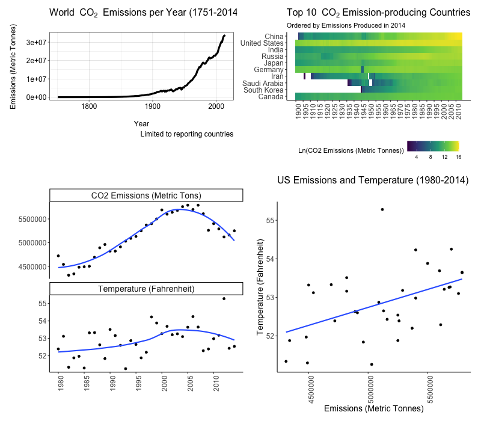
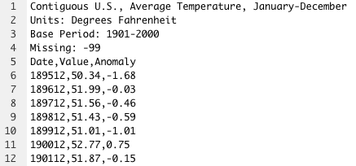

<!DOCTYPE html>

<html>

<head>

<meta charset="utf-8" />
<meta name="generator" content="pandoc" />
<meta http-equiv="X-UA-Compatible" content="IE=EDGE" />


<title>Open Case Studies: Exploring CO2 emissions across time</title>

<script src="site_libs/header-attrs-2.11/header-attrs.js"></script>
<script src="site_libs/jquery-3.6.0/jquery-3.6.0.min.js"></script>
<meta name="viewport" content="width=device-width, initial-scale=1" />
<link href="site_libs/bootstrap-3.3.5/css/cosmo.min.css" rel="stylesheet" />
<script src="site_libs/bootstrap-3.3.5/js/bootstrap.min.js"></script>
<script src="site_libs/bootstrap-3.3.5/shim/html5shiv.min.js"></script>
<script src="site_libs/bootstrap-3.3.5/shim/respond.min.js"></script>
<style>h1 {font-size: 34px;}
       h1.title {font-size: 38px;}
       h2 {font-size: 30px;}
       h3 {font-size: 24px;}
       h4 {font-size: 18px;}
       h5 {font-size: 16px;}
       h6 {font-size: 12px;}
       code {color: inherit; background-color: rgba(0, 0, 0, 0.04);}
       pre:not([class]) { background-color: white }</style>
<script src="site_libs/jqueryui-1.11.4/jquery-ui.min.js"></script>
<link href="site_libs/tocify-1.9.1/jquery.tocify.css" rel="stylesheet" />
<script src="site_libs/tocify-1.9.1/jquery.tocify.js"></script>
<script src="site_libs/navigation-1.1/tabsets.js"></script>
<script src="site_libs/navigation-1.1/codefolding.js"></script>
<script src="site_libs/navigation-1.1/sourceembed.js"></script>
<html>

<head>
<!-- Global site tag (gtag.js) - Google Analytics -->
<script async src="https://www.googletagmanager.com/gtag/js?id=G-DBLE7NM6XV"></script>
<script>
  window.dataLayer = window.dataLayer || [];
  function gtag(){dataLayer.push(arguments);}
  gtag('js', new Date());

  gtag('config', 'G-DBLE7NM6XV');
</script>
</head>

<body>

</body>
</html>

<style type="text/css">
  code{white-space: pre-wrap;}
  span.smallcaps{font-variant: small-caps;}
  span.underline{text-decoration: underline;}
  div.column{display: inline-block; vertical-align: top; width: 50%;}
  div.hanging-indent{margin-left: 1.5em; text-indent: -1.5em;}
  ul.task-list{list-style: none;}
    </style>


<style type="text/css">
  code {
    white-space: pre;
  }
  .sourceCode {
    overflow: visible;
  }
</style>
<style type="text/css" data-origin="pandoc">
pre > code.sourceCode { white-space: pre; position: relative; }
pre > code.sourceCode > span { display: inline-block; line-height: 1.25; }
pre > code.sourceCode > span:empty { height: 1.2em; }
.sourceCode { overflow: visible; }
code.sourceCode > span { color: inherit; text-decoration: inherit; }
div.sourceCode { margin: 1em 0; }
pre.sourceCode { margin: 0; }
@media screen {
div.sourceCode { overflow: auto; }
}
@media print {
pre > code.sourceCode { white-space: pre-wrap; }
pre > code.sourceCode > span { text-indent: -5em; padding-left: 5em; }
}
pre.numberSource code
  { counter-reset: source-line 0; }
pre.numberSource code > span
  { position: relative; left: -4em; counter-increment: source-line; }
pre.numberSource code > span > a:first-child::before
  { content: counter(source-line);
    position: relative; left: -1em; text-align: right; vertical-align: baseline;
    border: none; display: inline-block;
    -webkit-touch-callout: none; -webkit-user-select: none;
    -khtml-user-select: none; -moz-user-select: none;
    -ms-user-select: none; user-select: none;
    padding: 0 4px; width: 4em;
    color: #aaaaaa;
  }
pre.numberSource { margin-left: 3em; border-left: 1px solid #aaaaaa;  padding-left: 4px; }
div.sourceCode
  {  background-color: #f8f8f8; }
@media screen {
pre > code.sourceCode > span > a:first-child::before { text-decoration: underline; }
}
code span.al { color: #ef2929; } /* Alert */
code span.an { color: #8f5902; font-weight: bold; font-style: italic; } /* Annotation */
code span.at { color: #c4a000; } /* Attribute */
code span.bn { color: #0000cf; } /* BaseN */
code span.cf { color: #204a87; font-weight: bold; } /* ControlFlow */
code span.ch { color: #4e9a06; } /* Char */
code span.cn { color: #000000; } /* Constant */
code span.co { color: #8f5902; font-style: italic; } /* Comment */
code span.cv { color: #8f5902; font-weight: bold; font-style: italic; } /* CommentVar */
code span.do { color: #8f5902; font-weight: bold; font-style: italic; } /* Documentation */
code span.dt { color: #204a87; } /* DataType */
code span.dv { color: #0000cf; } /* DecVal */
code span.er { color: #a40000; font-weight: bold; } /* Error */
code span.ex { } /* Extension */
code span.fl { color: #0000cf; } /* Float */
code span.fu { color: #000000; } /* Function */
code span.im { } /* Import */
code span.in { color: #8f5902; font-weight: bold; font-style: italic; } /* Information */
code span.kw { color: #204a87; font-weight: bold; } /* Keyword */
code span.op { color: #ce5c00; font-weight: bold; } /* Operator */
code span.ot { color: #8f5902; } /* Other */
code span.pp { color: #8f5902; font-style: italic; } /* Preprocessor */
code span.sc { color: #000000; } /* SpecialChar */
code span.ss { color: #4e9a06; } /* SpecialString */
code span.st { color: #4e9a06; } /* String */
code span.va { color: #000000; } /* Variable */
code span.vs { color: #4e9a06; } /* VerbatimString */
code span.wa { color: #8f5902; font-weight: bold; font-style: italic; } /* Warning */

</style>
<script>
// apply pandoc div.sourceCode style to pre.sourceCode instead
(function() {
  var sheets = document.styleSheets;
  for (var i = 0; i < sheets.length; i++) {
    if (sheets[i].ownerNode.dataset["origin"] !== "pandoc") continue;
    try { var rules = sheets[i].cssRules; } catch (e) { continue; }
    for (var j = 0; j < rules.length; j++) {
      var rule = rules[j];
      // check if there is a div.sourceCode rule
      if (rule.type !== rule.STYLE_RULE || rule.selectorText !== "div.sourceCode") continue;
      var style = rule.style.cssText;
      // check if color or background-color is set
      if (rule.style.color === '' && rule.style.backgroundColor === '') continue;
      // replace div.sourceCode by a pre.sourceCode rule
      sheets[i].deleteRule(j);
      sheets[i].insertRule('pre.sourceCode{' + style + '}', j);
    }
  }
})();
</script>


<style type="text/css">
#rmd-source-code {
  display: none;
}
</style>


<link rel="stylesheet" href="style.css" type="text/css" />


<style type = "text/css">
.main-container {
  max-width: 940px;
  margin-left: auto;
  margin-right: auto;
}
img {
  max-width:100%;
}
.tabbed-pane {
  padding-top: 12px;
}
.html-widget {
  margin-bottom: 20px;
}
button.code-folding-btn:focus {
  outline: none;
}
summary {
  display: list-item;
}
pre code {
  padding: 0;
}
</style>


<!-- tabsets -->

<style type="text/css">
.tabset-dropdown > .nav-tabs {
  display: inline-table;
  max-height: 500px;
  min-height: 44px;
  overflow-y: auto;
  border: 1px solid #ddd;
  border-radius: 4px;
}

.tabset-dropdown > .nav-tabs > li.active:before {
  content: "";
  font-family: 'Glyphicons Halflings';
  display: inline-block;
  padding: 10px;
  border-right: 1px solid #ddd;
}

.tabset-dropdown > .nav-tabs.nav-tabs-open > li.active:before {
  content: "&#xe258;";
  border: none;
}

.tabset-dropdown > .nav-tabs.nav-tabs-open:before {
  content: "";
  font-family: 'Glyphicons Halflings';
  display: inline-block;
  padding: 10px;
  border-right: 1px solid #ddd;
}

.tabset-dropdown > .nav-tabs > li.active {
  display: block;
}

.tabset-dropdown > .nav-tabs > li > a,
.tabset-dropdown > .nav-tabs > li > a:focus,
.tabset-dropdown > .nav-tabs > li > a:hover {
  border: none;
  display: inline-block;
  border-radius: 4px;
  background-color: transparent;
}

.tabset-dropdown > .nav-tabs.nav-tabs-open > li {
  display: block;
  float: none;
}

.tabset-dropdown > .nav-tabs > li {
  display: none;
}
</style>

<!-- code folding -->
<style type="text/css">
.code-folding-btn { margin-bottom: 4px; }
</style>


<style type="text/css">

#TOC {
  margin: 25px 0px 20px 0px;
}
@media (max-width: 768px) {
#TOC {
  position: relative;
  width: 100%;
}
}

@media print {
.toc-content {
  /* see https://github.com/w3c/csswg-drafts/issues/4434 */
  float: right;
}
}

.toc-content {
  padding-left: 30px;
  padding-right: 40px;
}

div.main-container {
  max-width: 1200px;
}

div.tocify {
  width: 20%;
  max-width: 260px;
  max-height: 85%;
}

@media (min-width: 768px) and (max-width: 991px) {
  div.tocify {
    width: 25%;
  }
}

@media (max-width: 767px) {
  div.tocify {
    width: 100%;
    max-width: none;
  }
}

.tocify ul, .tocify li {
  line-height: 20px;
}

.tocify-subheader .tocify-item {
  font-size: 0.90em;
}

.tocify .list-group-item {
  border-radius: 0px;
}


</style>


</head>

<body>


<div class="container-fluid main-container">


<!-- setup 3col/9col grid for toc_float and main content  -->
<div class="row">
<div class="col-xs-12 col-sm-4 col-md-3">
<div id="TOC" class="tocify">
</div>
</div>

<div class="toc-content col-xs-12 col-sm-8 col-md-9">


<div id="header">

<div class="btn-group pull-right float-right">
<button type="button" class="btn btn-default btn-xs btn-secondary btn-sm dropdown-toggle" data-toggle="dropdown" aria-haspopup="true" aria-expanded="false"><span>Code</span> <span class="caret"></span></button>
<ul class="dropdown-menu dropdown-menu-right" style="min-width: 50px;">
<li><a id="rmd-download-source" href="#">Download Rmd</a></li>
</ul>
</div>


<h1 class="title toc-ignore">Open Case Studies: Exploring CO2 emissions across time</h1>

</div>


<style>
#TOC {
  background: url("https://opencasestudies.github.io/img/icon-bahi.png");
  background-size: contain;
  padding-top: 240px !important;
  background-repeat: no-repeat;
}
</style>
<html lang="en-US">
<body>
<!-- Open all links in new tab-->
<p><base target="_blank"/></p>
<div id="google_translate_element">

</div>
<script type="text/javascript" src='//translate.google.com/translate_a/element.js?cb=googleTranslateElementInit'></script>
<script type="text/javascript">
function googleTranslateElementInit() {
  new google.translate.TranslateElement({pageLanguage: 'en'}, 'google_translate_element');
}
</script>
<div id="section" class="section level4 outline">
<h4 class="outline"></h4>
<p></p>
</div>
<div id="section-1" class="section level4">
<h4></h4>
</div>
<div id="section-2" class="section level4 disclaimer_block">
<h4 class="disclaimer_block"></h4>
<p><strong>Disclaimer</strong>: The purpose of the <a href="https://opencasestudies.github.io" target="_blank">Open Case Studies</a> project is <strong>to demonstrate the use of various data science methods, tools, and software in the context of messy, real-world data</strong>. A given case study does not cover all aspects of the research process, is not claiming to be the most appropriate way to analyze a given dataset, and should not be used in the context of making policy decisions without external consultation from scientific experts.</p>
</div>
<div id="section-3" class="section level4">
<h4></h4>
</div>
<div id="section-4" class="section level4 license_block">
<h4 class="license_block"></h4>
<p>This work is licensed under the Creative Commons Attribution-NonCommercial 3.0 <a href="https://creativecommons.org/licenses/by-nc/3.0/us/" target="_blank">(CC BY-NC 3.0)</a> United States License.</p>
</div>
<div id="section-5" class="section level4">
<h4></h4>
</div>
<div id="section-6" class="section level4 reference_block">
<h4 class="reference_block"></h4>
<p>To cite this case study please use:</p>
<p>Wright, Carrie and Ontiveros, Michael and Jager, Leah and Taub, Margaret and Hicks, Stephanie. (2020). <a href="https://github.com/opencasestudies/ocs-bp-co2-emissions" class="uri">https://github.com/opencasestudies/ocs-bp-co2-emissions</a>. Exploring CO2 emissions across time (Version v1.0.0).</p>
</div>
<div id="section-7" class="section level4">
<h4></h4>
<p>To access the GitHub repository for this case study see here: <a href="https://github.com//opencasestudies/ocs-bp-co2-emissions" class="uri">https://github.com//opencasestudies/ocs-bp-co2-emissions</a>.</p>
<p>You may also access and download the data using our <code>OCSdata</code> package. To learn more about this package including examples, see this <a href="https://github.com/opencasestudies/OCSdata">link</a>. Here is how you would install this package:</p>
<div class="sourceCode" id="cb1"><pre class="sourceCode r"><code class="sourceCode r"><span id="cb1-1"><a href="#cb1-1" aria-hidden="true" tabindex="-1"></a><span class="fu">install.packages</span>(<span class="st">&quot;OCSdata&quot;</span>)</span></code></pre></div>
<p>This case study is part of a series of public health case studies for the <a href="https://americanhealth.jhu.edu/open-case-studies">Bloomberg American Health Initiative</a>.</p>
<hr />
<p>The total reading time for this case study is calculated via <a href="https://github.com/unDocUMeantIt/koRpus">koRpus</a> and shown below:</p>
<table>
<thead>
<tr class="header">
<th align="left">Reading Time</th>
<th align="left">Method</th>
</tr>
</thead>
<tbody>
<tr class="odd">
<td align="left">70 minutes</td>
<td align="left">koRpus</td>
</tr>
</tbody>
</table>
<hr />
<p><strong>Readability Score: </strong></p>
<p>A readability index estimates the reading difficulty level of a particular text. Flesch-Kincaid, FORCAST, and SMOG are three common readability indices that were calculated for this case study via <a href="https://github.com/unDocUMeantIt/koRpus">koRpus</a>. These indices provide an estimation of the minimum reading level required to comprehend this case study by grade and age.</p>
<pre><code>Text language: en </code></pre>
<table>
<thead>
<tr class="header">
<th align="left">index</th>
<th align="right">grade</th>
<th align="right">age</th>
</tr>
</thead>
<tbody>
<tr class="odd">
<td align="left">Flesch-Kincaid</td>
<td align="right">9</td>
<td align="right">14</td>
</tr>
<tr class="even">
<td align="left">FORCAST</td>
<td align="right">10</td>
<td align="right">15</td>
</tr>
<tr class="odd">
<td align="left">SMOG</td>
<td align="right">11</td>
<td align="right">16</td>
</tr>
</tbody>
</table>
<hr />
<p>Please help us by filling out our survey.</p>
<div style="display: flex; justify-content: center;">
<iframe src="https://docs.google.com/forms/d/e/1FAIpQLSfpN4FN3KELqBNEgf2Atpi7Wy7Nqy2beSkFQINL7Y5sAMV5_w/viewform?embedded=true" width="1200" height="700" frameborder="0" marginheight="0" marginwidth="0">
Loading…
</iframe>
</div>
</div>
<div id="motivation" class="section level1">
<h1><strong>Motivation</strong></h1>
<hr />
<p>This case study explores how different countries have contributed to Carbon Dioxide (CO2) emissions over time and how CO2 emission rates may relate to increasing global temperatures and increased rates of natural disasters and storms. We used this <a href="https://www.epa.gov/report-environment/greenhouse-gases" target="_blank">report from the EPA</a> as the basis for motivating this case study, as it provides background information about how CO2 emissions and other greenhouse gases have influenced the climate and weather patterns.</p>
<p>CO2 makes up the largest proportion of greenhouse gas emissions in the United States:</p>
<p></p>
<div id="source" class="section level5">
<h5><a href="https://www.epa.gov/ghgemissions/inventory-us-greenhouse-gas-emissions-and-sinks" target="_blank">[source]</a></h5>
<p>A variety of sources and sectors contribute to greenhouse gas emissions:</p>
<p></p>
</div>
<div id="source-1" class="section level5">
<h5><a href="https://www.epa.gov/ghgemissions/inventory-us-greenhouse-gas-emissions-and-sinks" target="_blank">[source]</a></h5>
<p>Transportation and Electricity contribute the most metric tons of CO2:</p>
<p></p>
</div>
<div id="source-2" class="section level5">
<h5><a href="https://www.epa.gov/ghgemissions/inventory-us-greenhouse-gas-emissions-and-sinks" target="_blank">[source]</a></h5>
<p>So why should we pay attention to greenhouse gases?</p>
<p>According to the <a href="https://www.epa.gov/sites/production/files/2020-04/documents/us-ghg-inventory-2020-main-text.pdf" target="_blank">US Environmental Protection Agency (EPA) Inventory of U.S. Greenhouse Gas Emissions and Sinks 2020 Report</a>:</p>
<blockquote>
<p>Greenhouse gases absorb infrared radiation, thereby trapping heat in the atmosphere and making the planet warmer. The most important greenhouse gases directly emitted by humans include carbon dioxide (CO2), methane (CH4), nitrous oxide (N2O), and several fluorine-containing halogenated substances. Although CO2, CH4, and N2O occur naturally in the atmosphere, human activities have changed their atmospheric concentrations. From the pre- industrial era (i.e., ending about 1750) to 2018, concentrations of these greenhouse gases have increased globally by 46, 165, and 23 percent, respectively (IPCC 2013; NOAA/ESRL 2019a, 2019b, 2019c).</p>
</blockquote>
<p>* IPCC stands for the Intergovernmental Panel on Climate Change</p>
<p>In fact, there are many signs that our planet is experiencing warmer temperatures:</p>
<p></p>
</div>
<div id="source-3" class="section level5">
<h5><a href="https://data.globalchange.gov/report/nca3-overview" target="_blank">[source]</a></h5>
<p>The connection between greenhouse gas levels and global temperatures and the influence of increased global temperatures on human health are motivated by these reports:</p>
</div>
<div id="section-8" class="section level4 reference_block">
<h4 class="reference_block"></h4>
<ul>
<li><p>Melillo, J.M., T.C. Richmond, and G.W. Yohe (eds.). 2014. Climate change impacts in the United States: The third National Climate Assessment. U.S. Global Change Research Program.</p></li>
<li><ol start="2020" style="list-style-type: decimal">
<li>“Inventory of US Greenhouse Gas Emissions and Sinks: 1990–2018.” EPA 430-R-20-002, Tech. Rep. <a href="https://www.epa.gov/ghgemissions/inventory-us-greenhouse-gas-emissions-and-sinks" class="uri">https://www.epa.gov/ghgemissions/inventory-us-greenhouse-gas-emissions-and-sinks</a>.</li>
</ol></li>
</ul>
</div>
<div id="section-9" class="section level4">
<h4></h4>
<p>The <a href="https://data.globalchange.gov/report/nca3-overview" target="_blank">National Climate Assessment Report</a> states that:</p>
<blockquote>
<p>Heat-trapping gases already in the atmosphere have committed us to a hotter future with more climate-related impacts over the next few decades. The magnitude of climate change beyond the next few decades depends primarily on the amount of heat-trapping gases that human activities emit globally, now and in the future.</p>
</blockquote>
<p>See the following links for more information about how greenhouse gases have influenced global temperatures: 1) The EPA <a href="https://www.epa.gov/report-environment/greenhouse-gases" target="_blank">report</a> on green house gases<br />
2) The National Climate Assessment (NCA) <a href="https://nca2014.globalchange.gov/" target="_blank">summary from 2014</a>) 3) The <a href="https://world101.cfr.org/global-era-issues/climate-change/climate-change-adaptations" target="_blank">World101 website</a> about how countries are adapting to climate change</p>
</div>
</div>
<div id="main-questions" class="section level1">
<h1><strong>Main Questions</strong></h1>
<hr />
<div id="section-10" class="section level4 main_question_block">
<h4 class="main_question_block"></h4>
<p><b><u> Our main questions: </u></b></p>
<ol style="list-style-type: decimal">
<li>How have global CO2 emission rates changed over time? In particular for the US, and how does the US compare to other countries?</li>
<li>Are CO2 emissions in the US, global temperatures, and natural disaster rates in the US associated?</li>
</ol>
</div>
<div id="section-11" class="section level4">
<h4></h4>
</div>
</div>
<div id="learning-objectives" class="section level1">
<h1><strong>Learning Objectives</strong></h1>
<hr />
<p>In this case study, we will explore CO2 emission data from around the world. We will also focus on the US specifically to evaluate patterns of temperatures and natural disaster activity.</p>
<p>This case study will particularly focus on how to use different datasets that span different ranges of time, as well as how to create visualizations of patterns over time. We will especially focus on using packages and functions from the <a href="https://www.tidyverse.org/" target="_blank"><code>tidyverse</code></a>, such as <code>dplyr</code>, <code>tidyr</code>, and <code>ggplot2</code>.</p>
<p>The tidyverse is a library of packages created by RStudio. While some students may be familiar with previous R programming packages, these packages make data science in R especially legible and intuitive.</p>
<p>The skills, methods, and concepts that students will be familiar with by the end of this case study are:</p>
<p><u><strong>Data Science Learning Objectives:</strong></u></p>
<ol style="list-style-type: decimal">
<li>Importing data from various types of Excel files and CSV files</li>
<li>Apply action verbs in <code>dplyr</code> for data wrangling</li>
<li>How to pivot between “long” and “wide” datasets</li>
<li>Joining together multiple datasets using <code>dplyr</code></li>
<li>How to create effective longitudinal data visualizations with <code>ggplot2</code></li>
<li>How to add text, color, and labels to <code>ggplot2</code> plots</li>
<li>How to create faceted <code>ggplot2</code> plots</li>
</ol>
<p><u><strong>Statistical Learning Objectives:</strong></u></p>
<ol style="list-style-type: decimal">
<li>Introduction to correlation coefficient as a summary statistic</li>
<li>Relationship between correlation and linear regression</li>
<li>Correlation is not causation</li>
</ol>
<p></p>
<hr />
<p>We will begin by loading the packages that we will need:</p>
<div class="sourceCode" id="cb3"><pre class="sourceCode r"><code class="sourceCode r"><span id="cb3-1"><a href="#cb3-1" aria-hidden="true" tabindex="-1"></a><span class="fu">library</span>(here)</span>
<span id="cb3-2"><a href="#cb3-2" aria-hidden="true" tabindex="-1"></a><span class="fu">library</span>(readxl)</span>
<span id="cb3-3"><a href="#cb3-3" aria-hidden="true" tabindex="-1"></a><span class="fu">library</span>(readr)</span>
<span id="cb3-4"><a href="#cb3-4" aria-hidden="true" tabindex="-1"></a><span class="fu">library</span>(dplyr)</span>
<span id="cb3-5"><a href="#cb3-5" aria-hidden="true" tabindex="-1"></a><span class="fu">library</span>(magrittr)</span>
<span id="cb3-6"><a href="#cb3-6" aria-hidden="true" tabindex="-1"></a><span class="fu">library</span>(stringr)</span>
<span id="cb3-7"><a href="#cb3-7" aria-hidden="true" tabindex="-1"></a><span class="fu">library</span>(purrr)</span>
<span id="cb3-8"><a href="#cb3-8" aria-hidden="true" tabindex="-1"></a><span class="fu">library</span>(tidyr)</span>
<span id="cb3-9"><a href="#cb3-9" aria-hidden="true" tabindex="-1"></a><span class="fu">library</span>(forcats)</span>
<span id="cb3-10"><a href="#cb3-10" aria-hidden="true" tabindex="-1"></a><span class="fu">library</span>(ggplot2)</span>
<span id="cb3-11"><a href="#cb3-11" aria-hidden="true" tabindex="-1"></a><span class="fu">library</span>(directlabels)</span>
<span id="cb3-12"><a href="#cb3-12" aria-hidden="true" tabindex="-1"></a><span class="fu">library</span>(ggrepel)</span>
<span id="cb3-13"><a href="#cb3-13" aria-hidden="true" tabindex="-1"></a><span class="fu">library</span>(broom)</span>
<span id="cb3-14"><a href="#cb3-14" aria-hidden="true" tabindex="-1"></a><span class="fu">library</span>(patchwork)</span>
<span id="cb3-15"><a href="#cb3-15" aria-hidden="true" tabindex="-1"></a><span class="fu">library</span>(OCSdata)</span></code></pre></div>
<p><u><strong>Packages used in this case study:</strong> </u></p>
<table>
<colgroup>
<col width="43%" />
<col width="56%" />
</colgroup>
<thead>
<tr class="header">
<th>Package</th>
<th>Use in this case study</th>
</tr>
</thead>
<tbody>
<tr class="odd">
<td><a href="https://github.com/jennybc/here_here" target="_blank"><code>here</code></a></td>
<td>to easily load and save data</td>
</tr>
<tr class="even">
<td><a href="https://readxl.tidyverse.org/" target="_blank"><code>readxl</code></a></td>
<td>to import the Excel file data</td>
</tr>
<tr class="odd">
<td><a href="https://readr.tidyverse.org/" target="_blank"><code>readr</code></a></td>
<td>to import the csv file data</td>
</tr>
<tr class="even">
<td><a href="https://dplyr.tidyverse.org/" target="_blank"><code>dplyr</code></a></td>
<td>to view and wrangle the data, by modifying variables, renaming variables, selecting variables, creating variables, and arranging values within a variable</td>
</tr>
<tr class="odd">
<td><a href="https://cran.r-project.org/web/packages/magrittr/vignettes/magrittr.html" target="_blank"><code>magrittr</code></a></td>
<td>to use and reassign data objects using the <code>%&lt;&gt;%</code>pipe operator</td>
</tr>
<tr class="even">
<td><a href="https://stringr.tidyverse.org/" target="_blank"><code>stringr</code></a></td>
<td>to select only the first 4 characters of date data</td>
</tr>
<tr class="odd">
<td><a href="https://purrr.tidyverse.org/" target="_blank"><code>purrr</code></a></td>
<td>to apply a function on a list of tibbles (tibbles are the tidyverse version of a data frame)</td>
</tr>
<tr class="even">
<td><a href="https://tidyr.tidyverse.org/" target="_blank"><code>tidyr</code></a></td>
<td>to drop rows with <code>NA</code> values from a tibble</td>
</tr>
<tr class="odd">
<td><a href="https://forcats.tidyverse.org/" target="_blank"><code>forcats</code></a></td>
<td>to reorder the levels of a factor</td>
</tr>
<tr class="even">
<td><a href="https://ggplot2.tidyverse.org/" target="_blank"><code>ggplot2</code></a></td>
<td>to make visualizations</td>
</tr>
<tr class="odd">
<td><a href="http://directlabels.r-forge.r-project.org/docs/index.html" target="_blank"><code>directlabels</code></a></td>
<td>to add labels to plots easily</td>
</tr>
<tr class="even">
<td><a href="https://cran.r-project.org/web/packages/ggrepel/vignettes/ggrepel.html" target="_blank"><code>ggrepel</code></a></td>
<td>to add labels that don’t overlap to plots</td>
</tr>
<tr class="odd">
<td><a href="https://www.tidyverse.org/blog/2018/07/broom-0-5-0/"><code>broom</code></a></td>
<td>to make the output form statistical tests easier to work with</td>
</tr>
<tr class="even">
<td><a href="https://github.com/thomasp85/patchwork" target="_blank"><code>patchwork</code></a></td>
<td>to combine plots</td>
</tr>
<tr class="odd">
<td><a href="https://github.com/opencasestudies/OCSdata" target="_blank"><code>OCSdata</code></a></td>
<td>to access and download OCS data files</td>
</tr>
</tbody>
</table>
<p>The first time we use a function, we will use the <code>::</code> to indicate which package we are using. Unless we have overlapping function names, this is not necessary, but we will include it here to be informative about where the functions we will use come from.</p>
</div>
<div id="context" class="section level1">
<h1><strong>Context</strong></h1>
<hr />
<p>Now we will describe a bit more background about greenhouse gas emissions and the potential influence of these emissions on public health.</p>
<p>Greenhouse gas emissions are due to both natural processes and anthropogenic (human-derived) activities.</p>
<p>These emissions are one of the contributing factors to rising global temperatures, which can have a great influence on <a href="https://www.epa.gov/climate-indicators/understanding-connections-between-climate-change-and-human-health" target="_blank">public health</a> as illustrated in the following image:</p>
<p></p>
<div id="source-4" class="section level5">
<h5><a href="https://www.cdc.gov/climateandhealth/effects/default.htm" target="_blank">[source]</a></h5>
<p>According to the <a href="https://www.epa.gov/sites/production/files/2020-04/documents/us-ghg-inventory-2020-main-text.pdf" target="_blank">US Environmental Protection Agency (EPA) Inventory of U.S. Greenhouse Gas Emissions and Sinks 2020 Report</a>:</p>
<blockquote>
<p>Gases in the atmosphere can contribute to climate change both directly and indirectly. Direct effects occur when the gas itself absorbs radiation. Indirect radiative forcing occurs when chemical transformations of the substance produce other greenhouse gases, when a gas influences the atmospheric lifetimes of other gases, and/or when a gas affects atmospheric processes that alter the radiative balance of the earth (e.g., affect cloud formation or <a href="https://en.wikipedia.org/wiki/Albedo" target="_blank">albedo</a>).</p>
</blockquote>
<p>The <strong>Global Warming Potential (GWP)</strong> compares the <strong>ability of a greenhouse gas to trap heat in the atmosphere relative to another gas</strong>.</p>
<blockquote>
<p>The GWP of a greenhouse gas is defined as the ratio of the accumulated radiative forcing within a specific time horizon caused by emitting 1 kilogram of the gas, relative to that of the reference gas CO2 (IPCC 2013). Therefore GWP-weighted emissions are provided in million metric tons of CO2 equivalent (MMT CO2 Eq.)</p>
</blockquote>
</div>
<div id="source-5" class="section level5">
<h5><a href="https://www.epa.gov/sites/production/files/2020-04/documents/us-ghg-inventory-2020-main-text.pdf" target="_blank">[source]</a></h5>
<p>CO2 is actually the least heat-trapping gas of the greenhouse gases:</p>
<p></p>
</div>
<div id="source-6" class="section level5">
<h5><a href="https://www.epa.gov/sites/production/files/2020-04/documents/us-ghg-inventory-2020-main-text.pdf" target="_blank">[source]</a></h5>
<p>However, because CO2 is so much more abundant and stays in the atmosphere so much longer than other greenhouse gases, it has been the largest contributor to global warming. See <a href="https://www.ucsusa.org/resources/why-does-co2-get-more-attention-other-gases#:~:text=CO2%20sticks%20around,oxide%20(N2O)" target="_blank">here</a> for more details.</p>
<p>It is also important to keep in mind that there is a <a href="https://earthobservatory.nasa.gov/blogs/climateqa/would-gw-stop-with-greenhouse-gases/">lag</a> between greenhouse gas emissions and temperature changes that we experience because much of Earth’s thermal energy (and CO2) gets stored in the ocean.</p>
<p>Due to a process called <a href="https://en.wikipedia.org/wiki/Volumetric_heat_capacity#Thermal_inertia">thermal inertia</a>, the heat stored in the ocean will eventually be transfered to the surface of the Earth long after the gases were emitted that resulted in the increased ocean temperature.</p>
<p>See <a href="https://earthobservatory.nasa.gov/blogs/climateqa/would-gw-stop-with-greenhouse-gases/">here</a> for more explanation.</p>
<p>Furthermore, rising CO2 levels in the ocean also influence ocean acidity:</p>
<p></p>
</div>
<div id="source-7" class="section level5">
<h5><a href="https://data.globalchange.gov/report/nca3-overview" target="_blank">[source]</a></h5>
<p>As CO2 levels rise in the ocean, the pH becomes more acidic, which makes it difficult for organisms to maintain their shells or skeletons that are made of calcium carbonate, thus making it more difficult for these organisms to survive and impacting their role in the ecosystem and food chain.</p>
<p>Furthermore, greenhouse gas emissions are believed to influence weather patterns as shown in this <a href="https://data.globalchange.gov/report/nca3-overview" target="_blank">report</a>.</p>
<p>Indeed, events with high levels of precipitation which can induce flooding and property damage are generally increasing around the country:</p>
<p></p>
</div>
<div id="source-8" class="section level5">
<h5><a href="https://data.globalchange.gov/report/nca3-overview" target="_blank">[source]</a></h5>
</div>
</div>
<div id="limitations" class="section level1">
<h1><strong>Limitations</strong></h1>
<hr />
<p>An important limitation regarding this data analysis to keep in mind is the datasets only include countries and years in which countries were reporting such information to the agencies that collected the data. Thus, the data are incomplete. For example, while we have a fairly good sense of CO2 emissions globally for later years, additional emissions were also produced by countries that are not included in the data.</p>
</div>
<div id="what-are-the-data" class="section level1">
<h1><strong>What are the data?</strong></h1>
<hr />
<p>In this case study we will be using data related to CO2 emissions, as well as other data that may influence, be influenced or relate to CO2 emissions. Most of our data is from <a href="https://www.gapminder.org/data/" target="_blank">Gapminder</a> that was originally obtained from the <a href="https://www.worldbank.org/en/what-we-do" target="_blank">World Bank</a>.</p>
<p>In addition, we will use some data that is specific to the United States from the <a href="https://www.noaa.gov/" target="_blank">National Oceanic and Atmospheric Administration (NOAA)</a>, which is an agency that collects weather and climate data.</p>
<table style="width:100%;">
<colgroup>
<col width="12%" />
<col width="17%" />
<col width="14%" />
<col width="14%" />
<col width="31%" />
<col width="9%" />
</colgroup>
<thead>
<tr class="header">
<th>Data</th>
<th>Time span</th>
<th>Source</th>
<th>Original Source</th>
<th>Description</th>
<th>Citation</th>
</tr>
</thead>
<tbody>
<tr class="odd">
<td><strong>CO2 emissions</strong></td>
<td>1751-2014</td>
<td><a href="https://www.gapminder.org/data/" target="_blank">Gapminder</a></td>
<td><a href="https://cdiac.ess-dive.lbl.gov/" target="_blank">Carbon Dioxide Information Analysis Center (CDIAC)</a></td>
<td>CO2 emissions in tonnes or metric tons (equivalent to approximately 2,204.6 pounds) per person by country</td>
<td>NA</td>
</tr>
<tr class="even">
<td><strong>GDP per capita (percent yearly growth)</strong></td>
<td>1801-2019</td>
<td><a href="https://www.gapminder.org/data/" target="_blank">Gapminder</a></td>
<td><a href="https://data.worldbank.org/indicator/NY.GDP.PCAP.KD.ZG" target="_blank">World Bank</a></td>
<td><a href="https://www.investopedia.com/terms/g/gdp.asp#:~:text=Gross%20Domestic%20Product%20(GDP)%20is%20the%20monetary%20value%20of%20all,expenditures%2C%20production%2C%20or%20incomes." target="_blank">Growth Domestic Product</a> (which is an overall measure of the health of nation’s economy) per person by country</td>
<td>NA</td>
</tr>
<tr class="odd">
<td><strong>Energy use per person</strong></td>
<td>1960-2015</td>
<td><a href="https://www.gapminder.org/data/" target="_blank">Gapminder</a></td>
<td><a href="https://data.worldbank.org/indicator/EG.USE.PCAP.KG.OE" target="_blank">World Bank</a></td>
<td>Use of primary energy before transformation to other end-use fuels, by country</td>
<td>NA</td>
</tr>
<tr class="even">
<td><strong>US Natural Disasters</strong></td>
<td>1980-2019</td>
<td><a href="https://www.ncdc.noaa.gov/billions/time-series" target="_blank">The National Oceanic and Atmospheric Administration (NOAA)</a></td>
<td><a href="https://www.ncdc.noaa.gov/billions/time-series" target="_blank">The National Oceanic and Atmospheric Administration (NOAA)</a></td>
<td>US data about: <br> – Droughts <br> – Floods <br> – Freezes <br> – Severe Storms <br> – Tropical Cyclones <br> – Wildfires<br> – Winter Storms</td>
<td>NOAA National Centers for Environmental Information (NCEI) U.S. Billion-Dollar Weather and Climate Disasters (2020). <a href="https://www.ncdc.noaa.gov/billions/" class="uri">https://www.ncdc.noaa.gov/billions/</a>, DOI: 10.25921/stkw-7w73</td>
</tr>
<tr class="odd">
<td><strong>Temperature</strong></td>
<td>1895-2019</td>
<td><a href="https://www.ncdc.noaa.gov/cag/national/time-series" target="_blank">The National Oceanic and Atmospheric Administration (NOAA)</a></td>
<td><a href="https://www.ncdc.noaa.gov/cag/national/time-series" target="_blank">The National Oceanic and Atmospheric Administration (NOAA)</a></td>
<td>US National yearly average temperature (in Fahrenheit) from 1895 to 2019</td>
<td>NOAA National Centers for Environmental information, Climate at a Glance: National Time Series, published June 2020, retrieved on June 26, 2020 from <a href="https://www.ncdc.noaa.gov/cag/" class="uri">https://www.ncdc.noaa.gov/cag/</a></td>
</tr>
</tbody>
</table>
<p>To obtain the temperature data, the annual average temperatures were selected as shown in this image: </p>
<div id="source-9" class="section level5">
<h5><a href="https://www.ncdc.noaa.gov/cag/national/time-series" target="_blank">[source]</a></h5>
<p>Importantly, notice that the data we would like to use span different time periods:</p>
<table>
<thead>
<tr class="header">
<th>Data</th>
<th>Time span</th>
</tr>
</thead>
<tbody>
<tr class="odd">
<td><strong>CO2 emissions</strong></td>
<td>1751 to 2014</td>
</tr>
<tr class="even">
<td><strong>GDP per capita (yearly growth)</strong></td>
<td>1801 to 2019</td>
</tr>
<tr class="odd">
<td><strong>Energy use per person</strong></td>
<td>1960 to 2015</td>
</tr>
<tr class="even">
<td><strong>US Natural Disasters</strong></td>
<td>1980 to 2019</td>
</tr>
<tr class="odd">
<td><strong>Temperature</strong></td>
<td>1895 to 2019</td>
</tr>
</tbody>
</table>
<p>We will explore more about this a bit later.</p>
</div>
<div id="section-12" class="section level4 think_question_block">
<h4 class="think_question_block"></h4>
<p><b><u> Question Opportunity </u></b></p>
<p>What concerns might arise about reliability and variation of measurement practices over time?</p>
</div>
<div id="section-13" class="section level4">
<h4></h4>
</div>
</div>
<div id="data-import" class="section level1">
<h1><strong>Data Import</strong></h1>
<hr />
<p>In our case, we downloaded the data for the files from the various sources as indicated in the table above and put them within a “raw” subdirectory of a “data” directory for our project. If you use an RStudio project, then you can use the <code>here()</code> function of the <code>here</code> package to make the path for importing this data simpler. The <code>here</code> package automatically starts looking for files based on where you have a <code>.Rproj</code> file which is created when you start a new RStudio project. We can specify that we want to look for the “yearly_co2_emissions_1000_tonnes.xlsx” file within the “raw” directory within the “data” directory within a directory where our <code>.Rproj</code> file is located by separating the names of these directories using commas and listing “data” first.</p>
<hr />
<details>
<summary>
Click here to see more about creating new projects in RStudio.
</summary>
<p>You can create a project by going to the File menu of RStudio like so:</p>
<p></p>
<p>You can also do so by clicking the project button:</p>
<p></p>
<p>See <a href="https://support.rstudio.com/hc/en-us/articles/200526207-Using-Projects">here</a> to learn more about using RStudio projects and <a href="https://github.com/jennybc/here_here">here</a> to learn more about the <code>here</code> package.</p>
</details>
<hr />
<p>To read in the files that were downloaded from the various sources as indicated in the table above, we will use the <code>read_xlsx()</code> and <code>read_xls()</code> functions of the <code>readxl</code> package to import the data from the <code>.xlsx</code> and <code>.xls</code> files, respectively. We will also use the <code>here()</code> function of the <code>here</code> package to more easily specify the path to our files relative to the directory where the .Rproj file is located.</p>
<div class="sourceCode" id="cb4"><pre class="sourceCode r"><code class="sourceCode r"><span id="cb4-1"><a href="#cb4-1" aria-hidden="true" tabindex="-1"></a>CO2_emissions <span class="ot">&lt;-</span> readxl<span class="sc">::</span><span class="fu">read_xlsx</span>(<span class="fu">here</span>(<span class="st">&quot;data&quot;</span>,<span class="st">&quot;raw&quot;</span>, <span class="st">&quot;yearly_co2_emissions_1000_tonnes.xlsx&quot;</span>))</span>
<span id="cb4-2"><a href="#cb4-2" aria-hidden="true" tabindex="-1"></a>gdp_growth    <span class="ot">&lt;-</span> readxl<span class="sc">::</span><span class="fu">read_xlsx</span>(<span class="fu">here</span>(<span class="st">&quot;data&quot;</span>, <span class="st">&quot;raw&quot;</span>, <span class="st">&quot;gdp_per_capita_yearly_growth.xlsx&quot;</span>))</span>
<span id="cb4-3"><a href="#cb4-3" aria-hidden="true" tabindex="-1"></a>energy_use    <span class="ot">&lt;-</span> readxl<span class="sc">::</span><span class="fu">read_xlsx</span>(<span class="fu">here</span>(<span class="st">&quot;data&quot;</span>, <span class="st">&quot;raw&quot;</span>, <span class="st">&quot;energy_use_per_person.xlsx&quot;</span>))</span></code></pre></div>
<p>If you had trouble downloading these files, you can do so at our <a href="https://github.com//opencasestudies/ocs-bp-co2-emissions/tree/master/data/raw/">GitHub repo</a> or more directly by clicking <a href="https://raw.githubusercontent.com/opencasestudies/ocs-bp-co2-emissions/master/data/raw/yearly_co2_emissions_1000_tonnes.xlsx">here</a>, <a href="https://raw.githubusercontent.com/opencasestudies/ocs-bp-co2-emissions/master/data/raw/gdp_per_capita_yearly_growth.xlsx">here</a>, and <a href="https://raw.githubusercontent.com/opencasestudies/ocs-bp-co2-emissions/master/data/raw/energy_use_per_person.xlsx">here</a>.</p>
<p>You may also download these files using the <code>OCSdata</code> package:</p>
<div class="sourceCode" id="cb5"><pre class="sourceCode r"><code class="sourceCode r"><span id="cb5-1"><a href="#cb5-1" aria-hidden="true" tabindex="-1"></a><span class="co"># install.packages(&quot;OCSdata&quot;)</span></span>
<span id="cb5-2"><a href="#cb5-2" aria-hidden="true" tabindex="-1"></a><span class="fu">library</span>(OCSdata)</span>
<span id="cb5-3"><a href="#cb5-3" aria-hidden="true" tabindex="-1"></a><span class="fu">raw_data</span>(<span class="st">&quot;ocs-bp-co2-emissions&quot;</span>, <span class="at">outpath =</span> <span class="fu">getwd</span>())</span>
<span id="cb5-4"><a href="#cb5-4" aria-hidden="true" tabindex="-1"></a><span class="co"># This will save the raw data files in a &quot;OCSdata/data/raw/&quot; subfolder </span></span>
<span id="cb5-5"><a href="#cb5-5" aria-hidden="true" tabindex="-1"></a><span class="co"># in your current working directory</span></span></code></pre></div>
<p>We will use the <code>read_csv()</code> function of the <code>readr</code> package to import the data from the <code>.csv</code> files.</p>
<p>However, for these files there are some lines that we would like to not import because the number of columns differ for some rows. If we don’t account for this, then we may end up importing fewer columns of the data that we would like.</p>
<p>In the first 5 rows shown below in the <code>data/disasters.csv</code> file, you can see that the first two rows does not have the same number of columns as the subsequent rows and are just (sub)titles.</p>
<p></p>
<p>To do this, we can skip rows using the <code>skip = 2</code> argument of the <code>read_csv()</code> function.</p>
<div class="sourceCode" id="cb6"><pre class="sourceCode r"><code class="sourceCode r"><span id="cb6-1"><a href="#cb6-1" aria-hidden="true" tabindex="-1"></a>us_disaster <span class="ot">&lt;-</span> readr<span class="sc">::</span><span class="fu">read_csv</span>(<span class="fu">here</span>(<span class="st">&quot;data&quot;</span>, <span class="st">&quot;raw&quot;</span>, <span class="st">&quot;disasters.csv&quot;</span>), <span class="at">skip =</span> <span class="dv">2</span>)</span></code></pre></div>
<p>If you had trouble downloading this file, you can do so at our <a href="https://github.com//opencasestudies/ocs-bp-co2-emissions/tree/master/data/raw">GitHub repo</a> or more directly by clicking <a href="https://raw.githubusercontent.com/opencasestudies/ocs-bp-co2-emissions/master/data/raw/disasters.csv">here</a>.</p>
<p>Now looking at the <code>data/temperature.csv</code> file, we see that the first four lines do not have the same number of columns as the subsequent lines.</p>
<p></p>
<p>We will skip importing all 4 lines by using <code>skip = 4</code>. We can also replace all instances of <code>"-99"</code> with <code>NA</code> using the <code>na = "-99"</code> argument of the <code>read_csv()</code> function. The “-99” needs to be in quotation marks because this argument expects characters.</p>
<hr />
<details>
<summary>
Click here for an explanation about data types in R and about character strings.
</summary>
<p>There are several <a href="https://en.wikipedia.org/wiki/R_(programming_language)">classes of data in R programming</a>, meaning that certain objects will be treated or interpreted differently. Character is one of these classes. A character string is an individual data value made up of characters. This can be a paragraph, like the legend for the table, or it can be a single letter or number like the letter “a” or the number “3”. If data are of class character, than the numeric values will not be processed like a numeric value in a mathematical sense. If you want your numeric values to be interpreted that way, they need to be converted to a numeric class. The options typically used are integer (which has no decimal place) and double precision (which has a decimal place).</p>
<p>A variable that is a factor has a set of particular values called levels (this can be numbers or characters). Even if these are numeric, they will be interpreted as levels (i.e., as if they were characters) not as mathematical numbers. The values of a factor are assumed to have a particular ordering; by default the order is alphabetical, but this is not always the correct/intuitive ordering. You can modify the order of these levels with the <code>forcats</code> package.</p>
</details>
<hr />
<div class="sourceCode" id="cb7"><pre class="sourceCode r"><code class="sourceCode r"><span id="cb7-1"><a href="#cb7-1" aria-hidden="true" tabindex="-1"></a>us_temperature <span class="ot">&lt;-</span> readr<span class="sc">::</span><span class="fu">read_csv</span>(<span class="fu">here</span>(<span class="st">&quot;data&quot;</span>, <span class="st">&quot;raw&quot;</span>, <span class="st">&quot;temperature.csv&quot;</span>), <span class="at">skip =</span> <span class="dv">4</span>, <span class="at">na =</span> <span class="st">&quot;-99&quot;</span>)</span></code></pre></div>
<p>If you had trouble downloading this file, you can do so at our <a href="https://github.com//opencasestudies/ocs-bp-co2-emissions/tree/master/data/raw">GitHub repo</a> or more directly by clicking <a href="https://raw.githubusercontent.com/opencasestudies/ocs-bp-co2-emissions/master/data/raw/temperature.csv">here</a>.</p>
<p>Great! now we have imported all of the data that we will need.</p>
<p>To allow users to skip import we will save the data as an RDA file:</p>
<div class="sourceCode" id="cb8"><pre class="sourceCode r"><code class="sourceCode r"><span id="cb8-1"><a href="#cb8-1" aria-hidden="true" tabindex="-1"></a><span class="fu">save</span>(CO2_emissions, </span>
<span id="cb8-2"><a href="#cb8-2" aria-hidden="true" tabindex="-1"></a>     gdp_growth,</span>
<span id="cb8-3"><a href="#cb8-3" aria-hidden="true" tabindex="-1"></a>     energy_use, </span>
<span id="cb8-4"><a href="#cb8-4" aria-hidden="true" tabindex="-1"></a>     us_disaster, </span>
<span id="cb8-5"><a href="#cb8-5" aria-hidden="true" tabindex="-1"></a>     us_temperature, </span>
<span id="cb8-6"><a href="#cb8-6" aria-hidden="true" tabindex="-1"></a>     <span class="at">file =</span> here<span class="sc">::</span><span class="fu">here</span>(<span class="st">&quot;data&quot;</span>, <span class="st">&quot;imported&quot;</span>, <span class="st">&quot;co2_data_imported.rda&quot;</span>))</span></code></pre></div>
</div>
<div id="data-wrangling" class="section level1">
<h1><strong>Data Wrangling</strong></h1>
<hr />
<p>If you have been following along but stopped, we could load our imported data like so:</p>
<div class="sourceCode" id="cb9"><pre class="sourceCode r"><code class="sourceCode r"><span id="cb9-1"><a href="#cb9-1" aria-hidden="true" tabindex="-1"></a><span class="fu">load</span>(here<span class="sc">::</span><span class="fu">here</span>(<span class="st">&quot;data&quot;</span>, <span class="st">&quot;imported&quot;</span>, <span class="st">&quot;co2_data_imported.rda&quot;</span>))</span></code></pre></div>
<hr />
<details>
<summary>
If you skipped the data import section click here.
</summary>
<p>First you need to install and load the <code>OCSdata</code> package:</p>
<div class="sourceCode" id="cb10"><pre class="sourceCode r"><code class="sourceCode r"><span id="cb10-1"><a href="#cb10-1" aria-hidden="true" tabindex="-1"></a><span class="fu">install.packages</span>(<span class="st">&quot;OCSdata&quot;</span>)</span>
<span id="cb10-2"><a href="#cb10-2" aria-hidden="true" tabindex="-1"></a><span class="fu">library</span>(OCSdata)</span></code></pre></div>
<p>Then, you may load the imported data using the following code:</p>
<div class="sourceCode" id="cb11"><pre class="sourceCode r"><code class="sourceCode r"><span id="cb11-1"><a href="#cb11-1" aria-hidden="true" tabindex="-1"></a><span class="fu">imported_data</span>(<span class="st">&quot;ocs-bp-co2-emissions&quot;</span>, <span class="at">outpath =</span> <span class="fu">getwd</span>())</span>
<span id="cb11-2"><a href="#cb11-2" aria-hidden="true" tabindex="-1"></a><span class="fu">load</span>(here<span class="sc">::</span><span class="fu">here</span>(<span class="st">&quot;OCSdata&quot;</span>, <span class="st">&quot;data&quot;</span>, <span class="st">&quot;imported&quot;</span>, <span class="st">&quot;co2_data_imported.rda&quot;</span>))</span></code></pre></div>
<p>If the package does not work for you, alternatively, an RDA file (stands for R data) of the data can be found <a href="https://github.com//opencasestudies/ocs-bp-co2-emissions/tree/master/data/imported">here</a> or slightly more directly <a href="https://raw.githubusercontent.com/opencasestudies/ocs-bp-co2-emissions/master/data/imported/co2_data_imported.rda">here</a>. Download this file and then place it in your current working directory within a subdirectory called “imported” within a directory called “data” to copy and paste our code. We used an RStudio project and the <a href="https://github.com/jennybc/here_here"><code>here</code> package</a> to navigate to the file more easily.</p>
<div class="sourceCode" id="cb12"><pre class="sourceCode r"><code class="sourceCode r"><span id="cb12-1"><a href="#cb12-1" aria-hidden="true" tabindex="-1"></a><span class="fu">load</span>(here<span class="sc">::</span><span class="fu">here</span>(<span class="st">&quot;data&quot;</span>, <span class="st">&quot;imported&quot;</span>, <span class="st">&quot;co2_data_imported.rda&quot;</span>))</span></code></pre></div>
<hr />
<details>
<summary>
Click here to see more about creating new projects in RStudio.
</summary>
<p>You can create a project by going to the File menu of RStudio like so:</p>
<p></p>
<p>You can also do so by clicking the project button:</p>
<p></p>
<p>See <a href="https://support.rstudio.com/hc/en-us/articles/200526207-Using-Projects">here</a> to learn more about using RStudio projects and <a href="https://github.com/jennybc/here_here">here</a> to learn more about the <code>here</code> package.</p>
</details>
<hr />
</details>
<hr />
<p>Next, we take a look at our data that we just imported. We will need to do some data wrangling to allow us to evaluate how CO2 emissions have changed over time and how emissions may relate to energy use, GDP, etc. Let’s explore how to do that with useful functions and packages from the <code>tidyverse</code>.</p>
<div id="yearly-co2-emissions" class="section level2">
<h2><strong>Yearly CO<sub>2</sub> Emissions</strong></h2>
<hr />
<p>First, let’s take a look at the CO2 data (<code>CO2_emissions</code>). We can use the <code>slice_head()</code> function of the <code>dplyr</code> package to see just the first rows of our data. We can specify how many rows we would like to see by using the <code>n =</code> argument.</p>
<p>We will use the <code>%&gt;%</code> pipe from the <code>magrittr</code> package (although it is also imported by other <code>tidyverse</code> packages, like <code>dplyr</code>), which can be used to define the input for later sequential steps. This will make more sense when we have multiple sequential steps using the same data object.</p>
<div class="sourceCode" id="cb13"><pre class="sourceCode r"><code class="sourceCode r"><span id="cb13-1"><a href="#cb13-1" aria-hidden="true" tabindex="-1"></a>CO2_emissions <span class="sc">%&gt;%</span></span>
<span id="cb13-2"><a href="#cb13-2" aria-hidden="true" tabindex="-1"></a>  <span class="fu">slice_head</span>(<span class="at">n =</span> <span class="dv">3</span>)</span></code></pre></div>
<pre><code># A tibble: 3 x 265
  country  `1751` `1752` `1753` `1754` `1755` `1756` `1757` `1758` `1759` `1760`
  &lt;chr&gt;     &lt;dbl&gt;  &lt;dbl&gt;  &lt;dbl&gt;  &lt;dbl&gt;  &lt;dbl&gt;  &lt;dbl&gt;  &lt;dbl&gt;  &lt;dbl&gt;  &lt;dbl&gt;  &lt;dbl&gt;
1 Afghani~     NA     NA     NA     NA     NA     NA     NA     NA     NA     NA
2 Albania      NA     NA     NA     NA     NA     NA     NA     NA     NA     NA
3 Algeria      NA     NA     NA     NA     NA     NA     NA     NA     NA     NA
# ... with 254 more variables: `1761` &lt;dbl&gt;, `1762` &lt;dbl&gt;, `1763` &lt;dbl&gt;,
#   `1764` &lt;dbl&gt;, `1765` &lt;dbl&gt;, `1766` &lt;dbl&gt;, `1767` &lt;dbl&gt;, `1768` &lt;dbl&gt;,
#   `1769` &lt;dbl&gt;, `1770` &lt;dbl&gt;, `1771` &lt;dbl&gt;, `1772` &lt;dbl&gt;, `1773` &lt;dbl&gt;,
#   `1774` &lt;dbl&gt;, `1775` &lt;dbl&gt;, `1776` &lt;dbl&gt;, `1777` &lt;dbl&gt;, `1778` &lt;dbl&gt;,
#   `1779` &lt;dbl&gt;, `1780` &lt;dbl&gt;, `1781` &lt;dbl&gt;, `1782` &lt;dbl&gt;, `1783` &lt;dbl&gt;,
#   `1784` &lt;dbl&gt;, `1785` &lt;dbl&gt;, `1786` &lt;dbl&gt;, `1787` &lt;dbl&gt;, `1788` &lt;dbl&gt;,
#   `1789` &lt;dbl&gt;, `1790` &lt;dbl&gt;, `1791` &lt;dbl&gt;, `1792` &lt;dbl&gt;, `1793` &lt;dbl&gt;, ...</code></pre>
<p>Another useful function is <code>slice_sample()</code> to look at a <strong>selection of random rows</strong> using <a href="https://en.wikipedia.org/wiki/Pseudorandomness" target="_blank">pseudorandom</a> numbers for the index of rows to show. To continue to get the same random values or for others to get the same values, we need to set a seed first. We can do this with the <code>set.seed()</code> base function. We just specify a number with this function and that will allow us to get the same subset of values from the <code>slice_sample()</code> function. If two different people ran this code (without set.seed()), they would each see a different subset of rows. For data exploration, this isn’t a huge deal, but if we’d like separate analysts running the same code to see the same output, we will use set.seed(). If we changed set.seed(123) to set.seed(333), we would obtain a different random sample of rows.</p>
<div class="sourceCode" id="cb15"><pre class="sourceCode r"><code class="sourceCode r"><span id="cb15-1"><a href="#cb15-1" aria-hidden="true" tabindex="-1"></a><span class="fu">set.seed</span>(<span class="dv">123</span>)</span>
<span id="cb15-2"><a href="#cb15-2" aria-hidden="true" tabindex="-1"></a></span>
<span id="cb15-3"><a href="#cb15-3" aria-hidden="true" tabindex="-1"></a>CO2_emissions <span class="sc">%&gt;%</span></span>
<span id="cb15-4"><a href="#cb15-4" aria-hidden="true" tabindex="-1"></a>  <span class="fu">slice_sample</span>(<span class="at">n =</span> <span class="dv">3</span>)</span></code></pre></div>
<pre><code># A tibble: 3 x 265
  country  `1751` `1752` `1753` `1754` `1755` `1756` `1757` `1758` `1759` `1760`
  &lt;chr&gt;     &lt;dbl&gt;  &lt;dbl&gt;  &lt;dbl&gt;  &lt;dbl&gt;  &lt;dbl&gt;  &lt;dbl&gt;  &lt;dbl&gt;  &lt;dbl&gt;  &lt;dbl&gt;  &lt;dbl&gt;
1 Sri Lan~     NA     NA     NA     NA     NA     NA     NA     NA     NA     NA
2 Tuvalu       NA     NA     NA     NA     NA     NA     NA     NA     NA     NA
3 Banglad~     NA     NA     NA     NA     NA     NA     NA     NA     NA     NA
# ... with 254 more variables: `1761` &lt;dbl&gt;, `1762` &lt;dbl&gt;, `1763` &lt;dbl&gt;,
#   `1764` &lt;dbl&gt;, `1765` &lt;dbl&gt;, `1766` &lt;dbl&gt;, `1767` &lt;dbl&gt;, `1768` &lt;dbl&gt;,
#   `1769` &lt;dbl&gt;, `1770` &lt;dbl&gt;, `1771` &lt;dbl&gt;, `1772` &lt;dbl&gt;, `1773` &lt;dbl&gt;,
#   `1774` &lt;dbl&gt;, `1775` &lt;dbl&gt;, `1776` &lt;dbl&gt;, `1777` &lt;dbl&gt;, `1778` &lt;dbl&gt;,
#   `1779` &lt;dbl&gt;, `1780` &lt;dbl&gt;, `1781` &lt;dbl&gt;, `1782` &lt;dbl&gt;, `1783` &lt;dbl&gt;,
#   `1784` &lt;dbl&gt;, `1785` &lt;dbl&gt;, `1786` &lt;dbl&gt;, `1787` &lt;dbl&gt;, `1788` &lt;dbl&gt;,
#   `1789` &lt;dbl&gt;, `1790` &lt;dbl&gt;, `1791` &lt;dbl&gt;, `1792` &lt;dbl&gt;, `1793` &lt;dbl&gt;, ...</code></pre>
<div id="section-14" class="section level4 think_question_block">
<h4 class="think_question_block"></h4>
<p><b><u> Question Opportunity </u></b></p>
<p>Try setting a different seed to see the difference in the output.</p>
</div>
<div id="section-15" class="section level4">
<h4></h4>
<p>OK, we see each country is represented along one row and each column contains yearly CO2 emissions. We also see that there are a lot of <code>NA</code> values.</p>
<p>We can also use the <code>glimpse()</code> function of the <code>dplyr</code> package to view our data. This allows us to see all of our variables at once. We will see a tiny bit of each variable/column with the data displayed on the right.</p>
</div>
<div id="section-16" class="section level4 scrollable">
<h4 class="scrollable"></h4>
<div class="sourceCode" id="cb17"><pre class="sourceCode r"><code class="sourceCode r"><span id="cb17-1"><a href="#cb17-1" aria-hidden="true" tabindex="-1"></a><span class="co"># Scroll through the output!</span></span>
<span id="cb17-2"><a href="#cb17-2" aria-hidden="true" tabindex="-1"></a>CO2_emissions <span class="sc">%&gt;%</span></span>
<span id="cb17-3"><a href="#cb17-3" aria-hidden="true" tabindex="-1"></a>  dplyr<span class="sc">::</span><span class="fu">glimpse</span>()</span></code></pre></div>
<pre><code>Rows: 192
Columns: 265
$ country &lt;chr&gt; &quot;Afghanistan&quot;, &quot;Albania&quot;, &quot;Algeria&quot;, &quot;Andorra&quot;, &quot;Angola&quot;, &quot;Ant~
$ `1751`  &lt;dbl&gt; NA, NA, NA, NA, NA, NA, NA, NA, NA, NA, NA, NA, NA, NA, NA, NA~
$ `1752`  &lt;dbl&gt; NA, NA, NA, NA, NA, NA, NA, NA, NA, NA, NA, NA, NA, NA, NA, NA~
$ `1753`  &lt;dbl&gt; NA, NA, NA, NA, NA, NA, NA, NA, NA, NA, NA, NA, NA, NA, NA, NA~
$ `1754`  &lt;dbl&gt; NA, NA, NA, NA, NA, NA, NA, NA, NA, NA, NA, NA, NA, NA, NA, NA~
$ `1755`  &lt;dbl&gt; NA, NA, NA, NA, NA, NA, NA, NA, NA, NA, NA, NA, NA, NA, NA, NA~
$ `1756`  &lt;dbl&gt; NA, NA, NA, NA, NA, NA, NA, NA, NA, NA, NA, NA, NA, NA, NA, NA~
$ `1757`  &lt;dbl&gt; NA, NA, NA, NA, NA, NA, NA, NA, NA, NA, NA, NA, NA, NA, NA, NA~
$ `1758`  &lt;dbl&gt; NA, NA, NA, NA, NA, NA, NA, NA, NA, NA, NA, NA, NA, NA, NA, NA~
$ `1759`  &lt;dbl&gt; NA, NA, NA, NA, NA, NA, NA, NA, NA, NA, NA, NA, NA, NA, NA, NA~
$ `1760`  &lt;dbl&gt; NA, NA, NA, NA, NA, NA, NA, NA, NA, NA, NA, NA, NA, NA, NA, NA~
$ `1761`  &lt;dbl&gt; NA, NA, NA, NA, NA, NA, NA, NA, NA, NA, NA, NA, NA, NA, NA, NA~
$ `1762`  &lt;dbl&gt; NA, NA, NA, NA, NA, NA, NA, NA, NA, NA, NA, NA, NA, NA, NA, NA~
$ `1763`  &lt;dbl&gt; NA, NA, NA, NA, NA, NA, NA, NA, NA, NA, NA, NA, NA, NA, NA, NA~
$ `1764`  &lt;dbl&gt; NA, NA, NA, NA, NA, NA, NA, NA, NA, NA, NA, NA, NA, NA, NA, NA~
$ `1765`  &lt;dbl&gt; NA, NA, NA, NA, NA, NA, NA, NA, NA, NA, NA, NA, NA, NA, NA, NA~
$ `1766`  &lt;dbl&gt; NA, NA, NA, NA, NA, NA, NA, NA, NA, NA, NA, NA, NA, NA, NA, NA~
$ `1767`  &lt;dbl&gt; NA, NA, NA, NA, NA, NA, NA, NA, NA, NA, NA, NA, NA, NA, NA, NA~
$ `1768`  &lt;dbl&gt; NA, NA, NA, NA, NA, NA, NA, NA, NA, NA, NA, NA, NA, NA, NA, NA~
$ `1769`  &lt;dbl&gt; NA, NA, NA, NA, NA, NA, NA, NA, NA, NA, NA, NA, NA, NA, NA, NA~
$ `1770`  &lt;dbl&gt; NA, NA, NA, NA, NA, NA, NA, NA, NA, NA, NA, NA, NA, NA, NA, NA~
$ `1771`  &lt;dbl&gt; NA, NA, NA, NA, NA, NA, NA, NA, NA, NA, NA, NA, NA, NA, NA, NA~
$ `1772`  &lt;dbl&gt; NA, NA, NA, NA, NA, NA, NA, NA, NA, NA, NA, NA, NA, NA, NA, NA~
$ `1773`  &lt;dbl&gt; NA, NA, NA, NA, NA, NA, NA, NA, NA, NA, NA, NA, NA, NA, NA, NA~
$ `1774`  &lt;dbl&gt; NA, NA, NA, NA, NA, NA, NA, NA, NA, NA, NA, NA, NA, NA, NA, NA~
$ `1775`  &lt;dbl&gt; NA, NA, NA, NA, NA, NA, NA, NA, NA, NA, NA, NA, NA, NA, NA, NA~
$ `1776`  &lt;dbl&gt; NA, NA, NA, NA, NA, NA, NA, NA, NA, NA, NA, NA, NA, NA, NA, NA~
$ `1777`  &lt;dbl&gt; NA, NA, NA, NA, NA, NA, NA, NA, NA, NA, NA, NA, NA, NA, NA, NA~
$ `1778`  &lt;dbl&gt; NA, NA, NA, NA, NA, NA, NA, NA, NA, NA, NA, NA, NA, NA, NA, NA~
$ `1779`  &lt;dbl&gt; NA, NA, NA, NA, NA, NA, NA, NA, NA, NA, NA, NA, NA, NA, NA, NA~
$ `1780`  &lt;dbl&gt; NA, NA, NA, NA, NA, NA, NA, NA, NA, NA, NA, NA, NA, NA, NA, NA~
$ `1781`  &lt;dbl&gt; NA, NA, NA, NA, NA, NA, NA, NA, NA, NA, NA, NA, NA, NA, NA, NA~
$ `1782`  &lt;dbl&gt; NA, NA, NA, NA, NA, NA, NA, NA, NA, NA, NA, NA, NA, NA, NA, NA~
$ `1783`  &lt;dbl&gt; NA, NA, NA, NA, NA, NA, NA, NA, NA, NA, NA, NA, NA, NA, NA, NA~
$ `1784`  &lt;dbl&gt; NA, NA, NA, NA, NA, NA, NA, NA, NA, NA, NA, NA, NA, NA, NA, NA~
$ `1785`  &lt;dbl&gt; NA, NA, NA, NA, NA, NA, NA, NA, NA, NA, NA, NA, NA, NA, NA, NA~
$ `1786`  &lt;dbl&gt; NA, NA, NA, NA, NA, NA, NA, NA, NA, NA, NA, NA, NA, NA, NA, NA~
$ `1787`  &lt;dbl&gt; NA, NA, NA, NA, NA, NA, NA, NA, NA, NA, NA, NA, NA, NA, NA, NA~
$ `1788`  &lt;dbl&gt; NA, NA, NA, NA, NA, NA, NA, NA, NA, NA, NA, NA, NA, NA, NA, NA~
$ `1789`  &lt;dbl&gt; NA, NA, NA, NA, NA, NA, NA, NA, NA, NA, NA, NA, NA, NA, NA, NA~
$ `1790`  &lt;dbl&gt; NA, NA, NA, NA, NA, NA, NA, NA, NA, NA, NA, NA, NA, NA, NA, NA~
$ `1791`  &lt;dbl&gt; NA, NA, NA, NA, NA, NA, NA, NA, NA, NA, NA, NA, NA, NA, NA, NA~
$ `1792`  &lt;dbl&gt; NA, NA, NA, NA, NA, NA, NA, NA, NA, NA, NA, NA, NA, NA, NA, NA~
$ `1793`  &lt;dbl&gt; NA, NA, NA, NA, NA, NA, NA, NA, NA, NA, NA, NA, NA, NA, NA, NA~
$ `1794`  &lt;dbl&gt; NA, NA, NA, NA, NA, NA, NA, NA, NA, NA, NA, NA, NA, NA, NA, NA~
$ `1795`  &lt;dbl&gt; NA, NA, NA, NA, NA, NA, NA, NA, NA, NA, NA, NA, NA, NA, NA, NA~
$ `1796`  &lt;dbl&gt; NA, NA, NA, NA, NA, NA, NA, NA, NA, NA, NA, NA, NA, NA, NA, NA~
$ `1797`  &lt;dbl&gt; NA, NA, NA, NA, NA, NA, NA, NA, NA, NA, NA, NA, NA, NA, NA, NA~
$ `1798`  &lt;dbl&gt; NA, NA, NA, NA, NA, NA, NA, NA, NA, NA, NA, NA, NA, NA, NA, NA~
$ `1799`  &lt;dbl&gt; NA, NA, NA, NA, NA, NA, NA, NA, NA, NA, NA, NA, NA, NA, NA, NA~
$ `1800`  &lt;dbl&gt; NA, NA, NA, NA, NA, NA, NA, NA, NA, NA, NA, NA, NA, NA, NA, NA~
$ `1801`  &lt;dbl&gt; NA, NA, NA, NA, NA, NA, NA, NA, NA, NA, NA, NA, NA, NA, NA, NA~
$ `1802`  &lt;dbl&gt; NA, NA, NA, NA, NA, NA, NA, NA, NA, NA, NA, NA, NA, NA, NA, NA~
$ `1803`  &lt;dbl&gt; NA, NA, NA, NA, NA, NA, NA, NA, NA, NA, NA, NA, NA, NA, NA, NA~
$ `1804`  &lt;dbl&gt; NA, NA, NA, NA, NA, NA, NA, NA, NA, NA, NA, NA, NA, NA, NA, NA~
$ `1805`  &lt;dbl&gt; NA, NA, NA, NA, NA, NA, NA, NA, NA, NA, NA, NA, NA, NA, NA, NA~
$ `1806`  &lt;dbl&gt; NA, NA, NA, NA, NA, NA, NA, NA, NA, NA, NA, NA, NA, NA, NA, NA~
$ `1807`  &lt;dbl&gt; NA, NA, NA, NA, NA, NA, NA, NA, NA, 169, NA, NA, NA, NA, NA, N~
$ `1808`  &lt;dbl&gt; NA, NA, NA, NA, NA, NA, NA, NA, NA, NA, NA, NA, NA, NA, NA, NA~
$ `1809`  &lt;dbl&gt; NA, NA, NA, NA, NA, NA, NA, NA, NA, NA, NA, NA, NA, NA, NA, NA~
$ `1810`  &lt;dbl&gt; NA, NA, NA, NA, NA, NA, NA, NA, NA, NA, NA, NA, NA, NA, NA, NA~
$ `1811`  &lt;dbl&gt; NA, NA, NA, NA, NA, NA, NA, NA, NA, NA, NA, NA, NA, NA, NA, NA~
$ `1812`  &lt;dbl&gt; NA, NA, NA, NA, NA, NA, NA, NA, NA, NA, NA, NA, NA, NA, NA, NA~
$ `1813`  &lt;dbl&gt; NA, NA, NA, NA, NA, NA, NA, NA, NA, NA, NA, NA, NA, NA, NA, NA~
$ `1814`  &lt;dbl&gt; NA, NA, NA, NA, NA, NA, NA, NA, NA, NA, NA, NA, NA, NA, NA, NA~
$ `1815`  &lt;dbl&gt; NA, NA, NA, NA, NA, NA, NA, NA, NA, NA, NA, NA, NA, NA, NA, NA~
$ `1816`  &lt;dbl&gt; NA, NA, NA, NA, NA, NA, NA, NA, NA, NA, NA, NA, NA, NA, NA, NA~
$ `1817`  &lt;dbl&gt; NA, NA, NA, NA, NA, NA, NA, NA, NA, NA, NA, NA, NA, NA, NA, NA~
$ `1818`  &lt;dbl&gt; NA, NA, NA, NA, NA, NA, NA, NA, NA, NA, NA, NA, NA, NA, NA, NA~
$ `1819`  &lt;dbl&gt; NA, NA, NA, NA, NA, NA, NA, NA, NA, 253, NA, NA, NA, NA, NA, N~
$ `1820`  &lt;dbl&gt; NA, NA, NA, NA, NA, NA, NA, NA, NA, 334, NA, NA, NA, NA, NA, N~
$ `1821`  &lt;dbl&gt; NA, NA, NA, NA, NA, NA, NA, NA, NA, 359, NA, NA, NA, NA, NA, N~
$ `1822`  &lt;dbl&gt; NA, NA, NA, NA, NA, NA, NA, NA, NA, 367, NA, NA, NA, NA, NA, N~
$ `1823`  &lt;dbl&gt; NA, NA, NA, NA, NA, NA, NA, NA, NA, 348, NA, NA, NA, NA, NA, N~
$ `1824`  &lt;dbl&gt; NA, NA, NA, NA, NA, NA, NA, NA, NA, 400, NA, NA, NA, NA, NA, N~
$ `1825`  &lt;dbl&gt; NA, NA, NA, NA, NA, NA, NA, NA, NA, 403, NA, NA, NA, NA, NA, N~
$ `1826`  &lt;dbl&gt; NA, NA, NA, NA, NA, NA, NA, NA, NA, 458, NA, NA, NA, NA, NA, N~
$ `1827`  &lt;dbl&gt; NA, NA, NA, NA, NA, NA, NA, NA, NA, 477, NA, NA, NA, NA, NA, N~
$ `1828`  &lt;dbl&gt; NA, NA, NA, NA, NA, NA, NA, NA, NA, 458, NA, NA, NA, NA, NA, N~
$ `1829`  &lt;dbl&gt; NA, NA, NA, NA, NA, NA, NA, NA, NA, 477, NA, NA, NA, NA, NA, N~
$ `1830`  &lt;dbl&gt; NA, NA, NA, NA, NA, NA, NA, 0.032, NA, 495.000, 0.308, NA, NA,~
$ `1831`  &lt;dbl&gt; NA, NA, NA, NA, NA, NA, NA, 3.84e-02, NA, 4.80e+02, 3.70e-01, ~
$ `1832`  &lt;dbl&gt; NA, NA, NA, NA, NA, NA, NA, 2.56e-02, NA, 5.13e+02, 2.47e-01, ~
$ `1833`  &lt;dbl&gt; NA, NA, NA, NA, NA, NA, NA, 0.032, NA, 429.000, 0.308, NA, NA,~
$ `1834`  &lt;dbl&gt; NA, NA, NA, NA, NA, NA, NA, NA, NA, 587, NA, NA, NA, NA, NA, N~
$ `1835`  &lt;dbl&gt; NA, NA, NA, NA, NA, NA, NA, NA, NA, 634, NA, NA, NA, NA, NA, N~
$ `1836`  &lt;dbl&gt; NA, NA, NA, NA, NA, NA, NA, NA, NA, 675, NA, NA, NA, NA, NA, N~
$ `1837`  &lt;dbl&gt; NA, NA, NA, NA, NA, NA, NA, NA, NA, 708, NA, NA, NA, NA, NA, N~
$ `1838`  &lt;dbl&gt; NA, NA, NA, NA, NA, NA, NA, NA, NA, 851, NA, NA, NA, NA, NA, N~
$ `1839`  &lt;dbl&gt; NA, NA, NA, NA, NA, NA, NA, NA, NA, 1060, NA, NA, NA, NA, NA, ~
$ `1840`  &lt;dbl&gt; NA, NA, NA, NA, NA, NA, NA, NA, NA, 1170, NA, NA, NA, NA, NA, ~
$ `1841`  &lt;dbl&gt; NA, NA, NA, NA, NA, NA, NA, NA, NA, 1320, NA, NA, NA, NA, NA, ~
$ `1842`  &lt;dbl&gt; NA, NA, NA, NA, NA, NA, NA, NA, NA, 1460, NA, NA, NA, NA, NA, ~
$ `1843`  &lt;dbl&gt; NA, NA, NA, NA, NA, NA, NA, NA, NA, 1270, NA, NA, NA, NA, NA, ~
$ `1844`  &lt;dbl&gt; NA, NA, NA, NA, NA, NA, NA, NA, NA, 1600, NA, NA, NA, NA, NA, ~
$ `1845`  &lt;dbl&gt; NA, NA, NA, NA, NA, NA, NA, NA, NA, 1800, NA, NA, NA, NA, NA, ~
$ `1846`  &lt;dbl&gt; NA, NA, NA, NA, NA, NA, NA, NA, NA, 2120, NA, NA, NA, NA, NA, ~
$ `1847`  &lt;dbl&gt; NA, NA, NA, NA, NA, NA, NA, NA, NA, 2080, NA, NA, NA, NA, NA, ~
$ `1848`  &lt;dbl&gt; NA, NA, NA, NA, NA, NA, NA, NA, NA, 2340, NA, NA, NA, NA, NA, ~
$ `1849`  &lt;dbl&gt; NA, NA, NA, NA, NA, NA, NA, NA, NA, 2260, NA, NA, NA, NA, NA, ~
$ `1850`  &lt;dbl&gt; NA, NA, NA, NA, NA, NA, NA, 0.198, NA, 2330.000, 1.910, NA, NA~
$ `1851`  &lt;dbl&gt; NA, NA, NA, NA, NA, NA, NA, NA, NA, 2340, NA, NA, NA, NA, NA, ~
$ `1852`  &lt;dbl&gt; NA, NA, NA, NA, NA, NA, NA, NA, NA, 2810, NA, NA, NA, NA, NA, ~
$ `1853`  &lt;dbl&gt; NA, NA, NA, NA, NA, NA, NA, NA, NA, 3230, NA, NA, NA, NA, NA, ~
$ `1854`  &lt;dbl&gt; NA, NA, NA, NA, NA, NA, NA, NA, NA, 3180, NA, NA, NA, NA, NA, ~
$ `1855`  &lt;dbl&gt; NA, NA, NA, NA, NA, NA, NA, 6.01e-01, NA, 3.70e+03, 5.80e+00, ~
$ `1856`  &lt;dbl&gt; NA, NA, NA, NA, NA, NA, NA, NA, NA, 4240, NA, NA, NA, NA, NA, ~
$ `1857`  &lt;dbl&gt; NA, NA, NA, NA, NA, NA, NA, NA, NA, 4880, NA, NA, NA, NA, NA, ~
$ `1858`  &lt;dbl&gt; NA, NA, NA, NA, NA, NA, NA, 8.44e-01, NA, 7.25e+03, 8.14e+00, ~
$ `1859`  &lt;dbl&gt; NA, NA, NA, NA, NA, NA, NA, 8.95e-01, NA, 5.87e+03, 8.64e+00, ~
$ `1860`  &lt;dbl&gt; NA, NA, NA, NA, NA, NA, NA, 1.18, 279.00, 6150.00, 11.40, NA, ~
$ `1861`  &lt;dbl&gt; NA, NA, NA, NA, NA, NA, NA, 1.5, 510.0, 6380.0, 14.5, NA, NA, ~
$ `1862`  &lt;dbl&gt; NA, NA, NA, NA, NA, NA, NA, 1.36, 356.00, 6360.00, 13.10, NA, ~
$ `1863`  &lt;dbl&gt; NA, NA, NA, NA, NA, NA, NA, 1.42, 400.00, 5880.00, 13.70, NA, ~
$ `1864`  &lt;dbl&gt; NA, NA, NA, NA, NA, NA, NA, 1.59, 268.00, 5080.00, 15.40, NA, ~
$ `1865`  &lt;dbl&gt; NA, NA, NA, NA, NA, NA, NA, 1.52, 422.00, 5360.00, 14.70, NA, ~
$ `1866`  &lt;dbl&gt; NA, NA, NA, NA, NA, NA, NA, 4.81, 697.00, 3600.00, 46.40, NA, ~
$ `1867`  &lt;dbl&gt; NA, NA, NA, NA, NA, NA, NA, 5.52, 895.00, 4920.00, 53.20, NA, ~
$ `1868`  &lt;dbl&gt; NA, NA, NA, NA, NA, NA, NA, 4.59, 733.00, 6080.00, 44.30, NA, ~
$ `1869`  &lt;dbl&gt; NA, NA, NA, NA, NA, NA, NA, 6.23, 642.00, 6490.00, 60.10, NA, ~
$ `1870`  &lt;dbl&gt; NA, NA, NA, NA, NA, NA, NA, 6.76, 601.00, 7370.00, 65.20, NA, ~
$ `1871`  &lt;dbl&gt; NA, NA, NA, NA, NA, NA, NA, 9.12, 693.00, 10200.00, 88.00, NA,~
$ `1872`  &lt;dbl&gt; NA, NA, NA, NA, NA, NA, NA, 9.36, 708.00, 10000.00, 90.40, NA,~
$ `1873`  &lt;dbl&gt; NA, NA, NA, NA, NA, NA, NA, 8.79, 869.00, 10700.00, 84.80, NA,~
$ `1874`  &lt;dbl&gt; NA, NA, NA, NA, NA, NA, NA, 10.7, 891.0, 9160.0, 103.0, NA, NA~
$ `1875`  &lt;dbl&gt; NA, NA, NA, NA, NA, NA, NA, 12.3, 829.0, 7870.0, 119.0, NA, NA~
$ `1876`  &lt;dbl&gt; NA, NA, NA, NA, NA, NA, NA, 15.2, 931.0, 8100.0, 147.0, NA, NA~
$ `1877`  &lt;dbl&gt; NA, NA, NA, NA, NA, NA, NA, 15.6, 1070.0, 7290.0, 150.0, NA, N~
$ `1878`  &lt;dbl&gt; NA, NA, NA, NA, NA, NA, NA, 20.3, 968.0, 7250.0, 196.0, NA, NA~
$ `1879`  &lt;dbl&gt; NA, NA, NA, NA, NA, NA, NA, 20.9, 1460.0, 8870.0, 201.0, NA, N~
$ `1880`  &lt;dbl&gt; NA, NA, NA, NA, NA, NA, NA, 24.5, 2210.0, 23700.0, 236.0, NA, ~
$ `1881`  &lt;dbl&gt; NA, NA, NA, NA, NA, NA, NA, 25.80, 1770.00, 10300.00, 249.00, ~
$ `1882`  &lt;dbl&gt; NA, NA, NA, NA, NA, NA, NA, 27.20, 2010.00, 10600.00, 262.00, ~
$ `1883`  &lt;dbl&gt; NA, NA, NA, NA, NA, NA, NA, 30.90, 2430.00, 11800.00, 298.00, ~
$ `1884`  &lt;dbl&gt; NA, NA, NA, NA, NA, NA, NA, 31.4, 2570.0, 11500.0, 303.0, NA, ~
$ `1885`  &lt;dbl&gt; NA, NA, NA, NA, NA, NA, NA, 34.20, 2910.00, 12100.00, 330.00, ~
$ `1886`  &lt;dbl&gt; NA, NA, NA, NA, NA, NA, NA, 35.10, 2890.00, 11400.00, 338.00, ~
$ `1887`  &lt;dbl&gt; NA, NA, NA, NA, NA, NA, 1090.0, 37.1, 3040.0, 12300.0, 358.0, ~
$ `1888`  &lt;dbl&gt; NA, NA, NA, NA, NA, NA, 891.0, 38.7, 3530.0, 12000.0, 373.0, N~
$ `1889`  &lt;dbl&gt; NA, NA, NA, NA, NA, NA, 1760.0, 41.8, 3430.0, 12900.0, 403.0, ~
$ `1890`  &lt;dbl&gt; NA, NA, NA, NA, NA, NA, 1370.0, 47.3, 3550.0, 13000.0, 457.0, ~
$ `1891`  &lt;dbl&gt; NA, NA, NA, NA, NA, NA, 939.0, 52.1, 4010.0, 15000.0, 503.0, N~
$ `1892`  &lt;dbl&gt; NA, NA, NA, NA, NA, NA, 1390.0, 55.1, 4150.0, 14500.0, 532.0, ~
$ `1893`  &lt;dbl&gt; NA, NA, NA, NA, NA, NA, 1550.0, 64.6, 3970.0, 17700.0, 624.0, ~
$ `1894`  &lt;dbl&gt; NA, NA, NA, NA, NA, NA, 1990.0, 65.8, 4360.0, 18100.0, 635.0, ~
$ `1895`  &lt;dbl&gt; NA, NA, NA, NA, NA, NA, 2270.0, 75.6, 4590.0, 20400.0, 730.0, ~
$ `1896`  &lt;dbl&gt; NA, NA, NA, NA, NA, NA, 2310, 77, 4510, 21300, 743, NA, NA, NA~
$ `1897`  &lt;dbl&gt; NA, NA, NA, NA, NA, NA, 2080, 89, 4980, 23000, 859, NA, NA, NA~
$ `1898`  &lt;dbl&gt; NA, NA, NA, NA, NA, NA, 2350.0, 99.9, 5620.0, 24500.0, 964.0, ~
$ `1899`  &lt;dbl&gt; NA, NA, NA, NA, NA, NA, 2920, 116, 5790, 24800, 1120, NA, NA, ~
$ `1900`  &lt;dbl&gt; NA, NA, NA, NA, NA, NA, 2070, 131, 10200, 27700, 1270, NA, NA,~
$ `1901`  &lt;dbl&gt; NA, NA, NA, NA, NA, NA, 2490, 135, 11400, 28400, 1300, NA, NA,~
$ `1902`  &lt;dbl&gt; NA, NA, NA, NA, NA, NA, 2820, 130, 11400, 25700, 1260, NA, NA,~
$ `1903`  &lt;dbl&gt; NA, NA, NA, NA, NA, NA, 2860, 127, 11200, 25600, 1230, NA, NA,~
$ `1904`  &lt;dbl&gt; NA, NA, NA, NA, NA, NA, 3800, 142, 11600, 26900, 1370, NA, NA,~
$ `1905`  &lt;dbl&gt; NA, NA, NA, NA, NA, NA, 3990, 126, 12100, 28100, 1220, NA, NA,~
$ `1906`  &lt;dbl&gt; NA, NA, NA, NA, NA, NA, 6260, 144, 14400, 33600, 1390, NA, NA,~
$ `1907`  &lt;dbl&gt; NA, NA, NA, NA, NA, NA, 6260, 161, 15500, 42200, 1560, NA, NA,~
$ `1908`  &lt;dbl&gt; NA, NA, NA, NA, NA, NA, 7620, 162, 16800, 59000, 1570, NA, NA,~
$ `1909`  &lt;dbl&gt; NA, NA, NA, NA, NA, NA, 5940, 172, 14600, 42200, 1660, NA, NA,~
$ `1910`  &lt;dbl&gt; NA, NA, NA, NA, NA, NA, 8910, 168, 17500, 57600, 1620, NA, NA,~
$ `1911`  &lt;dbl&gt; NA, NA, NA, NA, NA, NA, 9950, 174, 19300, 48100, 1680, NA, NA,~
$ `1912`  &lt;dbl&gt; NA, NA, NA, NA, NA, NA, 9490, 198, 20800, 50000, 1910, NA, NA,~
$ `1913`  &lt;dbl&gt; NA, NA, NA, NA, NA, NA, 10200, 215, 22400, 59700, 2070, NA, NA~
$ `1914`  &lt;dbl&gt; NA, NA, NA, NA, NA, NA, 8680, 194, 24500, 48900, 1870, NA, NA,~
$ `1915`  &lt;dbl&gt; NA, NA, NA, NA, NA, NA, 6950, 178, 21800, 34900, 1720, NA, NA,~
$ `1916`  &lt;dbl&gt; NA, NA, 3.67, NA, NA, NA, 4990.00, 189.00, 19300.00, 8040.00, ~
$ `1917`  &lt;dbl&gt; NA, NA, 7.33, NA, NA, NA, 2230.00, 174.00, 20800.00, 3450.00, ~
$ `1918`  &lt;dbl&gt; NA, NA, 18.3, NA, NA, NA, 2520.0, 69.5, 23000.0, 3340.0, 671.0~
$ `1919`  &lt;dbl&gt; NA, NA, 18.3, NA, NA, NA, 3730.0, 59.4, 21800.0, 3020.0, 573.0~
$ `1920`  &lt;dbl&gt; NA, NA, 22.0, NA, NA, NA, 5900.0, 54.2, 25800.0, 14500.0, 523.~
$ `1921`  &lt;dbl&gt; NA, NA, 25.7, NA, NA, NA, 5540.0, 58.7, 23200.0, 19400.0, 567.~
$ `1922`  &lt;dbl&gt; NA, NA, 25.7, NA, NA, NA, 7300.0, 71.6, 24400.0, 18600.0, 692.~
$ `1923`  &lt;dbl&gt; NA, NA, 14.7, NA, NA, NA, 8450.0, 79.1, 24900.0, 17800.0, 764.~
$ `1924`  &lt;dbl&gt; NA, NA, 29.3, NA, NA, NA, 11000.0, 94.3, 27100.0, 20100.0, 910~
$ `1925`  &lt;dbl&gt; NA, NA, 33.0, NA, NA, NA, 11200.0, 93.1, 28300.0, 19000.0, 898~
$ `1926`  &lt;dbl&gt; NA, NA, 40.3, NA, NA, NA, 11300.0, 135.0, 27900.0, 18600.0, 13~
$ `1927`  &lt;dbl&gt; NA, NA, 58.7, NA, NA, NA, 13400.0, 168.0, 28900.0, 20100.0, 16~
$ `1928`  &lt;dbl&gt; NA, NA, 73.30, NA, NA, NA, 12800.00, 186.00, 26300.00, 21200.0~
$ `1929`  &lt;dbl&gt; NA, NA, 80.70, NA, NA, NA, 13100.00, 201.00, 23700.00, 24200.0~
$ `1930`  &lt;dbl&gt; NA, NA, 84.30, NA, NA, NA, 12800.00, 273.00, 22000.00, 18900.0~
$ `1931`  &lt;dbl&gt; NA, NA, 99.00, NA, NA, NA, 12900.00, 328.00, 19600.00, 18100.0~
$ `1932`  &lt;dbl&gt; NA, NA, 114.00, NA, NA, NA, 13100.00, 369.00, 20400.00, 15200.~
$ `1933`  &lt;dbl&gt; NA, 7.33, 121.00, NA, NA, NA, 13200.00, 412.00, 21600.00, 1420~
$ `1934`  &lt;dbl&gt; NA, 7.33, 139.00, NA, NA, NA, 14300.00, 499.00, 22700.00, 1380~
$ `1935`  &lt;dbl&gt; NA, 18.3, 132.0, NA, NA, NA, 14000.0, 565.0, 25300.0, 13900.0,~
$ `1936`  &lt;dbl&gt; NA, 128.0, 51.3, NA, NA, NA, 15100.0, 648.0, 27100.0, 13600.0,~
$ `1937`  &lt;dbl&gt; NA, 297.0, 69.7, NA, NA, NA, 16700.0, 662.0, 28900.0, 15300.0,~
$ `1938`  &lt;dbl&gt; NA, 348, 33, NA, NA, NA, 16400, 699, 28100, 5790, 6750, NA, 34~
$ `1939`  &lt;dbl&gt; NA, 433.00, 161.00, NA, NA, NA, 17400.00, 707.00, 32200.00, 63~
$ `1940`  &lt;dbl&gt; NA, 693, 238, NA, NA, NA, 15900, 848, 29100, 7350, 8190, NA, 2~
$ `1941`  &lt;dbl&gt; NA, 627, 312, NA, NA, NA, 14000, 745, 34600, 7980, 7190, NA, 2~
$ `1942`  &lt;dbl&gt; NA, 744, 499, NA, NA, NA, 13500, 513, 36500, 8560, 4950, NA, 2~
$ `1943`  &lt;dbl&gt; NA, 462, 469, NA, NA, NA, 14100, 655, 35000, 9620, 6320, NA, 2~
$ `1944`  &lt;dbl&gt; NA, 154, 499, NA, NA, NA, 14000, 613, 34200, 9400, 5920, NA, 2~
$ `1945`  &lt;dbl&gt; NA, 121, 616, NA, NA, NA, 13700, 649, 32700, 4570, 6270, NA, 3~
$ `1946`  &lt;dbl&gt; NA, 484, 763, NA, NA, NA, 13700, 730, 35500, 12800, 7040, NA, ~
$ `1947`  &lt;dbl&gt; NA, 928.00, 744.00, NA, NA, NA, 14500.00, 878.00, 38000.00, 17~
$ `1948`  &lt;dbl&gt; NA, 704.00, 803.00, NA, NA, NA, 17400.00, 935.00, 38500.00, 24~
$ `1949`  &lt;dbl&gt; 14.70, 1020.00, 909.00, NA, NA, NA, 15400.00, 1060.00, 37700.0~
$ `1950`  &lt;dbl&gt; 84.3, 297.0, 3790.0, NA, 187.0, NA, 30000.0, 1180.0, 54800.0, ~
$ `1951`  &lt;dbl&gt; 91.7, 403.0, 4140.0, NA, 249.0, NA, 35000.0, 1280.0, 59100.0, ~
$ `1952`  &lt;dbl&gt; 91.7, 374.0, 3890.0, NA, 312.0, NA, 36100.0, 1370.0, 60300.0, ~
$ `1953`  &lt;dbl&gt; 106.0, 414.0, 4000.0, NA, 275.0, NA, 35200.0, 1450.0, 59500.0,~
$ `1954`  &lt;dbl&gt; 106.0, 502.0, 4160.0, NA, 348.0, NA, 36800.0, 1590.0, 67900.0,~
$ `1955`  &lt;dbl&gt; 154.0, 664.0, 4610.0, NA, 414.0, NA, 39600.0, 1800.0, 70700.0,~
$ `1956`  &lt;dbl&gt; 183.0, 840.0, 5000.0, NA, 502.0, NA, 44300.0, 1970.0, 73100.0,~
$ `1957`  &lt;dbl&gt; 293.0, 1510.0, 5540.0, NA, 620.0, 22.0, 47700.0, 2160.0, 74600~
$ `1958`  &lt;dbl&gt; 330.0, 1200.0, 5220.0, NA, 594.0, 29.3, 44200.0, 2310.0, 77700~
$ `1959`  &lt;dbl&gt; 385.0, 1440.0, 5670.0, NA, 620.0, 29.3, 49000.0, 2430.0, 83800~
$ `1960`  &lt;dbl&gt; 414.0, 2020.0, 6160.0, NA, 550.0, 36.7, 48800.0, 2530.0, 88200~
$ `1961`  &lt;dbl&gt; 491.0, 2280.0, 6070.0, NA, 455.0, 47.7, 51200.0, 2600.0, 90600~
$ `1962`  &lt;dbl&gt; 689.0, 2460.0, 5670.0, NA, 1180.0, 103.0, 53700.0, 2730.0, 949~
$ `1963`  &lt;dbl&gt; 708.0, 2080.0, 5430.0, NA, 1150.0, 84.3, 50100.0, 2930.0, 1010~
$ `1964`  &lt;dbl&gt; 840.0, 2020.0, 5650.0, NA, 1220.0, 91.7, 55700.0, 3120.0, 1090~
$ `1965`  &lt;dbl&gt; 1010.0, 2170.0, 6600.0, NA, 1190.0, 150.0, 58900.0, 3310.0, 12~
$ `1966`  &lt;dbl&gt; 1090.0, 2550.0, 8430.0, NA, 1550.0, 348.0, 63100.0, 3490.0, 12~
$ `1967`  &lt;dbl&gt; 1280, 2680, 8440, NA, 994, 565, 65500, 3650, 129000, 40000, 35~
$ `1968`  &lt;dbl&gt; 1220, 3070, 9060, NA, 1670, 990, 69100, 3750, 135000, 42400, 3~
$ `1969`  &lt;dbl&gt; 942, 3250, 11300, NA, 2790, 1260, 77300, 3910, 142000, 44700, ~
$ `1970`  &lt;dbl&gt; 1.67e+03, 3.74e+03, 1.51e+04, NA, 3.58e+03, 4.62e+02, 8.27e+04~
$ `1971`  &lt;dbl&gt; 1.90e+03, 4.35e+03, 1.87e+04, NA, 3.41e+03, 4.25e+02, 8.89e+04~
$ `1972`  &lt;dbl&gt; 1.53e+03, 5.64e+03, 2.83e+04, NA, 4.51e+03, 3.74e+02, 9.02e+04~
$ `1973`  &lt;dbl&gt; 1.64e+03, 5.29e+03, 3.83e+04, NA, 4.88e+03, 3.30e+02, 9.41e+04~
$ `1974`  &lt;dbl&gt; 1.92e+03, 4.35e+03, 3.19e+04, NA, 4.87e+03, 4.29e+02, 9.56e+04~
$ `1975`  &lt;dbl&gt; 2.13e+03, 4.59e+03, 3.20e+04, NA, 4.42e+03, 7.08e+02, 9.49e+04~
$ `1976`  &lt;dbl&gt; 1.99e+03, 4.95e+03, 3.92e+04, NA, 3.29e+03, 4.03e+02, 9.98e+04~
$ `1977`  &lt;dbl&gt; 2.39e+03, 5.72e+03, 4.19e+04, NA, 3.53e+03, 4.66e+02, 1.01e+05~
$ `1978`  &lt;dbl&gt; 2160, 6490, 62500, NA, 5410, 491, 103000, 5810, 202000, 57500,~
$ `1979`  &lt;dbl&gt; 2240, 7590, 45600, NA, 5500, 407, 111000, 5850, 205000, 61600,~
$ `1980`  &lt;dbl&gt; 1760, 5170, 66500, NA, 5350, 143, 109000, 6080, 221000, 52300,~
$ `1981`  &lt;dbl&gt; 1980.0, 7340.0, 46400.0, NA, 5280.0, 106.0, 102000.0, 5970.0, ~
$ `1982`  &lt;dbl&gt; 2100, 7310, 39300, NA, 4650, 293, 103000, 6080, 234000, 53900,~
$ `1983`  &lt;dbl&gt; 2520.0, 7630.0, 52600.0, NA, 5120.0, 84.3, 105000.0, 6170.0, 2~
$ `1984`  &lt;dbl&gt; 2830.0, 7830.0, 71100.0, NA, 5010.0, 147.0, 107000.0, 6230.0, ~
$ `1985`  &lt;dbl&gt; 3510.0, 7880.0, 72800.0, NA, 4700.0, 249.0, 101000.0, 6710.0, ~
$ `1986`  &lt;dbl&gt; 3140, 8060, 76300, NA, 4660, 249, 104000, 6730, 240000, 54100,~
$ `1987`  &lt;dbl&gt; 3120, 7440, 84100, NA, 5820, 275, 115000, 7020, 256000, 57700,~
$ `1988`  &lt;dbl&gt; 2870, 7330, 83900, NA, 5130, 286, 121000, 7210, 261000, 53300,~
$ `1989`  &lt;dbl&gt; 2780.0, 8980.0, 80000.0, NA, 5010.0, 286.0, 117000.0, 7060.0, ~
$ `1990`  &lt;dbl&gt; 2610, 5520, 77000, 407, 5120, 282, 112000, 6620, 264000, 57700~
$ `1991`  &lt;dbl&gt; 2440, 4290, 79000, 407, 5090, 268, 117000, 6380, 261000, 61600~
$ `1992`  &lt;dbl&gt; 1390, 2520, 80100, 407, 5200, 264, 121000, 5830, 268000, 56700~
$ `1993`  &lt;dbl&gt; 1350, 2340, 82200, 411, 5780, 271, 118000, 2560, 277000, 57100~
$ `1994`  &lt;dbl&gt; 1290, 1930, 86400, 407, 3890, 268, 122000, 2710, 278000, 57100~
$ `1995`  &lt;dbl&gt; 1240, 2090, 95300, 425, 11000, 275, 128000, 3410, 282000, 5980~
$ `1996`  &lt;dbl&gt; 1180, 2020, 97100, 455, 10500, 293, 135000, 2560, 302000, 6320~
$ `1997`  &lt;dbl&gt; 1100, 1540, 87300, 466, 7380, 308, 138000, 3230, 306000, 62700~
$ `1998`  &lt;dbl&gt; 1040, 1750, 107000, 491, 7310, 319, 140000, 3360, 317000, 6370~
$ `1999`  &lt;dbl&gt; 821, 2980, 92000, 513, 9160, 330, 147000, 3010, 325000, 61900,~
$ `2000`  &lt;dbl&gt; 774, 3020, 87900, 524, 9540, 345, 142000, 3470, 329000, 62300,~
$ `2001`  &lt;dbl&gt; 818, 3220, 84200, 524, 9730, 348, 134000, 3540, 325000, 65900,~
$ `2002`  &lt;dbl&gt; 1070, 3750, 89900, 532, 12700, 370, 125000, 3040, 341000, 6710~
$ `2003`  &lt;dbl&gt; 1200, 4290, 91600, 535, 9060, 403, 135000, 3430, 336000, 72200~
$ `2004`  &lt;dbl&gt; 950, 4170, 88500, 561, 18800, 422, 158000, 3640, 343000, 72400~
$ `2005`  &lt;dbl&gt; 1330, 4250, 107000, 576, 19200, 429, 162000, 4350, 350000, 742~
$ `2006`  &lt;dbl&gt; 1650, 3900, 101000, 546, 22300, 444, 175000, 4380, 365000, 722~
$ `2007`  &lt;dbl&gt; 2270, 3930, 109000, 539, 25200, 469, 175000, 5060, 372000, 697~
$ `2008`  &lt;dbl&gt; 4210, 4370, 110000, 539, 25700, 480, 189000, 5560, 386000, 690~
$ `2009`  &lt;dbl&gt; 6770, 4380, 121000, 517, 27800, 510, 180000, 4360, 395000, 627~
$ `2010`  &lt;dbl&gt; 8460, 4600, 119000, 517, 29100, 524, 188000, 4220, 391000, 675~
$ `2011`  &lt;dbl&gt; 12200, 5240, 121000, 491, 30300, 513, 192000, 4920, 392000, 65~
$ `2012`  &lt;dbl&gt; 10800, 4910, 130000, 488, 33400, 524, 192000, 5690, 388000, 62~
$ `2013`  &lt;dbl&gt; 10000, 5060, 134000, 477, 32600, 524, 190000, 5500, 372000, 62~
$ `2014`  &lt;dbl&gt; 9810, 5720, 145000, 462, 34800, 532, 204000, 5530, 361000, 587~</code></pre>
</div>
<div id="section-17" class="section level4">
<h4></h4>
<p>We can also see that we have a large <a href="https://tibble.tidyverse.org/">tibble</a>.</p>
<div class="sourceCode" id="cb19"><pre class="sourceCode r"><code class="sourceCode r"><span id="cb19-1"><a href="#cb19-1" aria-hidden="true" tabindex="-1"></a>CO2_emissions <span class="sc">%&gt;%</span></span>
<span id="cb19-2"><a href="#cb19-2" aria-hidden="true" tabindex="-1"></a>  <span class="fu">class</span>()</span></code></pre></div>
<pre><code>[1] &quot;tbl_df&quot;     &quot;tbl&quot;        &quot;data.frame&quot;</code></pre>
<p>This is the object that is created when we read in the data with <code>readr</code>. A tibble (or <code>tbl_df</code>) is the <code>tidyverse</code> version of a <code>data.frame</code> object. Similar to <code>data.frame</code>, it is a table with variable information arranged as columns, and individual observations arranged as rows. However some nice differences are they do not change variable names or data types and they give more messages when something is wrong (e.g. when a variable does not exist), which forces the analyst to confront problems earlier. Tibbles also give us information about the class of each variable.</p>
<p>For example the <code>country</code> variable is made up of character (abbreviated as <code>chr</code>) values.</p>
<div class="sourceCode" id="cb21"><pre class="sourceCode r"><code class="sourceCode r"><span id="cb21-1"><a href="#cb21-1" aria-hidden="true" tabindex="-1"></a>CO2_emissions <span class="sc">%&gt;%</span></span>
<span id="cb21-2"><a href="#cb21-2" aria-hidden="true" tabindex="-1"></a>  <span class="fu">select</span>(country)</span></code></pre></div>
<pre><code># A tibble: 192 x 1
   country            
   &lt;chr&gt;              
 1 Afghanistan        
 2 Albania            
 3 Algeria            
 4 Andorra            
 5 Angola             
 6 Antigua and Barbuda
 7 Argentina          
 8 Armenia            
 9 Australia          
10 Austria            
# ... with 182 more rows</code></pre>
<p>We see that we have 192 rows different country variables and CO2 emission values for 264 different years (from 1751 to 2014).</p>
<div class="sourceCode" id="cb23"><pre class="sourceCode r"><code class="sourceCode r"><span id="cb23-1"><a href="#cb23-1" aria-hidden="true" tabindex="-1"></a><span class="fu">names</span>(CO2_emissions)</span></code></pre></div>
<pre><code>  [1] &quot;country&quot; &quot;1751&quot;    &quot;1752&quot;    &quot;1753&quot;    &quot;1754&quot;    &quot;1755&quot;    &quot;1756&quot;   
  [8] &quot;1757&quot;    &quot;1758&quot;    &quot;1759&quot;    &quot;1760&quot;    &quot;1761&quot;    &quot;1762&quot;    &quot;1763&quot;   
 [15] &quot;1764&quot;    &quot;1765&quot;    &quot;1766&quot;    &quot;1767&quot;    &quot;1768&quot;    &quot;1769&quot;    &quot;1770&quot;   
 [22] &quot;1771&quot;    &quot;1772&quot;    &quot;1773&quot;    &quot;1774&quot;    &quot;1775&quot;    &quot;1776&quot;    &quot;1777&quot;   
 [29] &quot;1778&quot;    &quot;1779&quot;    &quot;1780&quot;    &quot;1781&quot;    &quot;1782&quot;    &quot;1783&quot;    &quot;1784&quot;   
 [36] &quot;1785&quot;    &quot;1786&quot;    &quot;1787&quot;    &quot;1788&quot;    &quot;1789&quot;    &quot;1790&quot;    &quot;1791&quot;   
 [43] &quot;1792&quot;    &quot;1793&quot;    &quot;1794&quot;    &quot;1795&quot;    &quot;1796&quot;    &quot;1797&quot;    &quot;1798&quot;   
 [50] &quot;1799&quot;    &quot;1800&quot;    &quot;1801&quot;    &quot;1802&quot;    &quot;1803&quot;    &quot;1804&quot;    &quot;1805&quot;   
 [57] &quot;1806&quot;    &quot;1807&quot;    &quot;1808&quot;    &quot;1809&quot;    &quot;1810&quot;    &quot;1811&quot;    &quot;1812&quot;   
 [64] &quot;1813&quot;    &quot;1814&quot;    &quot;1815&quot;    &quot;1816&quot;    &quot;1817&quot;    &quot;1818&quot;    &quot;1819&quot;   
 [71] &quot;1820&quot;    &quot;1821&quot;    &quot;1822&quot;    &quot;1823&quot;    &quot;1824&quot;    &quot;1825&quot;    &quot;1826&quot;   
 [78] &quot;1827&quot;    &quot;1828&quot;    &quot;1829&quot;    &quot;1830&quot;    &quot;1831&quot;    &quot;1832&quot;    &quot;1833&quot;   
 [85] &quot;1834&quot;    &quot;1835&quot;    &quot;1836&quot;    &quot;1837&quot;    &quot;1838&quot;    &quot;1839&quot;    &quot;1840&quot;   
 [92] &quot;1841&quot;    &quot;1842&quot;    &quot;1843&quot;    &quot;1844&quot;    &quot;1845&quot;    &quot;1846&quot;    &quot;1847&quot;   
 [99] &quot;1848&quot;    &quot;1849&quot;    &quot;1850&quot;    &quot;1851&quot;    &quot;1852&quot;    &quot;1853&quot;    &quot;1854&quot;   
[106] &quot;1855&quot;    &quot;1856&quot;    &quot;1857&quot;    &quot;1858&quot;    &quot;1859&quot;    &quot;1860&quot;    &quot;1861&quot;   
[113] &quot;1862&quot;    &quot;1863&quot;    &quot;1864&quot;    &quot;1865&quot;    &quot;1866&quot;    &quot;1867&quot;    &quot;1868&quot;   
[120] &quot;1869&quot;    &quot;1870&quot;    &quot;1871&quot;    &quot;1872&quot;    &quot;1873&quot;    &quot;1874&quot;    &quot;1875&quot;   
[127] &quot;1876&quot;    &quot;1877&quot;    &quot;1878&quot;    &quot;1879&quot;    &quot;1880&quot;    &quot;1881&quot;    &quot;1882&quot;   
[134] &quot;1883&quot;    &quot;1884&quot;    &quot;1885&quot;    &quot;1886&quot;    &quot;1887&quot;    &quot;1888&quot;    &quot;1889&quot;   
[141] &quot;1890&quot;    &quot;1891&quot;    &quot;1892&quot;    &quot;1893&quot;    &quot;1894&quot;    &quot;1895&quot;    &quot;1896&quot;   
[148] &quot;1897&quot;    &quot;1898&quot;    &quot;1899&quot;    &quot;1900&quot;    &quot;1901&quot;    &quot;1902&quot;    &quot;1903&quot;   
[155] &quot;1904&quot;    &quot;1905&quot;    &quot;1906&quot;    &quot;1907&quot;    &quot;1908&quot;    &quot;1909&quot;    &quot;1910&quot;   
[162] &quot;1911&quot;    &quot;1912&quot;    &quot;1913&quot;    &quot;1914&quot;    &quot;1915&quot;    &quot;1916&quot;    &quot;1917&quot;   
[169] &quot;1918&quot;    &quot;1919&quot;    &quot;1920&quot;    &quot;1921&quot;    &quot;1922&quot;    &quot;1923&quot;    &quot;1924&quot;   
[176] &quot;1925&quot;    &quot;1926&quot;    &quot;1927&quot;    &quot;1928&quot;    &quot;1929&quot;    &quot;1930&quot;    &quot;1931&quot;   
[183] &quot;1932&quot;    &quot;1933&quot;    &quot;1934&quot;    &quot;1935&quot;    &quot;1936&quot;    &quot;1937&quot;    &quot;1938&quot;   
[190] &quot;1939&quot;    &quot;1940&quot;    &quot;1941&quot;    &quot;1942&quot;    &quot;1943&quot;    &quot;1944&quot;    &quot;1945&quot;   
[197] &quot;1946&quot;    &quot;1947&quot;    &quot;1948&quot;    &quot;1949&quot;    &quot;1950&quot;    &quot;1951&quot;    &quot;1952&quot;   
[204] &quot;1953&quot;    &quot;1954&quot;    &quot;1955&quot;    &quot;1956&quot;    &quot;1957&quot;    &quot;1958&quot;    &quot;1959&quot;   
[211] &quot;1960&quot;    &quot;1961&quot;    &quot;1962&quot;    &quot;1963&quot;    &quot;1964&quot;    &quot;1965&quot;    &quot;1966&quot;   
[218] &quot;1967&quot;    &quot;1968&quot;    &quot;1969&quot;    &quot;1970&quot;    &quot;1971&quot;    &quot;1972&quot;    &quot;1973&quot;   
[225] &quot;1974&quot;    &quot;1975&quot;    &quot;1976&quot;    &quot;1977&quot;    &quot;1978&quot;    &quot;1979&quot;    &quot;1980&quot;   
[232] &quot;1981&quot;    &quot;1982&quot;    &quot;1983&quot;    &quot;1984&quot;    &quot;1985&quot;    &quot;1986&quot;    &quot;1987&quot;   
[239] &quot;1988&quot;    &quot;1989&quot;    &quot;1990&quot;    &quot;1991&quot;    &quot;1992&quot;    &quot;1993&quot;    &quot;1994&quot;   
[246] &quot;1995&quot;    &quot;1996&quot;    &quot;1997&quot;    &quot;1998&quot;    &quot;1999&quot;    &quot;2000&quot;    &quot;2001&quot;   
[253] &quot;2002&quot;    &quot;2003&quot;    &quot;2004&quot;    &quot;2005&quot;    &quot;2006&quot;    &quot;2007&quot;    &quot;2008&quot;   
[260] &quot;2009&quot;    &quot;2010&quot;    &quot;2011&quot;    &quot;2012&quot;    &quot;2013&quot;    &quot;2014&quot;   </code></pre>
<p>Recall, the values are emissions in metric tons, also called tonnes. Scrolling through the <code>glimpse()</code> function above, we can also see that there are fewer <code>NA</code> values for later years.</p>
<p>In this next code chunk, we will introduce the <code>%&lt;&gt;%</code> operator from the <code>magrittr</code> package. This allows us to use our <code>CO2_emissions</code> data and reassign it to a modified version at the same time. Let’s modify <code>CO2_emissions</code> to make it more usable for making visualizations. Specifically, we will use the <code>pivot_longer()</code> function of the <code>dplyr</code> package to convert our data into what is called <strong>“long”</strong> format. This is also sometimes referred to as <strong>“narrow”</strong> format.</p>
<p>This means that we will have more rows and fewer columns than our current format.</p>
<p>Right now our data is in what is called <strong>“wide”</strong> format. In wide format, each variable is listed as its own column. In contrast, in long format, variables maybe collapsed into a column that identifies the variables and a column of values. See <a href="https://en.wikipedia.org/wiki/Wide_and_narrow_data" target="_blank">here</a> for more information about the difference between the two formats.</p>
<p>We want to collapse all of the values for the emission data across the different individual year variables into one new <code>Emissions</code> variable. We will identify what year they are from by creating a new <code>Year</code> variable. The <code>cols =</code> argument allows us to specify which columns we want to pivot (or not pivot) to create these new columns. We want to keep our <code>country</code> data as an ID variable so we will exclude it using the <code>-</code> sign, by default all other columns will be used.</p>
<div class="sourceCode" id="cb25"><pre class="sourceCode r"><code class="sourceCode r"><span id="cb25-1"><a href="#cb25-1" aria-hidden="true" tabindex="-1"></a>CO2_emissions  <span class="sc">%&lt;&gt;%</span></span>
<span id="cb25-2"><a href="#cb25-2" aria-hidden="true" tabindex="-1"></a>  <span class="fu">pivot_longer</span>(<span class="at">cols =</span> <span class="sc">-</span>country,</span>
<span id="cb25-3"><a href="#cb25-3" aria-hidden="true" tabindex="-1"></a>               <span class="at">names_to =</span> <span class="st">&quot;Year&quot;</span>,</span>
<span id="cb25-4"><a href="#cb25-4" aria-hidden="true" tabindex="-1"></a>               <span class="at">values_to =</span> <span class="st">&quot;Emissions&quot;</span>)</span>
<span id="cb25-5"><a href="#cb25-5" aria-hidden="true" tabindex="-1"></a></span>
<span id="cb25-6"><a href="#cb25-6" aria-hidden="true" tabindex="-1"></a><span class="fu">set.seed</span>(<span class="dv">123</span>)</span>
<span id="cb25-7"><a href="#cb25-7" aria-hidden="true" tabindex="-1"></a></span>
<span id="cb25-8"><a href="#cb25-8" aria-hidden="true" tabindex="-1"></a>CO2_emissions <span class="sc">%&gt;%</span></span>
<span id="cb25-9"><a href="#cb25-9" aria-hidden="true" tabindex="-1"></a>  <span class="fu">slice_sample</span>(<span class="at">n =</span> <span class="dv">6</span>)</span></code></pre></div>
<pre><code># A tibble: 6 x 3
  country     Year  Emissions
  &lt;chr&gt;       &lt;chr&gt;     &lt;dbl&gt;
1 Bahamas     1832       NA  
2 Montenegro  1843       NA  
3 Mongolia    1892       NA  
4 Samoa       1791       NA  
5 Azerbaijan  1867       53.2
6 Timor-Leste 2010      235  </code></pre>
</div>
<div id="section-18" class="section level4 recall_code_question_block">
<h4 class="recall_code_question_block"></h4>
<p><b><u> Question Opportunity </u></b></p>
<p>Think a moment about what the dimensions of the <code>CO2_emissions</code> tibble are now and why? How would you check this?</p>
<p><b><u> Hint </u></b>: Checking has something to do with a unique aspect about tibbles.</p>
</div>
<div id="section-19" class="section level4">
<h4></h4>
<p>Let’s say we also want to rename the <code>country</code> variable to be capitalized. To do this, we can use the <code>rename()</code> function of the <code>dplyr</code> package to rename this variable. When renaming variables the syntax is <code>new-name = old-name</code>, where the new name is listed first before the <code>=</code>.</p>
<p>You may also note that the <code>Year</code> variable is currently of class type character. We would like to change it to be numeric. To do this we will use the <code>mutate()</code> function, which is also part of the <code>dplyr</code> package. This function allows us to create and modify variables. We will also use this function to create a variable called <code>Label</code> which will have <code>"CO2 Emissions (Metric Tons)"</code> as the value for every row, to be used when we create plots later.</p>
<div class="sourceCode" id="cb27"><pre class="sourceCode r"><code class="sourceCode r"><span id="cb27-1"><a href="#cb27-1" aria-hidden="true" tabindex="-1"></a>CO2_emissions  <span class="sc">%&lt;&gt;%</span></span>
<span id="cb27-2"><a href="#cb27-2" aria-hidden="true" tabindex="-1"></a>   dplyr<span class="sc">::</span><span class="fu">rename</span>(<span class="at">Country =</span> country) <span class="sc">%&gt;%</span></span>
<span id="cb27-3"><a href="#cb27-3" aria-hidden="true" tabindex="-1"></a>   dplyr<span class="sc">::</span><span class="fu">mutate</span>(<span class="at">Year =</span> <span class="fu">as.numeric</span>(Year),</span>
<span id="cb27-4"><a href="#cb27-4" aria-hidden="true" tabindex="-1"></a>                 <span class="at">Label =</span> <span class="st">&quot;CO2 Emissions (Metric Tons)&quot;</span>)</span></code></pre></div>
<p>Now let’s take a look to see how our data has changed:</p>
<div class="sourceCode" id="cb28"><pre class="sourceCode r"><code class="sourceCode r"><span id="cb28-1"><a href="#cb28-1" aria-hidden="true" tabindex="-1"></a><span class="fu">set.seed</span>(<span class="dv">123</span>)</span>
<span id="cb28-2"><a href="#cb28-2" aria-hidden="true" tabindex="-1"></a></span>
<span id="cb28-3"><a href="#cb28-3" aria-hidden="true" tabindex="-1"></a>CO2_emissions <span class="sc">%&gt;%</span></span>
<span id="cb28-4"><a href="#cb28-4" aria-hidden="true" tabindex="-1"></a>  <span class="fu">slice_sample</span>(<span class="at">n =</span> <span class="dv">6</span>)</span></code></pre></div>
<pre><code># A tibble: 6 x 4
  Country      Year Emissions Label                      
  &lt;chr&gt;       &lt;dbl&gt;     &lt;dbl&gt; &lt;chr&gt;                      
1 Bahamas      1832      NA   CO2 Emissions (Metric Tons)
2 Montenegro   1843      NA   CO2 Emissions (Metric Tons)
3 Mongolia     1892      NA   CO2 Emissions (Metric Tons)
4 Samoa        1791      NA   CO2 Emissions (Metric Tons)
5 Azerbaijan   1867      53.2 CO2 Emissions (Metric Tons)
6 Timor-Leste  2010     235   CO2 Emissions (Metric Tons)</code></pre>
<p>Great, we can see that now the <code>Year</code> variable is of class double (abbreviated <code>dbl</code>), which is a numeric class.</p>
<p>Now, let’s take a look at the <code>Country</code> variable to check if there is anything unexpected. We will use the <code>distinct()</code> function of the <code>dplyr</code> package to view the unique values only. Finally, we use the <code>pull()</code> function of the <code>dplyr</code> package to extract the values from the column (this is similar to using the <code>$</code> base R syntax e.g. <code>CO2_emission$Country</code>).</p>
</div>
<div id="section-20" class="section level4 scrollable">
<h4 class="scrollable"></h4>
<div class="sourceCode" id="cb30"><pre class="sourceCode r"><code class="sourceCode r"><span id="cb30-1"><a href="#cb30-1" aria-hidden="true" tabindex="-1"></a><span class="co"># Scroll through the output!</span></span>
<span id="cb30-2"><a href="#cb30-2" aria-hidden="true" tabindex="-1"></a>CO2_emissions <span class="sc">%&gt;%</span></span>
<span id="cb30-3"><a href="#cb30-3" aria-hidden="true" tabindex="-1"></a>  <span class="fu">distinct</span>(Country) <span class="sc">%&gt;%</span></span>
<span id="cb30-4"><a href="#cb30-4" aria-hidden="true" tabindex="-1"></a>  <span class="fu">pull</span>()</span></code></pre></div>
<pre><code>  [1] &quot;Afghanistan&quot;                    &quot;Albania&quot;                       
  [3] &quot;Algeria&quot;                        &quot;Andorra&quot;                       
  [5] &quot;Angola&quot;                         &quot;Antigua and Barbuda&quot;           
  [7] &quot;Argentina&quot;                      &quot;Armenia&quot;                       
  [9] &quot;Australia&quot;                      &quot;Austria&quot;                       
 [11] &quot;Azerbaijan&quot;                     &quot;Bahamas&quot;                       
 [13] &quot;Bahrain&quot;                        &quot;Bangladesh&quot;                    
 [15] &quot;Barbados&quot;                       &quot;Belarus&quot;                       
 [17] &quot;Belgium&quot;                        &quot;Belize&quot;                        
 [19] &quot;Benin&quot;                          &quot;Bhutan&quot;                        
 [21] &quot;Bolivia&quot;                        &quot;Bosnia and Herzegovina&quot;        
 [23] &quot;Botswana&quot;                       &quot;Brazil&quot;                        
 [25] &quot;Brunei&quot;                         &quot;Bulgaria&quot;                      
 [27] &quot;Burkina Faso&quot;                   &quot;Burundi&quot;                       
 [29] &quot;Cambodia&quot;                       &quot;Cameroon&quot;                      
 [31] &quot;Canada&quot;                         &quot;Cape Verde&quot;                    
 [33] &quot;Central African Republic&quot;       &quot;Chad&quot;                          
 [35] &quot;Chile&quot;                          &quot;China&quot;                         
 [37] &quot;Colombia&quot;                       &quot;Comoros&quot;                       
 [39] &quot;Congo, Dem. Rep.&quot;               &quot;Congo, Rep.&quot;                   
 [41] &quot;Costa Rica&quot;                     &quot;Cote d&#39;Ivoire&quot;                 
 [43] &quot;Croatia&quot;                        &quot;Cuba&quot;                          
 [45] &quot;Cyprus&quot;                         &quot;Czech Republic&quot;                
 [47] &quot;Denmark&quot;                        &quot;Djibouti&quot;                      
 [49] &quot;Dominica&quot;                       &quot;Dominican Republic&quot;            
 [51] &quot;Ecuador&quot;                        &quot;Egypt&quot;                         
 [53] &quot;El Salvador&quot;                    &quot;Equatorial Guinea&quot;             
 [55] &quot;Eritrea&quot;                        &quot;Estonia&quot;                       
 [57] &quot;Ethiopia&quot;                       &quot;Fiji&quot;                          
 [59] &quot;Finland&quot;                        &quot;France&quot;                        
 [61] &quot;Gabon&quot;                          &quot;Gambia&quot;                        
 [63] &quot;Georgia&quot;                        &quot;Germany&quot;                       
 [65] &quot;Ghana&quot;                          &quot;Greece&quot;                        
 [67] &quot;Grenada&quot;                        &quot;Guatemala&quot;                     
 [69] &quot;Guinea&quot;                         &quot;Guinea-Bissau&quot;                 
 [71] &quot;Guyana&quot;                         &quot;Haiti&quot;                         
 [73] &quot;Honduras&quot;                       &quot;Hungary&quot;                       
 [75] &quot;Iceland&quot;                        &quot;India&quot;                         
 [77] &quot;Indonesia&quot;                      &quot;Iran&quot;                          
 [79] &quot;Iraq&quot;                           &quot;Ireland&quot;                       
 [81] &quot;Israel&quot;                         &quot;Italy&quot;                         
 [83] &quot;Jamaica&quot;                        &quot;Japan&quot;                         
 [85] &quot;Jordan&quot;                         &quot;Kazakhstan&quot;                    
 [87] &quot;Kenya&quot;                          &quot;Kiribati&quot;                      
 [89] &quot;Kuwait&quot;                         &quot;Kyrgyz Republic&quot;               
 [91] &quot;Lao&quot;                            &quot;Latvia&quot;                        
 [93] &quot;Lebanon&quot;                        &quot;Lesotho&quot;                       
 [95] &quot;Liberia&quot;                        &quot;Libya&quot;                         
 [97] &quot;Liechtenstein&quot;                  &quot;Lithuania&quot;                     
 [99] &quot;Luxembourg&quot;                     &quot;Macedonia, FYR&quot;                
[101] &quot;Madagascar&quot;                     &quot;Malawi&quot;                        
[103] &quot;Malaysia&quot;                       &quot;Maldives&quot;                      
[105] &quot;Mali&quot;                           &quot;Malta&quot;                         
[107] &quot;Marshall Islands&quot;               &quot;Mauritania&quot;                    
[109] &quot;Mauritius&quot;                      &quot;Mexico&quot;                        
[111] &quot;Micronesia, Fed. Sts.&quot;          &quot;Moldova&quot;                       
[113] &quot;Mongolia&quot;                       &quot;Montenegro&quot;                    
[115] &quot;Morocco&quot;                        &quot;Mozambique&quot;                    
[117] &quot;Myanmar&quot;                        &quot;Namibia&quot;                       
[119] &quot;Nauru&quot;                          &quot;Nepal&quot;                         
[121] &quot;Netherlands&quot;                    &quot;New Zealand&quot;                   
[123] &quot;Nicaragua&quot;                      &quot;Niger&quot;                         
[125] &quot;Nigeria&quot;                        &quot;North Korea&quot;                   
[127] &quot;Norway&quot;                         &quot;Oman&quot;                          
[129] &quot;Pakistan&quot;                       &quot;Palau&quot;                         
[131] &quot;Palestine&quot;                      &quot;Panama&quot;                        
[133] &quot;Papua New Guinea&quot;               &quot;Paraguay&quot;                      
[135] &quot;Peru&quot;                           &quot;Philippines&quot;                   
[137] &quot;Poland&quot;                         &quot;Portugal&quot;                      
[139] &quot;Qatar&quot;                          &quot;Romania&quot;                       
[141] &quot;Russia&quot;                         &quot;Rwanda&quot;                        
[143] &quot;Samoa&quot;                          &quot;Sao Tome and Principe&quot;         
[145] &quot;Saudi Arabia&quot;                   &quot;Senegal&quot;                       
[147] &quot;Serbia&quot;                         &quot;Seychelles&quot;                    
[149] &quot;Sierra Leone&quot;                   &quot;Singapore&quot;                     
[151] &quot;Slovak Republic&quot;                &quot;Slovenia&quot;                      
[153] &quot;Solomon Islands&quot;                &quot;Somalia&quot;                       
[155] &quot;South Africa&quot;                   &quot;South Korea&quot;                   
[157] &quot;South Sudan&quot;                    &quot;Spain&quot;                         
[159] &quot;Sri Lanka&quot;                      &quot;St. Kitts and Nevis&quot;           
[161] &quot;St. Lucia&quot;                      &quot;St. Vincent and the Grenadines&quot;
[163] &quot;Sudan&quot;                          &quot;Suriname&quot;                      
[165] &quot;Swaziland&quot;                      &quot;Sweden&quot;                        
[167] &quot;Switzerland&quot;                    &quot;Syria&quot;                         
[169] &quot;Tajikistan&quot;                     &quot;Tanzania&quot;                      
[171] &quot;Thailand&quot;                       &quot;Timor-Leste&quot;                   
[173] &quot;Togo&quot;                           &quot;Tonga&quot;                         
[175] &quot;Trinidad and Tobago&quot;            &quot;Tunisia&quot;                       
[177] &quot;Turkey&quot;                         &quot;Turkmenistan&quot;                  
[179] &quot;Tuvalu&quot;                         &quot;Uganda&quot;                        
[181] &quot;Ukraine&quot;                        &quot;United Arab Emirates&quot;          
[183] &quot;United Kingdom&quot;                 &quot;United States&quot;                 
[185] &quot;Uruguay&quot;                        &quot;Uzbekistan&quot;                    
[187] &quot;Vanuatu&quot;                        &quot;Venezuela&quot;                     
[189] &quot;Vietnam&quot;                        &quot;Yemen&quot;                         
[191] &quot;Zambia&quot;                         &quot;Zimbabwe&quot;                      </code></pre>
</div>
<div id="section-21" class="section level4">
<h4></h4>
<p>These all look as expected!</p>
</div>
</div>
<div id="yearly-growth-in-gdp-per-capita" class="section level2">
<h2><strong>Yearly Growth in GDP per Capita</strong></h2>
<hr />
<p>Let’s take a look at the next dataset (<code>gdp_growth</code>) that we imported.</p>
<div class="sourceCode" id="cb32"><pre class="sourceCode r"><code class="sourceCode r"><span id="cb32-1"><a href="#cb32-1" aria-hidden="true" tabindex="-1"></a>gdp_growth <span class="sc">%&gt;%</span></span>
<span id="cb32-2"><a href="#cb32-2" aria-hidden="true" tabindex="-1"></a>  <span class="fu">slice_head</span>(<span class="at">n =</span> <span class="dv">3</span>)</span></code></pre></div>
<pre><code># A tibble: 3 x 220
  country       `1801`   `1802`   `1803`   `1804`   `1805`   `1806`   `1807`
  &lt;chr&gt;          &lt;dbl&gt;    &lt;dbl&gt;    &lt;dbl&gt;    &lt;dbl&gt;    &lt;dbl&gt;    &lt;dbl&gt;    &lt;dbl&gt;
1 Afghanistan NA       NA       NA       NA       NA       NA       NA      
2 Albania      0.104    0.104    0.104    0.104    0.104    0.104    0.104  
3 Algeria     -0.00247 -0.00247 -0.00247 -0.00247 -0.00247 -0.00247 -0.00247
# ... with 212 more variables: `1808` &lt;dbl&gt;, `1809` &lt;dbl&gt;, `1810` &lt;dbl&gt;,
#   `1811` &lt;dbl&gt;, `1812` &lt;dbl&gt;, `1813` &lt;dbl&gt;, `1814` &lt;dbl&gt;, `1815` &lt;dbl&gt;,
#   `1816` &lt;dbl&gt;, `1817` &lt;dbl&gt;, `1818` &lt;dbl&gt;, `1819` &lt;dbl&gt;, `1820` &lt;dbl&gt;,
#   `1821` &lt;dbl&gt;, `1822` &lt;dbl&gt;, `1823` &lt;dbl&gt;, `1824` &lt;dbl&gt;, `1825` &lt;dbl&gt;,
#   `1826` &lt;dbl&gt;, `1827` &lt;dbl&gt;, `1828` &lt;dbl&gt;, `1829` &lt;dbl&gt;, `1830` &lt;dbl&gt;,
#   `1831` &lt;dbl&gt;, `1832` &lt;dbl&gt;, `1833` &lt;dbl&gt;, `1834` &lt;dbl&gt;, `1835` &lt;dbl&gt;,
#   `1836` &lt;dbl&gt;, `1837` &lt;dbl&gt;, `1838` &lt;dbl&gt;, `1839` &lt;dbl&gt;, `1840` &lt;dbl&gt;, ...</code></pre>
<p>How many rows and columns are there are there? We can easily check by using the base <code>dim()</code> function, which evaluates the dimensions of an object.</p>
<div class="sourceCode" id="cb34"><pre class="sourceCode r"><code class="sourceCode r"><span id="cb34-1"><a href="#cb34-1" aria-hidden="true" tabindex="-1"></a><span class="fu">dim</span>(gdp_growth)</span></code></pre></div>
<pre><code>[1] 194 220</code></pre>
<p>Interesting, it’s 194 rows (as opposed to 50688 above). We will deal with this and other differences in the sets of countries a bit later on. There are also 220 columns with a <code>country</code> column and a set of columns corresponding to different years.</p>
<div class="sourceCode" id="cb36"><pre class="sourceCode r"><code class="sourceCode r"><span id="cb36-1"><a href="#cb36-1" aria-hidden="true" tabindex="-1"></a><span class="fu">names</span>(gdp_growth)</span></code></pre></div>
<pre><code>  [1] &quot;country&quot; &quot;1801&quot;    &quot;1802&quot;    &quot;1803&quot;    &quot;1804&quot;    &quot;1805&quot;    &quot;1806&quot;   
  [8] &quot;1807&quot;    &quot;1808&quot;    &quot;1809&quot;    &quot;1810&quot;    &quot;1811&quot;    &quot;1812&quot;    &quot;1813&quot;   
 [15] &quot;1814&quot;    &quot;1815&quot;    &quot;1816&quot;    &quot;1817&quot;    &quot;1818&quot;    &quot;1819&quot;    &quot;1820&quot;   
 [22] &quot;1821&quot;    &quot;1822&quot;    &quot;1823&quot;    &quot;1824&quot;    &quot;1825&quot;    &quot;1826&quot;    &quot;1827&quot;   
 [29] &quot;1828&quot;    &quot;1829&quot;    &quot;1830&quot;    &quot;1831&quot;    &quot;1832&quot;    &quot;1833&quot;    &quot;1834&quot;   
 [36] &quot;1835&quot;    &quot;1836&quot;    &quot;1837&quot;    &quot;1838&quot;    &quot;1839&quot;    &quot;1840&quot;    &quot;1841&quot;   
 [43] &quot;1842&quot;    &quot;1843&quot;    &quot;1844&quot;    &quot;1845&quot;    &quot;1846&quot;    &quot;1847&quot;    &quot;1848&quot;   
 [50] &quot;1849&quot;    &quot;1850&quot;    &quot;1851&quot;    &quot;1852&quot;    &quot;1853&quot;    &quot;1854&quot;    &quot;1855&quot;   
 [57] &quot;1856&quot;    &quot;1857&quot;    &quot;1858&quot;    &quot;1859&quot;    &quot;1860&quot;    &quot;1861&quot;    &quot;1862&quot;   
 [64] &quot;1863&quot;    &quot;1864&quot;    &quot;1865&quot;    &quot;1866&quot;    &quot;1867&quot;    &quot;1868&quot;    &quot;1869&quot;   
 [71] &quot;1870&quot;    &quot;1871&quot;    &quot;1872&quot;    &quot;1873&quot;    &quot;1874&quot;    &quot;1875&quot;    &quot;1876&quot;   
 [78] &quot;1877&quot;    &quot;1878&quot;    &quot;1879&quot;    &quot;1880&quot;    &quot;1881&quot;    &quot;1882&quot;    &quot;1883&quot;   
 [85] &quot;1884&quot;    &quot;1885&quot;    &quot;1886&quot;    &quot;1887&quot;    &quot;1888&quot;    &quot;1889&quot;    &quot;1890&quot;   
 [92] &quot;1891&quot;    &quot;1892&quot;    &quot;1893&quot;    &quot;1894&quot;    &quot;1895&quot;    &quot;1896&quot;    &quot;1897&quot;   
 [99] &quot;1898&quot;    &quot;1899&quot;    &quot;1900&quot;    &quot;1901&quot;    &quot;1902&quot;    &quot;1903&quot;    &quot;1904&quot;   
[106] &quot;1905&quot;    &quot;1906&quot;    &quot;1907&quot;    &quot;1908&quot;    &quot;1909&quot;    &quot;1910&quot;    &quot;1911&quot;   
[113] &quot;1912&quot;    &quot;1913&quot;    &quot;1914&quot;    &quot;1915&quot;    &quot;1916&quot;    &quot;1917&quot;    &quot;1918&quot;   
[120] &quot;1919&quot;    &quot;1920&quot;    &quot;1921&quot;    &quot;1922&quot;    &quot;1923&quot;    &quot;1924&quot;    &quot;1925&quot;   
[127] &quot;1926&quot;    &quot;1927&quot;    &quot;1928&quot;    &quot;1929&quot;    &quot;1930&quot;    &quot;1931&quot;    &quot;1932&quot;   
[134] &quot;1933&quot;    &quot;1934&quot;    &quot;1935&quot;    &quot;1936&quot;    &quot;1937&quot;    &quot;1938&quot;    &quot;1939&quot;   
[141] &quot;1940&quot;    &quot;1941&quot;    &quot;1942&quot;    &quot;1943&quot;    &quot;1944&quot;    &quot;1945&quot;    &quot;1946&quot;   
[148] &quot;1947&quot;    &quot;1948&quot;    &quot;1949&quot;    &quot;1950&quot;    &quot;1951&quot;    &quot;1952&quot;    &quot;1953&quot;   
[155] &quot;1954&quot;    &quot;1955&quot;    &quot;1956&quot;    &quot;1957&quot;    &quot;1958&quot;    &quot;1959&quot;    &quot;1960&quot;   
[162] &quot;1961&quot;    &quot;1962&quot;    &quot;1963&quot;    &quot;1964&quot;    &quot;1965&quot;    &quot;1966&quot;    &quot;1967&quot;   
[169] &quot;1968&quot;    &quot;1969&quot;    &quot;1970&quot;    &quot;1971&quot;    &quot;1972&quot;    &quot;1973&quot;    &quot;1974&quot;   
[176] &quot;1975&quot;    &quot;1976&quot;    &quot;1977&quot;    &quot;1978&quot;    &quot;1979&quot;    &quot;1980&quot;    &quot;1981&quot;   
[183] &quot;1982&quot;    &quot;1983&quot;    &quot;1984&quot;    &quot;1985&quot;    &quot;1986&quot;    &quot;1987&quot;    &quot;1988&quot;   
[190] &quot;1989&quot;    &quot;1990&quot;    &quot;1991&quot;    &quot;1992&quot;    &quot;1993&quot;    &quot;1994&quot;    &quot;1995&quot;   
[197] &quot;1996&quot;    &quot;1997&quot;    &quot;1998&quot;    &quot;1999&quot;    &quot;2000&quot;    &quot;2001&quot;    &quot;2002&quot;   
[204] &quot;2003&quot;    &quot;2004&quot;    &quot;2005&quot;    &quot;2006&quot;    &quot;2007&quot;    &quot;2008&quot;    &quot;2009&quot;   
[211] &quot;2010&quot;    &quot;2011&quot;    &quot;2012&quot;    &quot;2013&quot;    &quot;2014&quot;    &quot;2015&quot;    &quot;2016&quot;   
[218] &quot;2017&quot;    &quot;2018&quot;    &quot;2019&quot;   </code></pre>
<p>Yes, no other columns in this dataset.</p>
<p>Next, we will use the <code>pivot_longer()</code> to transform the data to long format, similar to what we did in the previous section.</p>
<p>We will also again change the <code>country</code> variable to be <code>Country</code> by using the <code>rename()</code> function, and we will make the <code>Year</code> variable numeric using the <code>mutate()</code> function.</p>
<div id="section-22" class="section level4 recall_code_question_block">
<h4 class="recall_code_question_block"></h4>
<p><b><u> Question Opportunity </u></b></p>
<p>Using what you just learned about <code>pivot_longer()</code>, <code>rename()</code>, and <code>mutate()</code> and without scrolling up, try to come up with the code to do the wrangling for this data.</p>
</div>
<div id="section-23" class="section level4">
<h4></h4>
<hr />
<details>
<summary>
Click here to reveal the code.
</summary>
<div class="sourceCode" id="cb38"><pre class="sourceCode r"><code class="sourceCode r"><span id="cb38-1"><a href="#cb38-1" aria-hidden="true" tabindex="-1"></a>gdp_growth <span class="sc">%&lt;&gt;%</span></span>
<span id="cb38-2"><a href="#cb38-2" aria-hidden="true" tabindex="-1"></a>  <span class="fu">pivot_longer</span>(<span class="at">cols =</span> <span class="sc">-</span>country,</span>
<span id="cb38-3"><a href="#cb38-3" aria-hidden="true" tabindex="-1"></a>               <span class="at">names_to =</span> <span class="st">&quot;Year&quot;</span>,</span>
<span id="cb38-4"><a href="#cb38-4" aria-hidden="true" tabindex="-1"></a>               <span class="at">values_to =</span> <span class="st">&quot;gdp_growth&quot;</span>) <span class="sc">%&gt;%</span></span>
<span id="cb38-5"><a href="#cb38-5" aria-hidden="true" tabindex="-1"></a>  <span class="fu">rename</span>(<span class="at">Country =</span> country) <span class="sc">%&gt;%</span></span>
<span id="cb38-6"><a href="#cb38-6" aria-hidden="true" tabindex="-1"></a>  <span class="fu">mutate</span>(<span class="at">Year =</span> <span class="fu">as.numeric</span>(Year),</span>
<span id="cb38-7"><a href="#cb38-7" aria-hidden="true" tabindex="-1"></a>         <span class="at">Label =</span> <span class="st">&quot;GDP Growth/Capita (%)&quot;</span>) <span class="sc">%&gt;%</span></span>
<span id="cb38-8"><a href="#cb38-8" aria-hidden="true" tabindex="-1"></a>  <span class="fu">rename</span>(<span class="at">GDP =</span> gdp_growth)</span></code></pre></div>
</details>
<hr />
<p>Now let’s see how this data has changed:</p>
<div class="sourceCode" id="cb39"><pre class="sourceCode r"><code class="sourceCode r"><span id="cb39-1"><a href="#cb39-1" aria-hidden="true" tabindex="-1"></a>gdp_growth <span class="sc">%&gt;%</span></span>
<span id="cb39-2"><a href="#cb39-2" aria-hidden="true" tabindex="-1"></a>  <span class="fu">slice_head</span>(<span class="at">n =</span> <span class="dv">6</span>)</span></code></pre></div>
<pre><code># A tibble: 6 x 4
  Country      Year   GDP Label                
  &lt;chr&gt;       &lt;dbl&gt; &lt;dbl&gt; &lt;chr&gt;                
1 Afghanistan  1801    NA GDP Growth/Capita (%)
2 Afghanistan  1802    NA GDP Growth/Capita (%)
3 Afghanistan  1803    NA GDP Growth/Capita (%)
4 Afghanistan  1804    NA GDP Growth/Capita (%)
5 Afghanistan  1805    NA GDP Growth/Capita (%)
6 Afghanistan  1806    NA GDP Growth/Capita (%)</code></pre>
<div class="sourceCode" id="cb41"><pre class="sourceCode r"><code class="sourceCode r"><span id="cb41-1"><a href="#cb41-1" aria-hidden="true" tabindex="-1"></a>gdp_growth <span class="sc">%&gt;%</span></span>
<span id="cb41-2"><a href="#cb41-2" aria-hidden="true" tabindex="-1"></a>  <span class="fu">count</span>(Year)</span></code></pre></div>
<pre><code># A tibble: 219 x 2
    Year     n
   &lt;dbl&gt; &lt;int&gt;
 1  1801   194
 2  1802   194
 3  1803   194
 4  1804   194
 5  1805   194
 6  1806   194
 7  1807   194
 8  1808   194
 9  1809   194
10  1810   194
# ... with 209 more rows</code></pre>
<p>Again let’s check that the <code>Country</code> variable only contains values we would expect.</p>
</div>
<div id="section-24" class="section level4 scrollable">
<h4 class="scrollable"></h4>
<div class="sourceCode" id="cb43"><pre class="sourceCode r"><code class="sourceCode r"><span id="cb43-1"><a href="#cb43-1" aria-hidden="true" tabindex="-1"></a><span class="co"># Scroll through the output!</span></span>
<span id="cb43-2"><a href="#cb43-2" aria-hidden="true" tabindex="-1"></a>gdp_growth <span class="sc">%&gt;%</span></span>
<span id="cb43-3"><a href="#cb43-3" aria-hidden="true" tabindex="-1"></a>  <span class="fu">distinct</span>(Country) <span class="sc">%&gt;%</span></span>
<span id="cb43-4"><a href="#cb43-4" aria-hidden="true" tabindex="-1"></a>  <span class="fu">pull</span>()</span></code></pre></div>
<pre><code>  [1] &quot;Afghanistan&quot;                    &quot;Albania&quot;                       
  [3] &quot;Algeria&quot;                        &quot;Andorra&quot;                       
  [5] &quot;Angola&quot;                         &quot;Antigua and Barbuda&quot;           
  [7] &quot;Argentina&quot;                      &quot;Armenia&quot;                       
  [9] &quot;Australia&quot;                      &quot;Austria&quot;                       
 [11] &quot;Azerbaijan&quot;                     &quot;Bahamas&quot;                       
 [13] &quot;Bahrain&quot;                        &quot;Bangladesh&quot;                    
 [15] &quot;Barbados&quot;                       &quot;Belarus&quot;                       
 [17] &quot;Belgium&quot;                        &quot;Belize&quot;                        
 [19] &quot;Benin&quot;                          &quot;Bhutan&quot;                        
 [21] &quot;Bolivia&quot;                        &quot;Bosnia and Herzegovina&quot;        
 [23] &quot;Botswana&quot;                       &quot;Brazil&quot;                        
 [25] &quot;Brunei&quot;                         &quot;Bulgaria&quot;                      
 [27] &quot;Burkina Faso&quot;                   &quot;Burundi&quot;                       
 [29] &quot;Cambodia&quot;                       &quot;Cameroon&quot;                      
 [31] &quot;Canada&quot;                         &quot;Cape Verde&quot;                    
 [33] &quot;Central African Republic&quot;       &quot;Chad&quot;                          
 [35] &quot;Chile&quot;                          &quot;China&quot;                         
 [37] &quot;Colombia&quot;                       &quot;Comoros&quot;                       
 [39] &quot;Congo, Dem. Rep.&quot;               &quot;Congo, Rep.&quot;                   
 [41] &quot;Costa Rica&quot;                     &quot;Cote d&#39;Ivoire&quot;                 
 [43] &quot;Croatia&quot;                        &quot;Cuba&quot;                          
 [45] &quot;Cyprus&quot;                         &quot;Czech Republic&quot;                
 [47] &quot;Denmark&quot;                        &quot;Djibouti&quot;                      
 [49] &quot;Dominica&quot;                       &quot;Dominican Republic&quot;            
 [51] &quot;Ecuador&quot;                        &quot;Egypt&quot;                         
 [53] &quot;El Salvador&quot;                    &quot;Equatorial Guinea&quot;             
 [55] &quot;Eritrea&quot;                        &quot;Estonia&quot;                       
 [57] &quot;Ethiopia&quot;                       &quot;Fiji&quot;                          
 [59] &quot;Finland&quot;                        &quot;France&quot;                        
 [61] &quot;Gabon&quot;                          &quot;Gambia&quot;                        
 [63] &quot;Georgia&quot;                        &quot;Germany&quot;                       
 [65] &quot;Ghana&quot;                          &quot;Greece&quot;                        
 [67] &quot;Grenada&quot;                        &quot;Guatemala&quot;                     
 [69] &quot;Guinea&quot;                         &quot;Guinea-Bissau&quot;                 
 [71] &quot;Guyana&quot;                         &quot;Haiti&quot;                         
 [73] &quot;Honduras&quot;                       &quot;Hungary&quot;                       
 [75] &quot;Iceland&quot;                        &quot;India&quot;                         
 [77] &quot;Indonesia&quot;                      &quot;Iran&quot;                          
 [79] &quot;Iraq&quot;                           &quot;Ireland&quot;                       
 [81] &quot;Israel&quot;                         &quot;Italy&quot;                         
 [83] &quot;Jamaica&quot;                        &quot;Japan&quot;                         
 [85] &quot;Jordan&quot;                         &quot;Kazakhstan&quot;                    
 [87] &quot;Kenya&quot;                          &quot;Kiribati&quot;                      
 [89] &quot;Kuwait&quot;                         &quot;Kyrgyz Republic&quot;               
 [91] &quot;Lao&quot;                            &quot;Latvia&quot;                        
 [93] &quot;Lebanon&quot;                        &quot;Lesotho&quot;                       
 [95] &quot;Liberia&quot;                        &quot;Libya&quot;                         
 [97] &quot;Liechtenstein&quot;                  &quot;Lithuania&quot;                     
 [99] &quot;Luxembourg&quot;                     &quot;Macedonia, FYR&quot;                
[101] &quot;Madagascar&quot;                     &quot;Malawi&quot;                        
[103] &quot;Malaysia&quot;                       &quot;Maldives&quot;                      
[105] &quot;Mali&quot;                           &quot;Malta&quot;                         
[107] &quot;Marshall Islands&quot;               &quot;Mauritania&quot;                    
[109] &quot;Mauritius&quot;                      &quot;Mexico&quot;                        
[111] &quot;Micronesia, Fed. Sts.&quot;          &quot;Moldova&quot;                       
[113] &quot;Monaco&quot;                         &quot;Mongolia&quot;                      
[115] &quot;Montenegro&quot;                     &quot;Morocco&quot;                       
[117] &quot;Mozambique&quot;                     &quot;Myanmar&quot;                       
[119] &quot;Namibia&quot;                        &quot;Nauru&quot;                         
[121] &quot;Nepal&quot;                          &quot;Netherlands&quot;                   
[123] &quot;New Zealand&quot;                    &quot;Nicaragua&quot;                     
[125] &quot;Niger&quot;                          &quot;Nigeria&quot;                       
[127] &quot;North Korea&quot;                    &quot;Norway&quot;                        
[129] &quot;Oman&quot;                           &quot;Pakistan&quot;                      
[131] &quot;Palau&quot;                          &quot;Palestine&quot;                     
[133] &quot;Panama&quot;                         &quot;Papua New Guinea&quot;              
[135] &quot;Paraguay&quot;                       &quot;Peru&quot;                          
[137] &quot;Philippines&quot;                    &quot;Poland&quot;                        
[139] &quot;Portugal&quot;                       &quot;Qatar&quot;                         
[141] &quot;Romania&quot;                        &quot;Russia&quot;                        
[143] &quot;Rwanda&quot;                         &quot;Samoa&quot;                         
[145] &quot;San Marino&quot;                     &quot;Sao Tome and Principe&quot;         
[147] &quot;Saudi Arabia&quot;                   &quot;Senegal&quot;                       
[149] &quot;Serbia&quot;                         &quot;Seychelles&quot;                    
[151] &quot;Sierra Leone&quot;                   &quot;Singapore&quot;                     
[153] &quot;Slovak Republic&quot;                &quot;Slovenia&quot;                      
[155] &quot;Solomon Islands&quot;                &quot;Somalia&quot;                       
[157] &quot;South Africa&quot;                   &quot;South Korea&quot;                   
[159] &quot;South Sudan&quot;                    &quot;Spain&quot;                         
[161] &quot;Sri Lanka&quot;                      &quot;St. Kitts and Nevis&quot;           
[163] &quot;St. Lucia&quot;                      &quot;St. Vincent and the Grenadines&quot;
[165] &quot;Sudan&quot;                          &quot;Suriname&quot;                      
[167] &quot;Swaziland&quot;                      &quot;Sweden&quot;                        
[169] &quot;Switzerland&quot;                    &quot;Syria&quot;                         
[171] &quot;Tajikistan&quot;                     &quot;Tanzania&quot;                      
[173] &quot;Thailand&quot;                       &quot;Timor-Leste&quot;                   
[175] &quot;Togo&quot;                           &quot;Tonga&quot;                         
[177] &quot;Trinidad and Tobago&quot;            &quot;Tunisia&quot;                       
[179] &quot;Turkey&quot;                         &quot;Turkmenistan&quot;                  
[181] &quot;Tuvalu&quot;                         &quot;Uganda&quot;                        
[183] &quot;Ukraine&quot;                        &quot;United Arab Emirates&quot;          
[185] &quot;United Kingdom&quot;                 &quot;United States&quot;                 
[187] &quot;Uruguay&quot;                        &quot;Uzbekistan&quot;                    
[189] &quot;Vanuatu&quot;                        &quot;Venezuela&quot;                     
[191] &quot;Vietnam&quot;                        &quot;Yemen&quot;                         
[193] &quot;Zambia&quot;                         &quot;Zimbabwe&quot;                      </code></pre>
</div>
<div id="section-25" class="section level4">
<h4></h4>
<p>Also looks good!</p>
</div>
</div>
<div id="energy-use-per-person" class="section level2">
<h2><strong>Energy Use per Person</strong></h2>
<hr />
<p>Now let’s take a look at the energy use per person data (<code>energy_use</code>) using <code>slice_head()</code> and <code>glimpse()</code>.</p>
<div class="sourceCode" id="cb45"><pre class="sourceCode r"><code class="sourceCode r"><span id="cb45-1"><a href="#cb45-1" aria-hidden="true" tabindex="-1"></a>energy_use <span class="sc">%&gt;%</span></span>
<span id="cb45-2"><a href="#cb45-2" aria-hidden="true" tabindex="-1"></a>  <span class="fu">slice_head</span>(<span class="at">n =</span> <span class="dv">3</span>)</span></code></pre></div>
<pre><code># A tibble: 3 x 57
  country `1960` `1961` `1962` `1963` `1964` `1965` `1966` `1967` `1968` `1969`
  &lt;chr&gt;    &lt;dbl&gt;  &lt;dbl&gt;  &lt;dbl&gt;  &lt;dbl&gt;  &lt;dbl&gt;  &lt;dbl&gt;  &lt;dbl&gt;  &lt;dbl&gt;  &lt;dbl&gt;  &lt;dbl&gt;
1 Albania     NA     NA     NA     NA     NA     NA     NA     NA     NA     NA
2 Algeria     NA     NA     NA     NA     NA     NA     NA     NA     NA     NA
3 Angola      NA     NA     NA     NA     NA     NA     NA     NA     NA     NA
# ... with 46 more variables: `1970` &lt;dbl&gt;, `1971` &lt;dbl&gt;, `1972` &lt;dbl&gt;,
#   `1973` &lt;dbl&gt;, `1974` &lt;dbl&gt;, `1975` &lt;dbl&gt;, `1976` &lt;dbl&gt;, `1977` &lt;dbl&gt;,
#   `1978` &lt;dbl&gt;, `1979` &lt;dbl&gt;, `1980` &lt;dbl&gt;, `1981` &lt;dbl&gt;, `1982` &lt;dbl&gt;,
#   `1983` &lt;dbl&gt;, `1984` &lt;dbl&gt;, `1985` &lt;dbl&gt;, `1986` &lt;dbl&gt;, `1987` &lt;dbl&gt;,
#   `1988` &lt;dbl&gt;, `1989` &lt;dbl&gt;, `1990` &lt;dbl&gt;, `1991` &lt;dbl&gt;, `1992` &lt;dbl&gt;,
#   `1993` &lt;dbl&gt;, `1994` &lt;dbl&gt;, `1995` &lt;dbl&gt;, `1996` &lt;dbl&gt;, `1997` &lt;dbl&gt;,
#   `1998` &lt;dbl&gt;, `1999` &lt;dbl&gt;, `2000` &lt;dbl&gt;, `2001` &lt;dbl&gt;, `2002` &lt;dbl&gt;, ...</code></pre>
<div id="section-26" class="section level4 scrollable">
<h4 class="scrollable"></h4>
<div class="sourceCode" id="cb47"><pre class="sourceCode r"><code class="sourceCode r"><span id="cb47-1"><a href="#cb47-1" aria-hidden="true" tabindex="-1"></a>energy_use <span class="sc">%&gt;%</span></span>
<span id="cb47-2"><a href="#cb47-2" aria-hidden="true" tabindex="-1"></a>  <span class="fu">glimpse</span>()</span></code></pre></div>
<pre><code>Rows: 169
Columns: 57
$ country &lt;chr&gt; &quot;Albania&quot;, &quot;Algeria&quot;, &quot;Angola&quot;, &quot;Antigua and Barbuda&quot;, &quot;Argent~
$ `1960`  &lt;dbl&gt; NA, NA, NA, NA, NA, NA, 3060, 1550, NA, NA, NA, NA, NA, NA, 25~
$ `1961`  &lt;dbl&gt; NA, NA, NA, NA, NA, NA, 3120, 1550, NA, NA, NA, NA, NA, NA, 25~
$ `1962`  &lt;dbl&gt; NA, NA, NA, NA, NA, NA, 3170, 1680, NA, NA, NA, NA, NA, NA, 28~
$ `1963`  &lt;dbl&gt; NA, NA, NA, NA, NA, NA, 3280, 1820, NA, NA, NA, NA, NA, NA, 30~
$ `1964`  &lt;dbl&gt; NA, NA, NA, NA, NA, NA, 3350, 1860, NA, NA, NA, NA, NA, NA, 30~
$ `1965`  &lt;dbl&gt; NA, NA, NA, NA, NA, NA, 3460, 1850, NA, NA, NA, NA, NA, NA, 31~
$ `1966`  &lt;dbl&gt; NA, NA, NA, NA, NA, NA, 3550, 1900, NA, NA, NA, NA, NA, NA, 30~
$ `1967`  &lt;dbl&gt; NA, NA, NA, NA, NA, NA, 3690, 1920, NA, NA, NA, NA, NA, NA, 31~
$ `1968`  &lt;dbl&gt; NA, NA, NA, NA, NA, NA, 3760, 2050, NA, NA, NA, NA, NA, NA, 35~
$ `1969`  &lt;dbl&gt; NA, NA, NA, NA, NA, NA, 3790, 2180, NA, NA, NA, NA, NA, NA, 38~
$ `1970`  &lt;dbl&gt; NA, NA, NA, NA, NA, NA, 4060, 2420, NA, NA, NA, NA, NA, NA, 41~
$ `1971`  &lt;dbl&gt; 785.0, 232.0, 556.0, NA, 1380.0, NA, 3990.0, 2510.0, NA, NA, 6~
$ `1972`  &lt;dbl&gt; 866.0, 261.0, 584.0, NA, 1380.0, NA, 4040.0, 2630.0, NA, NA, 5~
$ `1973`  &lt;dbl&gt; 763.0, 305.0, 568.0, NA, 1410.0, NA, 4260.0, 2830.0, NA, NA, 8~
$ `1974`  &lt;dbl&gt; 777.0, 319.0, 565.0, NA, 1420.0, NA, 4290.0, 2730.0, NA, NA, 9~
$ `1975`  &lt;dbl&gt; 827.0, 330.0, 536.0, NA, 1380.0, NA, 4350.0, 2650.0, NA, NA, 8~
$ `1976`  &lt;dbl&gt; 891, 367, 515, NA, 1400, NA, 4410, 2870, NA, NA, 9580, 98, NA,~
$ `1977`  &lt;dbl&gt; 924.0, 399.0, 494.0, NA, 1420.0, NA, 4670.0, 2800.0, NA, NA, 8~
$ `1978`  &lt;dbl&gt; 1010.0, 477.0, 527.0, NA, 1430.0, NA, 4630.0, 2890.0, NA, NA, ~
$ `1979`  &lt;dbl&gt; 864.0, 586.0, 518.0, NA, 1480.0, NA, 4680.0, 3140.0, NA, NA, 8~
$ `1980`  &lt;dbl&gt; 1150, 579, 511, NA, 1490, NA, 4740, 3070, NA, NA, 7790, 103, N~
$ `1981`  &lt;dbl&gt; 989, 611, 497, NA, 1430, NA, 4690, 2900, NA, NA, 8300, 102, NA~
$ `1982`  &lt;dbl&gt; 967, 771, 473, NA, 1420, NA, 4820, 2830, NA, NA, 9070, 105, NA~
$ `1983`  &lt;dbl&gt; 1000, 808, 469, NA, 1420, NA, 4560, 2840, NA, NA, 8500, 105, N~
$ `1984`  &lt;dbl&gt; 1020, 776, 458, NA, 1450, NA, 4650, 2950, NA, NA, 8830, 104, N~
$ `1985`  &lt;dbl&gt; 917, 786, 470, NA, 1360, NA, 4600, 3050, NA, NA, 9920, 107, NA~
$ `1986`  &lt;dbl&gt; 964, 862, 462, NA, 1420, NA, 4620, 3060, NA, NA, 10300, 111, N~
$ `1987`  &lt;dbl&gt; 922, 828, 461, NA, 1480, NA, 4770, 3170, NA, NA, 9520, 107, NA~
$ `1988`  &lt;dbl&gt; 928, 850, 467, NA, 1500, NA, 4700, 3200, NA, NA, 10500, 114, N~
$ `1989`  &lt;dbl&gt; 896, 820, 465, NA, 1440, NA, 5000, 3140, NA, NA, 10200, 117, N~
$ `1990`  &lt;dbl&gt; 813, 856, 483, 1480, 1410, 2180, 5060, 3240, 3170, 2520, 10600~
$ `1991`  &lt;dbl&gt; 573, 884, 480, NA, 1430, 2320, 4930, 3420, 3090, NA, 10100, 11~
$ `1992`  &lt;dbl&gt; 418, 884, 467, NA, 1480, 1200, 4960, 3250, 2460, NA, 10800, 11~
$ `1993`  &lt;dbl&gt; 412, 868, 468, NA, 1470, 652, 5150, 3260, 2180, NA, 11100, 123~
$ `1994`  &lt;dbl&gt; 441, 819, 459, NA, 1540, 420, 5090, 3230, 1950, NA, 11600, 126~
$ `1995`  &lt;dbl&gt; 417, 839, 445, NA, 1540, 511, 5130, 3370, 1810, NA, 11400, 134~
$ `1996`  &lt;dbl&gt; 448, 798, 445, NA, 1580, 562, 5390, 3580, 1510, NA, 11100, 132~
$ `1997`  &lt;dbl&gt; 385, 805, 443, NA, 1610, 594, 5470, 3550, 1440, NA, 12200, 135~
$ `1998`  &lt;dbl&gt; 427, 821, 430, NA, 1650, 610, 5550, 3610, 1490, NA, 12400, 138~
$ `1999`  &lt;dbl&gt; 576, 864, 439, NA, 1660, 594, 5610, 3590, 1370, NA, 11900, 137~
$ `2000`  &lt;dbl&gt; 580, 866, 437, NA, 1660, 656, 5640, 3570, 1400, NA, 12000, 139~
$ `2001`  &lt;dbl&gt; 597, 856, 442, NA, 1560, 657, 5450, 3760, 1410, NA, 11700, 149~
$ `2002`  &lt;dbl&gt; 660, 904, 447, NA, 1500, 618, 5570, 3770, 1410, NA, 11500, 150~
$ `2003`  &lt;dbl&gt; 648, 949, 466, NA, 1590, 657, 5570, 3970, 1480, NA, 11600, 155~
$ `2004`  &lt;dbl&gt; 715, 948, 462, 1530, 1720, 698, 5600, 4010, 1540, 2060, 10900,~
$ `2005`  &lt;dbl&gt; 720, 974, 431, 1530, 1710, 843, 5560, 4090, 1600, 2110, 11700,~
$ `2006`  &lt;dbl&gt; 707, 1030, 456, 1580, 1840, 865, 5710, 4080, 1560, 2100, 11600~
$ `2007`  &lt;dbl&gt; 680, 1070, 470, 1600, 1850, 973, 5870, 4020, 1410, 2070, 11200~
$ `2008`  &lt;dbl&gt; 711, 1070, 491, NA, 1920, 1030, 5960, 4030, 1520, NA, 11300, 1~
$ `2009`  &lt;dbl&gt; 732, 1150, 514, NA, 1850, 904, 5860, 3800, 1330, NA, 10300, 18~
$ `2010`  &lt;dbl&gt; 729, 1110, 521, NA, 1910, 863, 5790, 4050, 1280, NA, 10200, 20~
$ `2011`  &lt;dbl&gt; 765, 1140, 522, NA, 1930, 944, 5750, 3920, 1370, NA, 9910, 206~
$ `2012`  &lt;dbl&gt; 688, 1220, 553, NA, 1920, 1030, 5570, 3890, 1470, NA, 9660, 21~
$ `2013`  &lt;dbl&gt; 801, 1240, 534, NA, 1950, 1000, 5460, 3920, 1470, NA, 10400, 2~
$ `2014`  &lt;dbl&gt; 808, 1320, 545, NA, 2020, 1020, 5330, 3760, 1500, NA, 10600, 2~
$ `2015`  &lt;dbl&gt; NA, NA, NA, NA, NA, NA, 5480, 3800, NA, NA, NA, NA, NA, NA, 46~</code></pre>
</div>
<div id="section-27" class="section level4">
<h4></h4>
<p>Looks like we have 169 rows and 57 columns where we have a <code>country</code> column and again a set of years. To wrangle the <code>energy_use</code> data, we will again convert the data to long format, rename some variables, and mutate the <code>Year</code> data to be numeric.</p>
</div>
<div id="section-28" class="section level4 recall_code_question_block">
<h4 class="recall_code_question_block"></h4>
<p><b><u> Question Opportunity </u></b></p>
<p>Again try to come up with the code on your own to wrangle the data.</p>
</div>
<div id="section-29" class="section level4">
<h4></h4>
<hr />
<details>
<summary>
Click here to reveal the code.
</summary>
<div class="sourceCode" id="cb49"><pre class="sourceCode r"><code class="sourceCode r"><span id="cb49-1"><a href="#cb49-1" aria-hidden="true" tabindex="-1"></a>energy_use <span class="sc">%&lt;&gt;%</span></span>
<span id="cb49-2"><a href="#cb49-2" aria-hidden="true" tabindex="-1"></a>  <span class="fu">pivot_longer</span>(<span class="at">cols =</span> <span class="sc">-</span>country,</span>
<span id="cb49-3"><a href="#cb49-3" aria-hidden="true" tabindex="-1"></a>               <span class="at">names_to =</span> <span class="st">&quot;Year&quot;</span>,</span>
<span id="cb49-4"><a href="#cb49-4" aria-hidden="true" tabindex="-1"></a>               <span class="at">values_to =</span> <span class="st">&quot;energy_use&quot;</span>) <span class="sc">%&gt;%</span></span>
<span id="cb49-5"><a href="#cb49-5" aria-hidden="true" tabindex="-1"></a>  <span class="fu">rename</span>(<span class="at">Country =</span> country) <span class="sc">%&gt;%</span></span>
<span id="cb49-6"><a href="#cb49-6" aria-hidden="true" tabindex="-1"></a>  <span class="fu">mutate</span>(<span class="at">Year =</span> <span class="fu">as.numeric</span>(Year),</span>
<span id="cb49-7"><a href="#cb49-7" aria-hidden="true" tabindex="-1"></a>         <span class="at">Label =</span> <span class="st">&quot;Energy Use (kg, oil-eq./capita)&quot;</span>) <span class="sc">%&gt;%</span></span>
<span id="cb49-8"><a href="#cb49-8" aria-hidden="true" tabindex="-1"></a>  <span class="fu">rename</span>(<span class="at">Energy =</span> energy_use)</span></code></pre></div>
</details>
<hr />
<div class="sourceCode" id="cb50"><pre class="sourceCode r"><code class="sourceCode r"><span id="cb50-1"><a href="#cb50-1" aria-hidden="true" tabindex="-1"></a><span class="fu">set.seed</span>(<span class="dv">123</span>)</span>
<span id="cb50-2"><a href="#cb50-2" aria-hidden="true" tabindex="-1"></a></span>
<span id="cb50-3"><a href="#cb50-3" aria-hidden="true" tabindex="-1"></a>energy_use <span class="sc">%&gt;%</span></span>
<span id="cb50-4"><a href="#cb50-4" aria-hidden="true" tabindex="-1"></a>  <span class="fu">slice_sample</span>(<span class="at">n =</span> <span class="dv">3</span>)</span></code></pre></div>
<pre><code># A tibble: 3 x 4
  Country             Year Energy Label                          
  &lt;chr&gt;              &lt;dbl&gt;  &lt;dbl&gt; &lt;chr&gt;                          
1 Dominican Republic  2014    734 Energy Use (kg, oil-eq./capita)
2 Ecuador             2006    671 Energy Use (kg, oil-eq./capita)
3 Turkey              1997   1170 Energy Use (kg, oil-eq./capita)</code></pre>
<p>Now we will check the <code>Country</code> variable:</p>
</div>
<div id="section-30" class="section level4 scrollable">
<h4 class="scrollable"></h4>
<div class="sourceCode" id="cb52"><pre class="sourceCode r"><code class="sourceCode r"><span id="cb52-1"><a href="#cb52-1" aria-hidden="true" tabindex="-1"></a><span class="co"># Scroll through the output!</span></span>
<span id="cb52-2"><a href="#cb52-2" aria-hidden="true" tabindex="-1"></a>energy_use <span class="sc">%&gt;%</span></span>
<span id="cb52-3"><a href="#cb52-3" aria-hidden="true" tabindex="-1"></a>  <span class="fu">distinct</span>(Country) <span class="sc">%&gt;%</span></span>
<span id="cb52-4"><a href="#cb52-4" aria-hidden="true" tabindex="-1"></a>  <span class="fu">pull</span>()</span></code></pre></div>
<pre><code>  [1] &quot;Albania&quot;                        &quot;Algeria&quot;                       
  [3] &quot;Angola&quot;                         &quot;Antigua and Barbuda&quot;           
  [5] &quot;Argentina&quot;                      &quot;Armenia&quot;                       
  [7] &quot;Australia&quot;                      &quot;Austria&quot;                       
  [9] &quot;Azerbaijan&quot;                     &quot;Bahamas&quot;                       
 [11] &quot;Bahrain&quot;                        &quot;Bangladesh&quot;                    
 [13] &quot;Barbados&quot;                       &quot;Belarus&quot;                       
 [15] &quot;Belgium&quot;                        &quot;Belize&quot;                        
 [17] &quot;Benin&quot;                          &quot;Bhutan&quot;                        
 [19] &quot;Bolivia&quot;                        &quot;Bosnia and Herzegovina&quot;        
 [21] &quot;Botswana&quot;                       &quot;Brazil&quot;                        
 [23] &quot;Brunei&quot;                         &quot;Bulgaria&quot;                      
 [25] &quot;Cambodia&quot;                       &quot;Cameroon&quot;                      
 [27] &quot;Canada&quot;                         &quot;Cape Verde&quot;                    
 [29] &quot;Chile&quot;                          &quot;China&quot;                         
 [31] &quot;Colombia&quot;                       &quot;Comoros&quot;                       
 [33] &quot;Congo, Dem. Rep.&quot;               &quot;Congo, Rep.&quot;                   
 [35] &quot;Costa Rica&quot;                     &quot;Cote d&#39;Ivoire&quot;                 
 [37] &quot;Croatia&quot;                        &quot;Cuba&quot;                          
 [39] &quot;Cyprus&quot;                         &quot;Czech Republic&quot;                
 [41] &quot;Denmark&quot;                        &quot;Djibouti&quot;                      
 [43] &quot;Dominica&quot;                       &quot;Dominican Republic&quot;            
 [45] &quot;Ecuador&quot;                        &quot;Egypt&quot;                         
 [47] &quot;El Salvador&quot;                    &quot;Equatorial Guinea&quot;             
 [49] &quot;Eritrea&quot;                        &quot;Estonia&quot;                       
 [51] &quot;Ethiopia&quot;                       &quot;Fiji&quot;                          
 [53] &quot;Finland&quot;                        &quot;France&quot;                        
 [55] &quot;Gabon&quot;                          &quot;Gambia&quot;                        
 [57] &quot;Georgia&quot;                        &quot;Germany&quot;                       
 [59] &quot;Ghana&quot;                          &quot;Greece&quot;                        
 [61] &quot;Grenada&quot;                        &quot;Guatemala&quot;                     
 [63] &quot;Guinea-Bissau&quot;                  &quot;Guyana&quot;                        
 [65] &quot;Haiti&quot;                          &quot;Honduras&quot;                      
 [67] &quot;Hungary&quot;                        &quot;Iceland&quot;                       
 [69] &quot;India&quot;                          &quot;Indonesia&quot;                     
 [71] &quot;Iran&quot;                           &quot;Iraq&quot;                          
 [73] &quot;Ireland&quot;                        &quot;Israel&quot;                        
 [75] &quot;Italy&quot;                          &quot;Jamaica&quot;                       
 [77] &quot;Japan&quot;                          &quot;Jordan&quot;                        
 [79] &quot;Kazakhstan&quot;                     &quot;Kenya&quot;                         
 [81] &quot;Kiribati&quot;                       &quot;Kuwait&quot;                        
 [83] &quot;Kyrgyz Republic&quot;                &quot;Latvia&quot;                        
 [85] &quot;Lebanon&quot;                        &quot;Lesotho&quot;                       
 [87] &quot;Libya&quot;                          &quot;Lithuania&quot;                     
 [89] &quot;Luxembourg&quot;                     &quot;Macedonia, FYR&quot;                
 [91] &quot;Malaysia&quot;                       &quot;Maldives&quot;                      
 [93] &quot;Malta&quot;                          &quot;Marshall Islands&quot;              
 [95] &quot;Mauritius&quot;                      &quot;Mexico&quot;                        
 [97] &quot;Moldova&quot;                        &quot;Mongolia&quot;                      
 [99] &quot;Montenegro&quot;                     &quot;Morocco&quot;                       
[101] &quot;Mozambique&quot;                     &quot;Myanmar&quot;                       
[103] &quot;Namibia&quot;                        &quot;Nepal&quot;                         
[105] &quot;Netherlands&quot;                    &quot;New Zealand&quot;                   
[107] &quot;Nicaragua&quot;                      &quot;Niger&quot;                         
[109] &quot;Nigeria&quot;                        &quot;North Korea&quot;                   
[111] &quot;Norway&quot;                         &quot;Oman&quot;                          
[113] &quot;Pakistan&quot;                       &quot;Palau&quot;                         
[115] &quot;Panama&quot;                         &quot;Paraguay&quot;                      
[117] &quot;Peru&quot;                           &quot;Philippines&quot;                   
[119] &quot;Poland&quot;                         &quot;Portugal&quot;                      
[121] &quot;Qatar&quot;                          &quot;Romania&quot;                       
[123] &quot;Russia&quot;                         &quot;Samoa&quot;                         
[125] &quot;Sao Tome and Principe&quot;          &quot;Saudi Arabia&quot;                  
[127] &quot;Senegal&quot;                        &quot;Serbia&quot;                        
[129] &quot;Seychelles&quot;                     &quot;Singapore&quot;                     
[131] &quot;Slovak Republic&quot;                &quot;Slovenia&quot;                      
[133] &quot;Solomon Islands&quot;                &quot;South Africa&quot;                  
[135] &quot;South Korea&quot;                    &quot;South Sudan&quot;                   
[137] &quot;Spain&quot;                          &quot;Sri Lanka&quot;                     
[139] &quot;St. Kitts and Nevis&quot;            &quot;St. Lucia&quot;                     
[141] &quot;St. Vincent and the Grenadines&quot; &quot;Sudan&quot;                         
[143] &quot;Suriname&quot;                       &quot;Swaziland&quot;                     
[145] &quot;Sweden&quot;                         &quot;Switzerland&quot;                   
[147] &quot;Syria&quot;                          &quot;Tajikistan&quot;                    
[149] &quot;Tanzania&quot;                       &quot;Thailand&quot;                      
[151] &quot;Timor-Leste&quot;                    &quot;Togo&quot;                          
[153] &quot;Tonga&quot;                          &quot;Trinidad and Tobago&quot;           
[155] &quot;Tunisia&quot;                        &quot;Turkey&quot;                        
[157] &quot;Turkmenistan&quot;                   &quot;Ukraine&quot;                       
[159] &quot;United Arab Emirates&quot;           &quot;United Kingdom&quot;                
[161] &quot;United States&quot;                  &quot;Uruguay&quot;                       
[163] &quot;Uzbekistan&quot;                     &quot;Vanuatu&quot;                       
[165] &quot;Venezuela&quot;                      &quot;Vietnam&quot;                       
[167] &quot;Yemen&quot;                          &quot;Zambia&quot;                        
[169] &quot;Zimbabwe&quot;                      </code></pre>
</div>
<div id="section-31" class="section level4">
<h4></h4>
<p>Looks good!</p>
</div>
</div>
<div id="us-specific-data" class="section level2">
<h2><strong>US Specific Data</strong></h2>
<hr />
<p>Now we will take a look at the US data about disasters and temperature.</p>
<div id="disasters" class="section level3">
<h3><strong>Disasters</strong></h3>
<hr />
<p>First, we consider the disasters that have occurred in the US.</p>
<div class="sourceCode" id="cb54"><pre class="sourceCode r"><code class="sourceCode r"><span id="cb54-1"><a href="#cb54-1" aria-hidden="true" tabindex="-1"></a>us_disaster</span></code></pre></div>
<pre><code># A tibble: 40 x 57
    Year `Drought Count` `Drought Cost` `Drought Lower 75` `Drought Upper 75`
   &lt;dbl&gt;           &lt;dbl&gt;          &lt;dbl&gt;              &lt;dbl&gt;              &lt;dbl&gt;
 1  1980               1           33.2               26.4               39.6
 2  1981               0            0                  0                  0  
 3  1982               0            0                  0                  0  
 4  1983               1            7.8                5.5                9  
 5  1984               0            0                  0                  0  
 6  1985               0            0                  0                  0  
 7  1986               1            4.2                3.5                5  
 8  1987               0            0                  0                  0  
 9  1988               1           44.4               33.8               54  
10  1989               1            6.4                5.6                7.4
# ... with 30 more rows, and 52 more variables: `Drought Lower 90` &lt;dbl&gt;,
#   `Drought Upper 90` &lt;dbl&gt;, `Drought Lower 95` &lt;dbl&gt;,
#   `Drought Upper 95` &lt;dbl&gt;, `Flooding Count` &lt;dbl&gt;, `Flooding Cost` &lt;dbl&gt;,
#   `Flooding Lower 75` &lt;dbl&gt;, `Flooding Upper 75` &lt;dbl&gt;,
#   `Flooding Lower 90` &lt;dbl&gt;, `Flooding Upper 90` &lt;dbl&gt;,
#   `Flooding Lower 95` &lt;dbl&gt;, `Flooding Upper 95` &lt;dbl&gt;, `Freeze Count` &lt;dbl&gt;,
#   `Freeze Cost` &lt;dbl&gt;, `Freeze Lower 75` &lt;dbl&gt;, `Freeze Upper 75` &lt;dbl&gt;, ...</code></pre>
<p>We are specifically interested in the <code>Year</code> and the variables that contain the word <code>"Count"</code>. The other variables represent an estimate of the economic cost in billions of dollars, as well as the upper and lower bounds for simulations used to estimate the economic cost, which show the level of uncertainty in these estimates (at three different levels of confidence) as the true cost is unknown. See <a href="https://www.ncdc.noaa.gov/billions/time-series">here</a> for more information about the data. For this analysis, we will focus just on the number of disasters that occurred each year.</p>
<p>We will select our variables of interest using the <code>select()</code> and <code>contains()</code> functions in the <code>dplyr</code> package. Since we are selecting for variables with the word <code>"Count"</code> we need to use quotation marks around it.</p>
<p>Selecting for the variable <code>Year</code> does not require quotes because it is the full name of one of the existing variables.</p>
<div class="sourceCode" id="cb56"><pre class="sourceCode r"><code class="sourceCode r"><span id="cb56-1"><a href="#cb56-1" aria-hidden="true" tabindex="-1"></a>us_disaster <span class="sc">%&lt;&gt;%</span></span>
<span id="cb56-2"><a href="#cb56-2" aria-hidden="true" tabindex="-1"></a>           <span class="fu">select</span>(Year, <span class="fu">contains</span>(<span class="st">&quot;Count&quot;</span>))</span>
<span id="cb56-3"><a href="#cb56-3" aria-hidden="true" tabindex="-1"></a></span>
<span id="cb56-4"><a href="#cb56-4" aria-hidden="true" tabindex="-1"></a>us_disaster <span class="sc">%&gt;%</span></span>
<span id="cb56-5"><a href="#cb56-5" aria-hidden="true" tabindex="-1"></a>  <span class="fu">slice_head</span>(<span class="at">n =</span> <span class="dv">6</span>)</span></code></pre></div>
<pre><code># A tibble: 6 x 8
   Year `Drought Count` `Flooding Count` `Freeze Count` `Severe Storm Count`
  &lt;dbl&gt;           &lt;dbl&gt;            &lt;dbl&gt;          &lt;dbl&gt;                &lt;dbl&gt;
1  1980               1                1              0                    0
2  1981               0                0              1                    1
3  1982               0                0              0                    2
4  1983               1                2              1                    0
5  1984               0                0              0                    2
6  1985               0                0              1                    0
# ... with 3 more variables: `Tropical Cyclone Count` &lt;dbl&gt;,
#   `Wildfire Count` &lt;dbl&gt;, `Winter Storm Count` &lt;dbl&gt;</code></pre>
<p>Now we want to create a new variable that will be the sum of all the different types of disasters for each year.</p>
<p>We don’t want to include the <code>Year</code> variable in our sum, so we can exclude it using the <code>select</code> function. To perform the sum for each year, we can use the base <code>rowSums()</code> function.</p>
<div class="sourceCode" id="cb58"><pre class="sourceCode r"><code class="sourceCode r"><span id="cb58-1"><a href="#cb58-1" aria-hidden="true" tabindex="-1"></a>yearly_disasters <span class="ot">&lt;-</span> us_disaster <span class="sc">%&gt;%</span> </span>
<span id="cb58-2"><a href="#cb58-2" aria-hidden="true" tabindex="-1"></a>                      <span class="fu">select</span>(<span class="sc">-</span>Year) <span class="sc">%&gt;%</span></span>
<span id="cb58-3"><a href="#cb58-3" aria-hidden="true" tabindex="-1"></a>                      <span class="fu">rowSums</span>()</span>
<span id="cb58-4"><a href="#cb58-4" aria-hidden="true" tabindex="-1"></a></span>
<span id="cb58-5"><a href="#cb58-5" aria-hidden="true" tabindex="-1"></a>yearly_disasters</span></code></pre></div>
<pre><code> [1]  3  2  3  5  2  5  2  0  1  5  3  4  7  5  6  5  4  3 10  5  4  2  4  7  5
[26]  6  7  5 12  7  6 16 11  9  8 10 15 16 14 14</code></pre>
<p>We could then add this to our <code>us_diaster</code> tibble like so using the <code>bind_cols</code> function of the <code>dplyr</code> package:</p>
<div class="sourceCode" id="cb60"><pre class="sourceCode r"><code class="sourceCode r"><span id="cb60-1"><a href="#cb60-1" aria-hidden="true" tabindex="-1"></a>us_disaster <span class="sc">%&gt;%</span> <span class="fu">bind_cols</span>(<span class="at">Disaters =</span> yearly_disasters)</span></code></pre></div>
<pre><code># A tibble: 40 x 9
    Year `Drought Count` `Flooding Count` `Freeze Count` `Severe Storm Count`
   &lt;dbl&gt;           &lt;dbl&gt;            &lt;dbl&gt;          &lt;dbl&gt;                &lt;dbl&gt;
 1  1980               1                1              0                    0
 2  1981               0                0              1                    1
 3  1982               0                0              0                    2
 4  1983               1                2              1                    0
 5  1984               0                0              0                    2
 6  1985               0                0              1                    0
 7  1986               1                0              0                    1
 8  1987               0                0              0                    0
 9  1988               1                0              0                    0
10  1989               1                0              1                    1
# ... with 30 more rows, and 4 more variables: `Tropical Cyclone Count` &lt;dbl&gt;,
#   `Wildfire Count` &lt;dbl&gt;, `Winter Storm Count` &lt;dbl&gt;, Disaters &lt;dbl&gt;</code></pre>
<p>However, we can actually create and add this new variable directly to the <code>us_disaster</code> tibble by using the <code>mutate()</code> function of <code>dplyr</code> and using the <code>.</code> notation.</p>
<p>We need to use the <code>.</code> notation to indicate that we are using the data that we already used as input (on the left side of the pipe) to our <code>mutate()</code> function (on the right side of our pipe), which in this case is the entire <code>us_disaster</code> tibble for our <code>select()</code> function. The output from the <code>select()</code> function will be used for the <code>rowSums()</code> function.</p>
<div class="sourceCode" id="cb62"><pre class="sourceCode r"><code class="sourceCode r"><span id="cb62-1"><a href="#cb62-1" aria-hidden="true" tabindex="-1"></a>us_disaster <span class="sc">%&lt;&gt;%</span></span>
<span id="cb62-2"><a href="#cb62-2" aria-hidden="true" tabindex="-1"></a>  <span class="fu">mutate</span>(<span class="at">Disasters =</span> <span class="fu">rowSums</span>(<span class="fu">select</span>(., <span class="sc">-</span>Year)))</span>
<span id="cb62-3"><a href="#cb62-3" aria-hidden="true" tabindex="-1"></a></span>
<span id="cb62-4"><a href="#cb62-4" aria-hidden="true" tabindex="-1"></a>us_disaster <span class="sc">%&gt;%</span></span>
<span id="cb62-5"><a href="#cb62-5" aria-hidden="true" tabindex="-1"></a>  <span class="fu">glimpse</span>()</span></code></pre></div>
<pre><code>Rows: 40
Columns: 9
$ Year                     &lt;dbl&gt; 1980, 1981, 1982, 1983, 1984, 1985, 1986, 198~
$ `Drought Count`          &lt;dbl&gt; 1, 0, 0, 1, 0, 0, 1, 0, 1, 1, 0, 1, 0, 1, 0, ~
$ `Flooding Count`         &lt;dbl&gt; 1, 0, 0, 2, 0, 0, 0, 0, 0, 0, 1, 0, 0, 1, 1, ~
$ `Freeze Count`           &lt;dbl&gt; 0, 1, 0, 1, 0, 1, 0, 0, 0, 1, 1, 0, 0, 0, 0, ~
$ `Severe Storm Count`     &lt;dbl&gt; 0, 1, 2, 0, 2, 0, 1, 0, 0, 1, 1, 1, 4, 1, 1, ~
$ `Tropical Cyclone Count` &lt;dbl&gt; 1, 0, 0, 1, 0, 3, 0, 0, 0, 1, 0, 1, 2, 0, 1, ~
$ `Wildfire Count`         &lt;dbl&gt; 0, 0, 0, 0, 0, 0, 0, 0, 0, 0, 0, 1, 0, 1, 1, ~
$ `Winter Storm Count`     &lt;dbl&gt; 0, 0, 1, 0, 0, 1, 0, 0, 0, 1, 0, 0, 1, 1, 2, ~
$ Disasters                &lt;dbl&gt; 3, 2, 3, 5, 2, 5, 2, 0, 1, 5, 3, 4, 7, 5, 6, ~</code></pre>
<p>Great, now we are going to remove some of these variables and just keep the variables of interest using <code>select()</code>.</p>
<p>We are also going to add a new variable called <code>Country</code> to indicate that this data is from the United States. Again this will create a new variable where every value is <code>United States</code>.</p>
<div class="sourceCode" id="cb64"><pre class="sourceCode r"><code class="sourceCode r"><span id="cb64-1"><a href="#cb64-1" aria-hidden="true" tabindex="-1"></a>us_disaster <span class="sc">%&lt;&gt;%</span></span>
<span id="cb64-2"><a href="#cb64-2" aria-hidden="true" tabindex="-1"></a>  dplyr<span class="sc">::</span><span class="fu">select</span>(Year, Disasters) <span class="sc">%&gt;%</span></span>
<span id="cb64-3"><a href="#cb64-3" aria-hidden="true" tabindex="-1"></a>  <span class="fu">mutate</span>(<span class="at">Country =</span> <span class="st">&quot;United States&quot;</span>) <span class="sc">%&gt;%</span></span>
<span id="cb64-4"><a href="#cb64-4" aria-hidden="true" tabindex="-1"></a>  <span class="fu">pivot_longer</span>(<span class="at">cols =</span> <span class="fu">c</span>(<span class="sc">-</span>Country, <span class="sc">-</span>Year),</span>
<span id="cb64-5"><a href="#cb64-5" aria-hidden="true" tabindex="-1"></a>               <span class="at">names_to =</span> <span class="st">&quot;Indicator&quot;</span>,</span>
<span id="cb64-6"><a href="#cb64-6" aria-hidden="true" tabindex="-1"></a>               <span class="at">values_to =</span> <span class="st">&quot;Value&quot;</span>) <span class="sc">%&gt;%</span></span>
<span id="cb64-7"><a href="#cb64-7" aria-hidden="true" tabindex="-1"></a>  <span class="fu">mutate</span>(<span class="at">Label =</span> <span class="st">&quot;Number of Disasters&quot;</span>)</span>
<span id="cb64-8"><a href="#cb64-8" aria-hidden="true" tabindex="-1"></a></span>
<span id="cb64-9"><a href="#cb64-9" aria-hidden="true" tabindex="-1"></a>us_disaster <span class="sc">%&gt;%</span></span>
<span id="cb64-10"><a href="#cb64-10" aria-hidden="true" tabindex="-1"></a>  <span class="fu">slice_head</span>(<span class="at">n =</span> <span class="dv">6</span>)</span></code></pre></div>
<pre><code># A tibble: 6 x 5
   Year Country       Indicator Value Label              
  &lt;dbl&gt; &lt;chr&gt;         &lt;chr&gt;     &lt;dbl&gt; &lt;chr&gt;              
1  1980 United States Disasters     3 Number of Disasters
2  1981 United States Disasters     2 Number of Disasters
3  1982 United States Disasters     3 Number of Disasters
4  1983 United States Disasters     5 Number of Disasters
5  1984 United States Disasters     2 Number of Disasters
6  1985 United States Disasters     5 Number of Disasters</code></pre>
<p>Great, this looks good now.</p>
<div id="section-32" class="section level4 think_question_block">
<h4 class="think_question_block"></h4>
<p><b><u> Question Opportunity </u></b></p>
<p>This dataset was slightly different from the other datasets and therefore required slightly different wrangling. Why was it necessary to exclude the <code>Year</code> variable from the <code>pivot_longer()</code> function? What would happen if we did not exclude <code>Year</code>?</p>
</div>
<div id="section-33" class="section level4">
<h4></h4>
</div>
</div>
<div id="temperature" class="section level3">
<h3><strong>Temperature</strong></h3>
<hr />
<p>Next, we consider the temperature in the US over time.</p>
<div class="sourceCode" id="cb66"><pre class="sourceCode r"><code class="sourceCode r"><span id="cb66-1"><a href="#cb66-1" aria-hidden="true" tabindex="-1"></a>us_temperature <span class="sc">%&gt;%</span></span>
<span id="cb66-2"><a href="#cb66-2" aria-hidden="true" tabindex="-1"></a>  <span class="fu">slice_head</span>(<span class="at">n =</span> <span class="dv">6</span>)</span></code></pre></div>
<pre><code># A tibble: 6 x 3
    Date Value Anomaly
   &lt;dbl&gt; &lt;dbl&gt;   &lt;dbl&gt;
1 189512  50.3   -1.68
2 189612  52.0   -0.03
3 189712  51.6   -0.46
4 189812  51.4   -0.59
5 189912  51.0   -1.01
6 190012  52.8    0.75</code></pre>
<p>So a few things need to be fixed here.</p>
<p>First, the <code>Date</code> column looks a bit strange. The format of the numbers look like the year followed by the number 12 (representing 12 months).</p>
<p>We want to change this to only keep the first 4 characters in the <code>Date</code> variable string values.</p>
<p>However, first let’s make sure that indeed all of the <code>Date</code> variables are 6 characters long and that they all end with the number 12.</p>
<p>We can use a couple of functions in the <code>stringr</code> package to do this. This package is used for working with character strings. The <code>str_length()</code> function can be used to check the length of each value, while the <code>str_ends()</code> function can be used to check that all the values end with <code>"12"</code>.</p>
<p>Let’s start with the <code>str_length()</code> function. These functions in the <code>stringr</code> package require a character vector. Thus we need to pull the values for the <code>Date</code> variable first using the <code>pull()</code> function of the <code>dplyr</code> package.</p>
<div class="sourceCode" id="cb68"><pre class="sourceCode r"><code class="sourceCode r"><span id="cb68-1"><a href="#cb68-1" aria-hidden="true" tabindex="-1"></a>us_temperature <span class="sc">%&gt;%</span></span>
<span id="cb68-2"><a href="#cb68-2" aria-hidden="true" tabindex="-1"></a>  <span class="fu">pull</span>(Date) <span class="sc">%&gt;%</span></span>
<span id="cb68-3"><a href="#cb68-3" aria-hidden="true" tabindex="-1"></a>  <span class="fu">str_length</span>()</span></code></pre></div>
<pre><code>  [1] 6 6 6 6 6 6 6 6 6 6 6 6 6 6 6 6 6 6 6 6 6 6 6 6 6 6 6 6 6 6 6 6 6 6 6 6 6
 [38] 6 6 6 6 6 6 6 6 6 6 6 6 6 6 6 6 6 6 6 6 6 6 6 6 6 6 6 6 6 6 6 6 6 6 6 6 6
 [75] 6 6 6 6 6 6 6 6 6 6 6 6 6 6 6 6 6 6 6 6 6 6 6 6 6 6 6 6 6 6 6 6 6 6 6 6 6
[112] 6 6 6 6 6 6 6 6 6 6 6 6 6 6</code></pre>
<p>Great! It looks like all of the values are 6 characters long.</p>
<p>Now let’s check that they all end with <code>"12"</code>. We just need to specify what pattern to look for.</p>
<div class="sourceCode" id="cb70"><pre class="sourceCode r"><code class="sourceCode r"><span id="cb70-1"><a href="#cb70-1" aria-hidden="true" tabindex="-1"></a>us_temperature <span class="sc">%&gt;%</span></span>
<span id="cb70-2"><a href="#cb70-2" aria-hidden="true" tabindex="-1"></a>  <span class="fu">pull</span>(Date) <span class="sc">%&gt;%</span></span>
<span id="cb70-3"><a href="#cb70-3" aria-hidden="true" tabindex="-1"></a>  <span class="fu">str_ends</span>(<span class="at">pattern =</span> <span class="st">&quot;12&quot;</span>)</span></code></pre></div>
<pre><code>  [1] TRUE TRUE TRUE TRUE TRUE TRUE TRUE TRUE TRUE TRUE TRUE TRUE TRUE TRUE TRUE
 [16] TRUE TRUE TRUE TRUE TRUE TRUE TRUE TRUE TRUE TRUE TRUE TRUE TRUE TRUE TRUE
 [31] TRUE TRUE TRUE TRUE TRUE TRUE TRUE TRUE TRUE TRUE TRUE TRUE TRUE TRUE TRUE
 [46] TRUE TRUE TRUE TRUE TRUE TRUE TRUE TRUE TRUE TRUE TRUE TRUE TRUE TRUE TRUE
 [61] TRUE TRUE TRUE TRUE TRUE TRUE TRUE TRUE TRUE TRUE TRUE TRUE TRUE TRUE TRUE
 [76] TRUE TRUE TRUE TRUE TRUE TRUE TRUE TRUE TRUE TRUE TRUE TRUE TRUE TRUE TRUE
 [91] TRUE TRUE TRUE TRUE TRUE TRUE TRUE TRUE TRUE TRUE TRUE TRUE TRUE TRUE TRUE
[106] TRUE TRUE TRUE TRUE TRUE TRUE TRUE TRUE TRUE TRUE TRUE TRUE TRUE TRUE TRUE
[121] TRUE TRUE TRUE TRUE TRUE</code></pre>
<p>Great! Since all of the values are <code>TRUE</code> we know that all of the values in the <code>Date</code> variable end with <code>"12"</code>.</p>
<p>It’s a good idea to always check that your data is as you expect.</p>
<p>Now we can use the <code>str_sub()</code> function of the <code>stringr</code> package to remove the <code>"12"</code> from each <code>Date</code> value.</p>
<p>We just need to indicate the start and stop characters.</p>
<p>In this case the start would be 1 and the 4th character would be where we want to stop, so we would use <code>start = 1, stop = 4</code>. We can do this inside of the <code>mutate()</code> function to modify the <code>Date</code> variable. In doing so, we will not need to use <code>pull()</code> to pull the values for the <code>Date</code> variable.</p>
<div class="sourceCode" id="cb72"><pre class="sourceCode r"><code class="sourceCode r"><span id="cb72-1"><a href="#cb72-1" aria-hidden="true" tabindex="-1"></a>us_temperature <span class="sc">%&lt;&gt;%</span></span>
<span id="cb72-2"><a href="#cb72-2" aria-hidden="true" tabindex="-1"></a>  <span class="fu">mutate</span>(<span class="at">Date =</span> <span class="fu">str_sub</span>(Date, <span class="at">start =</span> <span class="dv">1</span>, <span class="at">end =</span> <span class="dv">4</span>))</span>
<span id="cb72-3"><a href="#cb72-3" aria-hidden="true" tabindex="-1"></a></span>
<span id="cb72-4"><a href="#cb72-4" aria-hidden="true" tabindex="-1"></a>us_temperature</span></code></pre></div>
<pre><code># A tibble: 125 x 3
   Date  Value Anomaly
   &lt;chr&gt; &lt;dbl&gt;   &lt;dbl&gt;
 1 1895   50.3   -1.68
 2 1896   52.0   -0.03
 3 1897   51.6   -0.46
 4 1898   51.4   -0.59
 5 1899   51.0   -1.01
 6 1900   52.8    0.75
 7 1901   51.9   -0.15
 8 1902   51.6   -0.43
 9 1903   50.6   -1.4 
10 1904   51.2   -0.86
# ... with 115 more rows</code></pre>
<p>We also want to remove the <code>Anomaly</code> variable, which is an indicator of how different the national average temperature for that year was from the average temperature from 1901-2000 which was 52.02°F.</p>
<p>Then, we also want to create a <code>Country</code> variable. We will also change the name of the <code>Date</code> variable to <code>Year</code> so that it will be consistent with our other datasets. We also also want the <code>Year</code> to be numeric. We can accomplish both renaming and changing to numeric by using the <code>mutate()</code> function.</p>
<p>We also want to create an <code>Indicator</code> variable so that we can later tell what data the values in this tibble represent if we combine it with other tibbles and a <code>Label</code> variable, so that we will have informative labels if we make a plot with this data later.</p>
<p>Finally, we remove the <code>Date</code> variable and also order the columns just like the other us data using the <code>select()</code> function.</p>
<div class="sourceCode" id="cb74"><pre class="sourceCode r"><code class="sourceCode r"><span id="cb74-1"><a href="#cb74-1" aria-hidden="true" tabindex="-1"></a>us_temperature <span class="sc">%&lt;&gt;%</span></span>
<span id="cb74-2"><a href="#cb74-2" aria-hidden="true" tabindex="-1"></a>  dplyr<span class="sc">::</span><span class="fu">select</span>(<span class="sc">-</span>Anomaly) <span class="sc">%&gt;%</span></span>
<span id="cb74-3"><a href="#cb74-3" aria-hidden="true" tabindex="-1"></a>  <span class="fu">mutate</span>(<span class="at">Country =</span> <span class="st">&quot;United States&quot;</span>,</span>
<span id="cb74-4"><a href="#cb74-4" aria-hidden="true" tabindex="-1"></a>         <span class="at">Year =</span> <span class="fu">as.numeric</span>(Date),</span>
<span id="cb74-5"><a href="#cb74-5" aria-hidden="true" tabindex="-1"></a>         <span class="at">Indicator =</span> <span class="st">&quot;Temperature&quot;</span>,</span>
<span id="cb74-6"><a href="#cb74-6" aria-hidden="true" tabindex="-1"></a>         <span class="at">Label =</span> <span class="st">&quot;Temperature (Fahrenheit)&quot;</span>) <span class="sc">%&gt;%</span></span>
<span id="cb74-7"><a href="#cb74-7" aria-hidden="true" tabindex="-1"></a>  <span class="fu">select</span>(Year, Country, Indicator, Value, Label)</span>
<span id="cb74-8"><a href="#cb74-8" aria-hidden="true" tabindex="-1"></a></span>
<span id="cb74-9"><a href="#cb74-9" aria-hidden="true" tabindex="-1"></a>us_temperature <span class="sc">%&gt;%</span></span>
<span id="cb74-10"><a href="#cb74-10" aria-hidden="true" tabindex="-1"></a>  <span class="fu">slice_head</span>(<span class="at">n =</span> <span class="dv">6</span>)</span></code></pre></div>
<pre><code># A tibble: 6 x 5
   Year Country       Indicator   Value Label                   
  &lt;dbl&gt; &lt;chr&gt;         &lt;chr&gt;       &lt;dbl&gt; &lt;chr&gt;                   
1  1895 United States Temperature  50.3 Temperature (Fahrenheit)
2  1896 United States Temperature  52.0 Temperature (Fahrenheit)
3  1897 United States Temperature  51.6 Temperature (Fahrenheit)
4  1898 United States Temperature  51.4 Temperature (Fahrenheit)
5  1899 United States Temperature  51.0 Temperature (Fahrenheit)
6  1900 United States Temperature  52.8 Temperature (Fahrenheit)</code></pre>
</div>
</div>
<div id="joining-data" class="section level2">
<h2><strong>Joining data</strong></h2>
<hr />
<p>Now that we have wrangled the individual datasets, we are ready to put everything together. Specifically, we will <em>join</em> the individual datasets into one tibble using <code>*_join()</code> functions available in the <code>dplyr</code> package.</p>
<p>Before we begin though, we will need to make sure that there is at least one variable/column that has the same name across all datasets to be joined. Such variables with common names are called <strong>keys</strong> for joining your data.</p>
<p>These are the <code>by="x1"</code> arguments below where <code>x1</code> is the name of the column in both the <code>a</code> and <code>b</code> datasets that we will join together.</p>
<p></p>
<div id="source-10" class="section level5">
<h5><a href="https://rstudio.com/wp-content/uploads/2015/02/data-wrangling-cheatsheet.pdf" target="_blank">[source]</a></h5>
<p>There are several types of <code>*_join()</code> functions to consider. The <code>full_join()</code> function keeps all rows from both tibbles that are being joined and adds <code>NA</code> values as necessary if there are values within the key for either of the tibbles that is is not in the key of the other tibble.</p>
<p>We use the <code>full_join()</code> function as we have different time spans for each dataset and we would like to retain as much data as possible.</p>
<p>The <code>full_join()</code> function will simply create <code>NA</code> values for any of the years that are not in one of the datasets.</p>
<p>First, we check using the base <code>summary()</code> function that there are column names that are consistent in each dataset that we wish to combine.</p>
<div class="sourceCode" id="cb76"><pre class="sourceCode r"><code class="sourceCode r"><span id="cb76-1"><a href="#cb76-1" aria-hidden="true" tabindex="-1"></a><span class="fu">summary</span>(CO2_emissions)</span></code></pre></div>
<pre><code>   Country               Year        Emissions           Label          
 Length:50688       Min.   :1751   Min.   :       0   Length:50688      
 Class :character   1st Qu.:1817   1st Qu.:     550   Class :character  
 Mode  :character   Median :1882   Median :    4390   Mode  :character  
                    Mean   :1882   Mean   :   83808                     
                    3rd Qu.:1948   3rd Qu.:   31925                     
                    Max.   :2014   Max.   :10300000                     
                                   NA&#39;s   :33772                        </code></pre>
<div class="sourceCode" id="cb78"><pre class="sourceCode r"><code class="sourceCode r"><span id="cb78-1"><a href="#cb78-1" aria-hidden="true" tabindex="-1"></a><span class="fu">summary</span>(gdp_growth)</span></code></pre></div>
<pre><code>   Country               Year           GDP             Label          
 Length:42486       Min.   :1801   Min.   :-67.500   Length:42486      
 Class :character   1st Qu.:1855   1st Qu.:  0.133   Class :character  
 Mode  :character   Median :1910   Median :  0.633   Mode  :character  
                    Mean   :1910   Mean   :  1.302                     
                    3rd Qu.:1965   3rd Qu.:  2.160                     
                    Max.   :2019   Max.   :145.000                     
                                   NA&#39;s   :2392                        </code></pre>
<div class="sourceCode" id="cb80"><pre class="sourceCode r"><code class="sourceCode r"><span id="cb80-1"><a href="#cb80-1" aria-hidden="true" tabindex="-1"></a><span class="fu">summary</span>(energy_use)</span></code></pre></div>
<pre><code>   Country               Year          Energy            Label          
 Length:9464        Min.   :1960   Min.   :    9.58   Length:9464       
 Class :character   1st Qu.:1974   1st Qu.:  505.75   Class :character  
 Mode  :character   Median :1988   Median : 1185.00   Mode  :character  
                    Mean   :1988   Mean   : 2238.82                     
                    3rd Qu.:2001   3rd Qu.: 3030.00                     
                    Max.   :2015   Max.   :22000.00                     
                                   NA&#39;s   :3544                         </code></pre>
</div>
<div id="section-34" class="section level4 think_question_block">
<h4 class="think_question_block"></h4>
<p><b><u> Question Opportunity </u></b></p>
<p>What variable or variables might we want to use to join our data by?</p>
</div>
<div id="section-35" class="section level4">
<h4></h4>
<hr />
<details>
<summary>
Click here to see an explanation for what variable or variables to join by after you have thought about it.
</summary>
<p>The <code>Country</code>, and <code>Year</code> variables are present in all of the datasets with values that overlap. Although <code>Label</code> is also present in the datasets, the values do not overlap. We can see that the minimum and maximum year is different for nearly all the datasets.</p>
<p>Next, we need to specify what columns/variables we will be joining by using the <code>by =</code> argument in the <code>full_join()</code> function, (recall that this variable is called the “key”)</p>
<div class="sourceCode" id="cb82"><pre class="sourceCode r"><code class="sourceCode r"><span id="cb82-1"><a href="#cb82-1" aria-hidden="true" tabindex="-1"></a>data_wide <span class="ot">&lt;-</span> CO2_emissions <span class="sc">%&gt;%</span></span>
<span id="cb82-2"><a href="#cb82-2" aria-hidden="true" tabindex="-1"></a>  <span class="fu">full_join</span>(gdp_growth, <span class="at">by =</span> <span class="fu">c</span>(<span class="st">&quot;Country&quot;</span>, <span class="st">&quot;Year&quot;</span>, <span class="st">&quot;Label&quot;</span>)) <span class="sc">%&gt;%</span></span>
<span id="cb82-3"><a href="#cb82-3" aria-hidden="true" tabindex="-1"></a>  <span class="fu">full_join</span>(energy_use, <span class="at">by =</span> <span class="fu">c</span>(<span class="st">&quot;Country&quot;</span>, <span class="st">&quot;Year&quot;</span>, <span class="st">&quot;Label&quot;</span>))</span>
<span id="cb82-4"><a href="#cb82-4" aria-hidden="true" tabindex="-1"></a></span>
<span id="cb82-5"><a href="#cb82-5" aria-hidden="true" tabindex="-1"></a><span class="fu">set.seed</span>(<span class="dv">123</span>)</span>
<span id="cb82-6"><a href="#cb82-6" aria-hidden="true" tabindex="-1"></a></span>
<span id="cb82-7"><a href="#cb82-7" aria-hidden="true" tabindex="-1"></a>data_wide <span class="sc">%&gt;%</span></span>
<span id="cb82-8"><a href="#cb82-8" aria-hidden="true" tabindex="-1"></a>  <span class="fu">slice_sample</span>(<span class="at">n =</span> <span class="dv">6</span>)</span></code></pre></div>
<pre><code># A tibble: 6 x 6
  Country                   Year Emissions Label                      GDP Energy
  &lt;chr&gt;                    &lt;dbl&gt;     &lt;dbl&gt; &lt;chr&gt;                    &lt;dbl&gt;  &lt;dbl&gt;
1 Angola                    1899        NA GDP Growth/Capita (%)    0.425     NA
2 Central African Republic  1974        NA GDP Growth/Capita (%)   -4.92      NA
3 Bahamas                   1832        NA CO2 Emissions (Metric ~ NA         NA
4 Montenegro                1843        NA CO2 Emissions (Metric ~ NA         NA
5 Croatia                   2015        NA Energy Use (kg, oil-eq~ NA         NA
6 Israel                    1885        NA GDP Growth/Capita (%)    0.582     NA</code></pre>
<hr />
<details>
<summary>
Click here to see an explanation for another option that works well for large numbers of tibbles
</summary>
<p>We can also do the same thing by using the <code>reduce()</code> function of the <code>purrr</code> package. This takes a list of elements (which can be tibbles) and then applies a function that requires two inputs iteratively using the first pair of elements and creating a single element and then applying the function again to the output element and the next listed element and so on and so forth.</p>
<p>For example we will use a list of tibbles and the <code>full_join()</code> function which requires two tibbles to combine. This will first combine <code>CO2_emissions</code> and <code>gdp_growth</code> and then take the resulting joined tibble and combine this with the <code>energy_use</code> tibble.</p>
<p>You can see that this is a great option if you have many datasets to combine!</p>
<div class="sourceCode" id="cb84"><pre class="sourceCode r"><code class="sourceCode r"><span id="cb84-1"><a href="#cb84-1" aria-hidden="true" tabindex="-1"></a>data_wide <span class="ot">&lt;-</span></span>
<span id="cb84-2"><a href="#cb84-2" aria-hidden="true" tabindex="-1"></a>  <span class="fu">list</span>(CO2_emissions, gdp_growth, energy_use) <span class="sc">%&gt;%</span></span>
<span id="cb84-3"><a href="#cb84-3" aria-hidden="true" tabindex="-1"></a>  <span class="fu">reduce</span>(full_join, <span class="at">by =</span> <span class="fu">c</span>(<span class="st">&quot;Country&quot;</span>, <span class="st">&quot;Year&quot;</span>, <span class="st">&quot;Label&quot;</span>))</span>
<span id="cb84-4"><a href="#cb84-4" aria-hidden="true" tabindex="-1"></a></span>
<span id="cb84-5"><a href="#cb84-5" aria-hidden="true" tabindex="-1"></a><span class="fu">set.seed</span>(<span class="dv">123</span>)</span>
<span id="cb84-6"><a href="#cb84-6" aria-hidden="true" tabindex="-1"></a></span>
<span id="cb84-7"><a href="#cb84-7" aria-hidden="true" tabindex="-1"></a>data_wide <span class="sc">%&gt;%</span></span>
<span id="cb84-8"><a href="#cb84-8" aria-hidden="true" tabindex="-1"></a>  <span class="fu">slice_sample</span>(<span class="at">n =</span> <span class="dv">6</span>)</span></code></pre></div>
<pre><code># A tibble: 6 x 6
  Country                   Year Emissions Label                      GDP Energy
  &lt;chr&gt;                    &lt;dbl&gt;     &lt;dbl&gt; &lt;chr&gt;                    &lt;dbl&gt;  &lt;dbl&gt;
1 Angola                    1899        NA GDP Growth/Capita (%)    0.425     NA
2 Central African Republic  1974        NA GDP Growth/Capita (%)   -4.92      NA
3 Bahamas                   1832        NA CO2 Emissions (Metric ~ NA         NA
4 Montenegro                1843        NA CO2 Emissions (Metric ~ NA         NA
5 Croatia                   2015        NA Energy Use (kg, oil-eq~ NA         NA
6 Israel                    1885        NA GDP Growth/Capita (%)    0.582     NA</code></pre>
</details>
</details>
<hr />
<div class="sourceCode" id="cb86"><pre class="sourceCode r"><code class="sourceCode r"><span id="cb86-1"><a href="#cb86-1" aria-hidden="true" tabindex="-1"></a>data_wide <span class="sc">%&gt;%</span></span>
<span id="cb86-2"><a href="#cb86-2" aria-hidden="true" tabindex="-1"></a>  <span class="fu">glimpse</span>()</span></code></pre></div>
<pre><code>Rows: 102,638
Columns: 6
$ Country   &lt;chr&gt; &quot;Afghanistan&quot;, &quot;Afghanistan&quot;, &quot;Afghanistan&quot;, &quot;Afghanistan&quot;, ~
$ Year      &lt;dbl&gt; 1751, 1752, 1753, 1754, 1755, 1756, 1757, 1758, 1759, 1760, ~
$ Emissions &lt;dbl&gt; NA, NA, NA, NA, NA, NA, NA, NA, NA, NA, NA, NA, NA, NA, NA, ~
$ Label     &lt;chr&gt; &quot;CO2 Emissions (Metric Tons)&quot;, &quot;CO2 Emissions (Metric Tons)&quot;~
$ GDP       &lt;dbl&gt; NA, NA, NA, NA, NA, NA, NA, NA, NA, NA, NA, NA, NA, NA, NA, ~
$ Energy    &lt;dbl&gt; NA, NA, NA, NA, NA, NA, NA, NA, NA, NA, NA, NA, NA, NA, NA, ~</code></pre>
<p>Nice, looks good!</p>
<p>We will also make a long version of this data, where we will create an new variable called <code>Indicator</code> that will indicate what dataset the data came from.</p>
</div>
<div id="section-36" class="section level4 recall_code_question_block">
<h4 class="recall_code_question_block"></h4>
<p><b><u> Question Opportunity </u></b></p>
<p>Try to come up with the code to do this.</p>
</div>
<div id="section-37" class="section level4">
<h4></h4>
<hr />
<details>
<summary>
Click here to reveal the code.
</summary>
<div class="sourceCode" id="cb88"><pre class="sourceCode r"><code class="sourceCode r"><span id="cb88-1"><a href="#cb88-1" aria-hidden="true" tabindex="-1"></a>data_long <span class="ot">&lt;-</span> data_wide <span class="sc">%&gt;%</span></span>
<span id="cb88-2"><a href="#cb88-2" aria-hidden="true" tabindex="-1"></a>  <span class="fu">pivot_longer</span>(<span class="at">cols =</span> <span class="fu">c</span>(<span class="sc">-</span>Country, <span class="sc">-</span>Year, <span class="sc">-</span>Label),</span>
<span id="cb88-3"><a href="#cb88-3" aria-hidden="true" tabindex="-1"></a>               <span class="at">names_to =</span> <span class="st">&quot;Indicator&quot;</span>,</span>
<span id="cb88-4"><a href="#cb88-4" aria-hidden="true" tabindex="-1"></a>               <span class="at">values_to =</span> <span class="st">&quot;Value&quot;</span>)</span></code></pre></div>
</details>
<hr />
<div class="sourceCode" id="cb89"><pre class="sourceCode r"><code class="sourceCode r"><span id="cb89-1"><a href="#cb89-1" aria-hidden="true" tabindex="-1"></a><span class="fu">set.seed</span>(<span class="dv">123</span>)</span>
<span id="cb89-2"><a href="#cb89-2" aria-hidden="true" tabindex="-1"></a></span>
<span id="cb89-3"><a href="#cb89-3" aria-hidden="true" tabindex="-1"></a>data_long <span class="sc">%&gt;%</span></span>
<span id="cb89-4"><a href="#cb89-4" aria-hidden="true" tabindex="-1"></a>  <span class="fu">slice_sample</span>(<span class="at">n =</span> <span class="dv">6</span>)</span></code></pre></div>
<pre><code># A tibble: 6 x 5
  Country      Year Label                       Indicator   Value
  &lt;chr&gt;       &lt;dbl&gt; &lt;chr&gt;                       &lt;chr&gt;       &lt;dbl&gt;
1 Ethiopia     1829 GDP Growth/Capita (%)       GDP        0.0197
2 Tanzania     1820 CO2 Emissions (Metric Tons) Energy    NA     
3 South Sudan  1907 CO2 Emissions (Metric Tons) GDP       NA     
4 Bangladesh   1931 GDP Growth/Capita (%)       GDP       -2     
5 Mongolia     1805 GDP Growth/Capita (%)       Emissions NA     
6 Spain        1805 CO2 Emissions (Metric Tons) Emissions NA     </code></pre>
<p>We will now combine this data with the US data about disasters and temperatures.</p>
<div class="sourceCode" id="cb91"><pre class="sourceCode r"><code class="sourceCode r"><span id="cb91-1"><a href="#cb91-1" aria-hidden="true" tabindex="-1"></a>us_disaster <span class="sc">%&gt;%</span></span>
<span id="cb91-2"><a href="#cb91-2" aria-hidden="true" tabindex="-1"></a>  <span class="fu">slice_head</span>(<span class="at">n =</span> <span class="dv">6</span>)</span></code></pre></div>
<pre><code># A tibble: 6 x 5
   Year Country       Indicator Value Label              
  &lt;dbl&gt; &lt;chr&gt;         &lt;chr&gt;     &lt;dbl&gt; &lt;chr&gt;              
1  1980 United States Disasters     3 Number of Disasters
2  1981 United States Disasters     2 Number of Disasters
3  1982 United States Disasters     3 Number of Disasters
4  1983 United States Disasters     5 Number of Disasters
5  1984 United States Disasters     2 Number of Disasters
6  1985 United States Disasters     5 Number of Disasters</code></pre>
<div class="sourceCode" id="cb93"><pre class="sourceCode r"><code class="sourceCode r"><span id="cb93-1"><a href="#cb93-1" aria-hidden="true" tabindex="-1"></a>us_temperature <span class="sc">%&gt;%</span></span>
<span id="cb93-2"><a href="#cb93-2" aria-hidden="true" tabindex="-1"></a>  <span class="fu">slice_head</span>(<span class="at">n =</span> <span class="dv">6</span>)</span></code></pre></div>
<pre><code># A tibble: 6 x 5
   Year Country       Indicator   Value Label                   
  &lt;dbl&gt; &lt;chr&gt;         &lt;chr&gt;       &lt;dbl&gt; &lt;chr&gt;                   
1  1895 United States Temperature  50.3 Temperature (Fahrenheit)
2  1896 United States Temperature  52.0 Temperature (Fahrenheit)
3  1897 United States Temperature  51.6 Temperature (Fahrenheit)
4  1898 United States Temperature  51.4 Temperature (Fahrenheit)
5  1899 United States Temperature  51.0 Temperature (Fahrenheit)
6  1900 United States Temperature  52.8 Temperature (Fahrenheit)</code></pre>
<p>We will now use the <code>bind_rows()</code> function of the <code>dplyr</code> package which will just append the <code>us_temperature</code> data and the <code>us_disaster</code> data after the <code>data_long</code> data.</p>
<div class="sourceCode" id="cb95"><pre class="sourceCode r"><code class="sourceCode r"><span id="cb95-1"><a href="#cb95-1" aria-hidden="true" tabindex="-1"></a>data_long <span class="ot">&lt;-</span></span>
<span id="cb95-2"><a href="#cb95-2" aria-hidden="true" tabindex="-1"></a>  <span class="fu">list</span>(data_long, us_disaster, us_temperature) <span class="sc">%&gt;%</span></span>
<span id="cb95-3"><a href="#cb95-3" aria-hidden="true" tabindex="-1"></a>  <span class="fu">bind_rows</span>() <span class="sc">%&gt;%</span></span>
<span id="cb95-4"><a href="#cb95-4" aria-hidden="true" tabindex="-1"></a>  <span class="fu">mutate</span>(<span class="at">Country =</span> <span class="fu">as.factor</span>(Country))</span></code></pre></div>
<p>We also converted the <code>Country</code> column to a factor in the last line of the code chunk.</p>
<p>We can check the top and bottom of the new <code>data_long</code> tibble to see that our <code>us_temperature</code> data is at the bottom. To see the end of our tibble we can use <code>slice_tail()</code> function of the <code>dplyr</code> package.</p>
<div class="sourceCode" id="cb96"><pre class="sourceCode r"><code class="sourceCode r"><span id="cb96-1"><a href="#cb96-1" aria-hidden="true" tabindex="-1"></a>data_long <span class="sc">%&gt;%</span></span>
<span id="cb96-2"><a href="#cb96-2" aria-hidden="true" tabindex="-1"></a>  <span class="fu">slice_head</span>(<span class="at">n =</span> <span class="dv">6</span>)</span></code></pre></div>
<pre><code># A tibble: 6 x 5
  Country      Year Label                       Indicator Value
  &lt;fct&gt;       &lt;dbl&gt; &lt;chr&gt;                       &lt;chr&gt;     &lt;dbl&gt;
1 Afghanistan  1751 CO2 Emissions (Metric Tons) Emissions    NA
2 Afghanistan  1751 CO2 Emissions (Metric Tons) GDP          NA
3 Afghanistan  1751 CO2 Emissions (Metric Tons) Energy       NA
4 Afghanistan  1752 CO2 Emissions (Metric Tons) Emissions    NA
5 Afghanistan  1752 CO2 Emissions (Metric Tons) GDP          NA
6 Afghanistan  1752 CO2 Emissions (Metric Tons) Energy       NA</code></pre>
<div class="sourceCode" id="cb98"><pre class="sourceCode r"><code class="sourceCode r"><span id="cb98-1"><a href="#cb98-1" aria-hidden="true" tabindex="-1"></a>data_long <span class="sc">%&gt;%</span></span>
<span id="cb98-2"><a href="#cb98-2" aria-hidden="true" tabindex="-1"></a>  <span class="fu">slice_tail</span>(<span class="at">n =</span> <span class="dv">6</span>)</span></code></pre></div>
<pre><code># A tibble: 6 x 5
  Country        Year Label                    Indicator   Value
  &lt;fct&gt;         &lt;dbl&gt; &lt;chr&gt;                    &lt;chr&gt;       &lt;dbl&gt;
1 United States  2014 Temperature (Fahrenheit) Temperature  52.5
2 United States  2015 Temperature (Fahrenheit) Temperature  54.4
3 United States  2016 Temperature (Fahrenheit) Temperature  54.9
4 United States  2017 Temperature (Fahrenheit) Temperature  54.6
5 United States  2018 Temperature (Fahrenheit) Temperature  53.5
6 United States  2019 Temperature (Fahrenheit) Temperature  52.7</code></pre>
<div class="sourceCode" id="cb100"><pre class="sourceCode r"><code class="sourceCode r"><span id="cb100-1"><a href="#cb100-1" aria-hidden="true" tabindex="-1"></a><span class="fu">set.seed</span>(<span class="dv">123</span>)</span>
<span id="cb100-2"><a href="#cb100-2" aria-hidden="true" tabindex="-1"></a></span>
<span id="cb100-3"><a href="#cb100-3" aria-hidden="true" tabindex="-1"></a>data_long <span class="sc">%&gt;%</span></span>
<span id="cb100-4"><a href="#cb100-4" aria-hidden="true" tabindex="-1"></a>  <span class="fu">slice_sample</span>(<span class="at">n =</span> <span class="dv">10</span>)</span></code></pre></div>
<pre><code># A tibble: 10 x 5
   Country      Year Label                       Indicator   Value
   &lt;fct&gt;       &lt;dbl&gt; &lt;chr&gt;                       &lt;chr&gt;       &lt;dbl&gt;
 1 Ethiopia     1829 GDP Growth/Capita (%)       GDP        0.0197
 2 Tanzania     1820 CO2 Emissions (Metric Tons) Energy    NA     
 3 South Sudan  1907 CO2 Emissions (Metric Tons) GDP       NA     
 4 Bangladesh   1931 GDP Growth/Capita (%)       GDP       -2     
 5 Mongolia     1805 GDP Growth/Capita (%)       Emissions NA     
 6 Spain        1805 CO2 Emissions (Metric Tons) Emissions NA     
 7 Germany      1858 GDP Growth/Capita (%)       Emissions NA     
 8 Fiji         1837 CO2 Emissions (Metric Tons) GDP       NA     
 9 Jamaica      1823 CO2 Emissions (Metric Tons) Emissions NA     
10 Iceland      1926 CO2 Emissions (Metric Tons) Emissions NA     </code></pre>
<hr />
<details>
<summary>
Click here for details about the difference between <code>full_join()</code> and <code>bind_rows()</code>
</summary>
<p>The difference between this function and the <code>full_join()</code> function is that the <code>bind_rows()</code> function will essentially just append each dataset to each other, whereas the <code>full_join()</code> function collapses data that is comparable. Here, you will see an example of what the data would have been like for <code>data_wide</code> if we had made it using <code>bind_rows()</code> and if <code>full_join()</code> had been used but was not joined by the <code>Label</code> variable. Since the <code>Label</code> variable has unique values for each type of <code>Indicator</code>, this causes the <code>full_join()</code> result to be the same as <code>bind_rows()</code>.</p>
<p>Let’s consider an example and look at the values for China in the year of 1980.</p>
<p>First we will use the <code>bind_rows()</code> function which automatically creates <code>NA</code> values for any variable that is missing from a data object that is added by combining the data object with another that contains that missing variable using this function.</p>
<div class="sourceCode" id="cb102"><pre class="sourceCode r"><code class="sourceCode r"><span id="cb102-1"><a href="#cb102-1" aria-hidden="true" tabindex="-1"></a>data_wide_br <span class="ot">&lt;-</span></span>
<span id="cb102-2"><a href="#cb102-2" aria-hidden="true" tabindex="-1"></a>  <span class="fu">list</span>(CO2_emissions, gdp_growth, energy_use) <span class="sc">%&gt;%</span></span>
<span id="cb102-3"><a href="#cb102-3" aria-hidden="true" tabindex="-1"></a>  <span class="fu">bind_rows</span>()</span>
<span id="cb102-4"><a href="#cb102-4" aria-hidden="true" tabindex="-1"></a></span>
<span id="cb102-5"><a href="#cb102-5" aria-hidden="true" tabindex="-1"></a>data_wide_br <span class="sc">%&gt;%</span></span>
<span id="cb102-6"><a href="#cb102-6" aria-hidden="true" tabindex="-1"></a> <span class="fu">filter</span>(Country <span class="sc">==</span> <span class="st">&quot;China&quot;</span>,</span>
<span id="cb102-7"><a href="#cb102-7" aria-hidden="true" tabindex="-1"></a>           Year <span class="sc">==</span> <span class="dv">1980</span>)</span></code></pre></div>
<pre><code># A tibble: 3 x 6
  Country  Year Emissions Label                             GDP Energy
  &lt;chr&gt;   &lt;dbl&gt;     &lt;dbl&gt; &lt;chr&gt;                           &lt;dbl&gt;  &lt;dbl&gt;
1 China    1980   1470000 CO2 Emissions (Metric Tons)     NA        NA
2 China    1980        NA GDP Growth/Capita (%)            2.16     NA
3 China    1980        NA Energy Use (kg, oil-eq./capita) NA       609</code></pre>
<p>We see that we have three rows of data.</p>
<p>Now we will use the <code>full_join()</code> function two ways. First we will combine by <code>Country</code> and <code>Year</code> and <code>Label</code>.</p>
<div class="sourceCode" id="cb104"><pre class="sourceCode r"><code class="sourceCode r"><span id="cb104-1"><a href="#cb104-1" aria-hidden="true" tabindex="-1"></a>data_wide_fj_label <span class="ot">&lt;-</span></span>
<span id="cb104-2"><a href="#cb104-2" aria-hidden="true" tabindex="-1"></a>  <span class="fu">list</span>(CO2_emissions, gdp_growth, energy_use) <span class="sc">%&gt;%</span></span>
<span id="cb104-3"><a href="#cb104-3" aria-hidden="true" tabindex="-1"></a>  <span class="fu">reduce</span>(full_join, <span class="at">by =</span> <span class="fu">c</span>(<span class="st">&quot;Country&quot;</span>, <span class="st">&quot;Year&quot;</span>, <span class="st">&quot;Label&quot;</span>))</span>
<span id="cb104-4"><a href="#cb104-4" aria-hidden="true" tabindex="-1"></a></span>
<span id="cb104-5"><a href="#cb104-5" aria-hidden="true" tabindex="-1"></a>data_wide_fj_label <span class="sc">%&gt;%</span></span>
<span id="cb104-6"><a href="#cb104-6" aria-hidden="true" tabindex="-1"></a>  <span class="fu">filter</span>(Country <span class="sc">==</span> <span class="st">&quot;China&quot;</span>, Year <span class="sc">==</span> <span class="st">&quot;1980&quot;</span>)</span></code></pre></div>
<pre><code># A tibble: 3 x 6
  Country  Year Emissions Label                             GDP Energy
  &lt;chr&gt;   &lt;dbl&gt;     &lt;dbl&gt; &lt;chr&gt;                           &lt;dbl&gt;  &lt;dbl&gt;
1 China    1980   1470000 CO2 Emissions (Metric Tons)     NA        NA
2 China    1980        NA GDP Growth/Capita (%)            2.16     NA
3 China    1980        NA Energy Use (kg, oil-eq./capita) NA       609</code></pre>
<p>Again we have 3 rows of data. The data produced by <code>bind_rows()</code> and <code>full_join()</code> is identical (which we can check by using the <code>setequal()</code> function of the <code>dplyr</code> package) and has the same dimensions (which we can check by using the <code>dim()</code> base function).</p>
<div class="sourceCode" id="cb106"><pre class="sourceCode r"><code class="sourceCode r"><span id="cb106-1"><a href="#cb106-1" aria-hidden="true" tabindex="-1"></a><span class="fu">dim</span>(data_wide_br)</span></code></pre></div>
<pre><code>[1] 102638      6</code></pre>
<div class="sourceCode" id="cb108"><pre class="sourceCode r"><code class="sourceCode r"><span id="cb108-1"><a href="#cb108-1" aria-hidden="true" tabindex="-1"></a><span class="fu">dim</span>(data_wide_fj_label)</span></code></pre></div>
<pre><code>[1] 102638      6</code></pre>
<div class="sourceCode" id="cb110"><pre class="sourceCode r"><code class="sourceCode r"><span id="cb110-1"><a href="#cb110-1" aria-hidden="true" tabindex="-1"></a><span class="fu">setequal</span>(data_wide_fj_label, data_wide_br)</span></code></pre></div>
<pre><code>[1] TRUE</code></pre>
<p>However, now we will join by only <code>Country</code> and <code>Year</code>:</p>
<div class="sourceCode" id="cb112"><pre class="sourceCode r"><code class="sourceCode r"><span id="cb112-1"><a href="#cb112-1" aria-hidden="true" tabindex="-1"></a>data_wide_fj <span class="ot">&lt;-</span></span>
<span id="cb112-2"><a href="#cb112-2" aria-hidden="true" tabindex="-1"></a>  <span class="fu">list</span>(CO2_emissions, gdp_growth, energy_use) <span class="sc">%&gt;%</span></span>
<span id="cb112-3"><a href="#cb112-3" aria-hidden="true" tabindex="-1"></a>  <span class="fu">reduce</span>(full_join, <span class="at">by =</span> <span class="fu">c</span>(<span class="st">&quot;Country&quot;</span>, <span class="st">&quot;Year&quot;</span>))</span>
<span id="cb112-4"><a href="#cb112-4" aria-hidden="true" tabindex="-1"></a></span>
<span id="cb112-5"><a href="#cb112-5" aria-hidden="true" tabindex="-1"></a>data_wide_fj <span class="sc">%&gt;%</span></span>
<span id="cb112-6"><a href="#cb112-6" aria-hidden="true" tabindex="-1"></a>  <span class="fu">filter</span>(Country <span class="sc">==</span> <span class="st">&quot;China&quot;</span>, Year <span class="sc">==</span> <span class="st">&quot;1980&quot;</span>)</span></code></pre></div>
<pre><code># A tibble: 1 x 8
  Country  Year Emissions Label.x                       GDP Label.y Energy Label
  &lt;chr&gt;   &lt;dbl&gt;     &lt;dbl&gt; &lt;chr&gt;                       &lt;dbl&gt; &lt;chr&gt;    &lt;dbl&gt; &lt;chr&gt;
1 China    1980   1470000 CO2 Emissions (Metric Tons)  2.16 GDP Gr~    609 Ener~</code></pre>
<p>Now we see that we have only a single row. The data that corresponds to the same year and country has been collapsed into a single but wider row.</p>
<p>This is something to keep in mind when you are wrangling your data. The choice of what function to use and how should depend on how you want the data to be after you combine the different sources of data together.</p>
</details>
<hr />
<p>We have a few more things to do before we leave the data wrangling section.</p>
<p>We will create a new variable called <code>Region</code> that will indicate if the data is about the United States or a different country based on the values in the <code>Country</code> variable. To do this, we will use the <code>case_when()</code> function of the <code>dplyr</code> package.</p>
<p>For example, if the <code>Country</code> variable is equal to <code>"United States"</code> the value for the new variable will also be <code>"United States"</code>, where as if the <code>Country</code> variable is not equal to <code>"United States"</code> but is some other character string value, such as <code>"Afghanistan"</code>, then the value for the new variable will be <code>"Rest of the World"</code>. We can specify that something is not equal by using the <code>!=</code> operator.</p>
<p>The new values for the new variable <code>Region</code> are indicated after the specific conditional statements by using the <code>~</code> symbol.</p>
<div class="sourceCode" id="cb114"><pre class="sourceCode r"><code class="sourceCode r"><span id="cb114-1"><a href="#cb114-1" aria-hidden="true" tabindex="-1"></a>data_long <span class="sc">%&lt;&gt;%</span></span>
<span id="cb114-2"><a href="#cb114-2" aria-hidden="true" tabindex="-1"></a>  <span class="fu">mutate</span>(<span class="at">Region =</span> <span class="fu">case_when</span>(Country <span class="sc">==</span> <span class="st">&quot;United States&quot;</span> <span class="sc">~</span> <span class="st">&quot;United States&quot;</span>,</span>
<span id="cb114-3"><a href="#cb114-3" aria-hidden="true" tabindex="-1"></a>                            Country <span class="sc">!=</span> <span class="st">&quot;United States&quot;</span> <span class="sc">~</span> <span class="st">&quot;Rest of the World&quot;</span>))</span>
<span id="cb114-4"><a href="#cb114-4" aria-hidden="true" tabindex="-1"></a></span>
<span id="cb114-5"><a href="#cb114-5" aria-hidden="true" tabindex="-1"></a>data_long  <span class="sc">%&gt;%</span></span>
<span id="cb114-6"><a href="#cb114-6" aria-hidden="true" tabindex="-1"></a>  <span class="fu">arrange</span>(Country) <span class="sc">%&gt;%</span></span>
<span id="cb114-7"><a href="#cb114-7" aria-hidden="true" tabindex="-1"></a>  <span class="fu">slice_head</span>(<span class="at">n =</span> <span class="dv">6</span>)</span></code></pre></div>
<pre><code># A tibble: 6 x 6
  Country      Year Label                       Indicator Value Region          
  &lt;fct&gt;       &lt;dbl&gt; &lt;chr&gt;                       &lt;chr&gt;     &lt;dbl&gt; &lt;chr&gt;           
1 Afghanistan  1751 CO2 Emissions (Metric Tons) Emissions    NA Rest of the Wor~
2 Afghanistan  1751 CO2 Emissions (Metric Tons) GDP          NA Rest of the Wor~
3 Afghanistan  1751 CO2 Emissions (Metric Tons) Energy       NA Rest of the Wor~
4 Afghanistan  1752 CO2 Emissions (Metric Tons) Emissions    NA Rest of the Wor~
5 Afghanistan  1752 CO2 Emissions (Metric Tons) GDP          NA Rest of the Wor~
6 Afghanistan  1752 CO2 Emissions (Metric Tons) Energy       NA Rest of the Wor~</code></pre>
<p>We can also remove rows for countries with <code>NA</code> values using the <code>drop_na()</code> function of the <code>tidyr</code> package to drop all years with missing data.</p>
<div class="sourceCode" id="cb116"><pre class="sourceCode r"><code class="sourceCode r"><span id="cb116-1"><a href="#cb116-1" aria-hidden="true" tabindex="-1"></a>data_long_with_miss <span class="ot">&lt;-</span></span>
<span id="cb116-2"><a href="#cb116-2" aria-hidden="true" tabindex="-1"></a>  data_long <span class="sc">%&gt;%</span></span>
<span id="cb116-3"><a href="#cb116-3" aria-hidden="true" tabindex="-1"></a>  <span class="fu">arrange</span>(Country)</span>
<span id="cb116-4"><a href="#cb116-4" aria-hidden="true" tabindex="-1"></a></span>
<span id="cb116-5"><a href="#cb116-5" aria-hidden="true" tabindex="-1"></a>data_long <span class="sc">%&lt;&gt;%</span></span>
<span id="cb116-6"><a href="#cb116-6" aria-hidden="true" tabindex="-1"></a>  <span class="fu">drop_na</span>() <span class="sc">%&gt;%</span></span>
<span id="cb116-7"><a href="#cb116-7" aria-hidden="true" tabindex="-1"></a>  <span class="fu">arrange</span>(Country)</span></code></pre></div>
<p>You can see that by removing the NA values the data for Afghanistan starts at 1949 instead of 1751.</p>
<div class="sourceCode" id="cb117"><pre class="sourceCode r"><code class="sourceCode r"><span id="cb117-1"><a href="#cb117-1" aria-hidden="true" tabindex="-1"></a>data_long <span class="sc">%&gt;%</span></span>
<span id="cb117-2"><a href="#cb117-2" aria-hidden="true" tabindex="-1"></a>  <span class="fu">slice_head</span>(<span class="at">n =</span> <span class="dv">6</span>)</span></code></pre></div>
<pre><code># A tibble: 6 x 6
  Country      Year Label                       Indicator Value Region          
  &lt;fct&gt;       &lt;dbl&gt; &lt;chr&gt;                       &lt;chr&gt;     &lt;dbl&gt; &lt;chr&gt;           
1 Afghanistan  1949 CO2 Emissions (Metric Tons) Emissions  14.7 Rest of the Wor~
2 Afghanistan  1950 CO2 Emissions (Metric Tons) Emissions  84.3 Rest of the Wor~
3 Afghanistan  1951 CO2 Emissions (Metric Tons) Emissions  91.7 Rest of the Wor~
4 Afghanistan  1952 CO2 Emissions (Metric Tons) Emissions  91.7 Rest of the Wor~
5 Afghanistan  1953 CO2 Emissions (Metric Tons) Emissions 106   Rest of the Wor~
6 Afghanistan  1954 CO2 Emissions (Metric Tons) Emissions 106   Rest of the Wor~</code></pre>
</div>
<div id="section-38" class="section level4 recall_code_question_block">
<h4 class="recall_code_question_block"></h4>
<p><b><u> Question Opportunity </u></b></p>
<p>Using only data from the US, calculate the first and last year that a value was reported for each variable (e.g. CO2 emissions, energy use, etc).</p>
<p><b><u> Hint </u></b>: Use the <code>group_by()</code> and <code>summarize()</code> functions in the <code>dplyr</code> package.</p>
</div>
<div id="section-39" class="section level4">
<h4></h4>
<p>To allow users to skip import and wrangling we will save the data as an RDA file as well as a CSV file as this is often useful to send our data to collaborators. We will save this in a “wrangled” subdirectory of our “data” directory of our working directory.</p>
<div class="sourceCode" id="cb119"><pre class="sourceCode r"><code class="sourceCode r"><span id="cb119-1"><a href="#cb119-1" aria-hidden="true" tabindex="-1"></a><span class="fu">save</span>(data_long, <span class="at">file =</span> here<span class="sc">::</span><span class="fu">here</span>(<span class="st">&quot;data&quot;</span>, <span class="st">&quot;wrangled&quot;</span>, <span class="st">&quot;wrangled_data.rda&quot;</span>))</span>
<span id="cb119-2"><a href="#cb119-2" aria-hidden="true" tabindex="-1"></a>readr<span class="sc">::</span><span class="fu">write_csv</span>(data_long, <span class="at">path =</span> here<span class="sc">::</span><span class="fu">here</span>(<span class="st">&quot;data&quot;</span>,<span class="st">&quot;wrangled&quot;</span>, <span class="st">&quot;wrangled_data.csv&quot;</span>))</span></code></pre></div>
</div>
</div>
</div>
<div id="data-visualization" class="section level1">
<h1><strong>Data Visualization</strong></h1>
<hr />
<p>If you have been following along but stopped, we could load our wrangled data like so:</p>
<div class="sourceCode" id="cb120"><pre class="sourceCode r"><code class="sourceCode r"><span id="cb120-1"><a href="#cb120-1" aria-hidden="true" tabindex="-1"></a><span class="fu">load</span>(here<span class="sc">::</span><span class="fu">here</span>(<span class="st">&quot;data&quot;</span>, <span class="st">&quot;wrangled&quot;</span>, <span class="st">&quot;wrangled_data.rda&quot;</span>))</span></code></pre></div>
<hr />
<details>
<summary>
If you skipped the data wrangling section click here.
</summary>
<p>First you need to install and load the <code>OCSdata</code> package:</p>
<div class="sourceCode" id="cb121"><pre class="sourceCode r"><code class="sourceCode r"><span id="cb121-1"><a href="#cb121-1" aria-hidden="true" tabindex="-1"></a><span class="fu">install.packages</span>(<span class="st">&quot;OCSdata&quot;</span>)</span>
<span id="cb121-2"><a href="#cb121-2" aria-hidden="true" tabindex="-1"></a><span class="fu">library</span>(OCSdata)</span></code></pre></div>
<p>Then, you may load the wrangled data using the following code:</p>
<div class="sourceCode" id="cb122"><pre class="sourceCode r"><code class="sourceCode r"><span id="cb122-1"><a href="#cb122-1" aria-hidden="true" tabindex="-1"></a><span class="fu">wrangled_rda</span>(<span class="st">&quot;ocs-bp-co2-emissions&quot;</span>, <span class="at">outpath =</span> <span class="fu">getwd</span>())</span>
<span id="cb122-2"><a href="#cb122-2" aria-hidden="true" tabindex="-1"></a><span class="fu">load</span>(here<span class="sc">::</span><span class="fu">here</span>(<span class="st">&quot;OCSdata&quot;</span>, <span class="st">&quot;data&quot;</span>, <span class="st">&quot;wrangled&quot;</span>, <span class="st">&quot;wrangled_data.rda&quot;</span>))</span></code></pre></div>
<p>If the package does not work for you, alternatively, an RDA file (stands for R data) of the data can be found <a href="https://github.com//opencasestudies/ocs-bp-co2-emissions/tree/master/data/wrangled">here</a> or slightly more directly <a href="https://raw.githubusercontent.com/opencasestudies/ocs-bp-co2-emissions/master/data/wrangled/wrangled_data.rda">here</a>. Download this file and then place it in your current working directory within a subdirectory called “wrangled” within a subdirectory called “data” to copy and paste our code. We used an RStudio project and the <a href="https://github.com/jennybc/here_here"><code>here</code> package</a> to navigate to the file more easily.</p>
<div class="sourceCode" id="cb123"><pre class="sourceCode r"><code class="sourceCode r"><span id="cb123-1"><a href="#cb123-1" aria-hidden="true" tabindex="-1"></a><span class="fu">load</span>(here<span class="sc">::</span><span class="fu">here</span>(<span class="st">&quot;data&quot;</span>, <span class="st">&quot;wrangled&quot;</span>, <span class="st">&quot;wrangled_data.rda&quot;</span>))</span></code></pre></div>
<hr />
<details>
<summary>
Click here to see more about creating new projects in RStudio.
</summary>
<p>You can create a project by going to the File menu of RStudio like so:</p>
<p></p>
<p>You can also do so by clicking the project button:</p>
<p></p>
<p>See <a href="https://support.rstudio.com/hc/en-us/articles/200526207-Using-Projects">here</a> to learn more about using RStudio projects and <a href="https://github.com/jennybc/here_here">here</a> to learn more about the <code>here</code> package.</p>
</details>
<hr />
</details>
<hr />
<p>Now we will create some simple plots to examine the CO2 emissions over time using the <code>ggplot2</code> package.</p>
<p>As you may have already seen, there are many functions available in base R that can create plots (e.g. <code>plot()</code>, <code>boxplot()</code>). Others include: <code>hist()</code>, <code>qqplot()</code>, etc. These functions are great because they come with a basic installation of R and can be quite powerful when you need a quick visualization of something when you are exploring data.</p>
<p>We are choosing to introduce <code>ggplot2</code> because, in our opinion, it is one of the simplest ways for beginners to create relatively complicated plots that are intuitive and aesthetically pleasing.</p>
<div id="the-ggplot2-r-package" class="section level2">
<h2><strong>The <code>ggplot2</code> R package</strong></h2>
<hr />
<p>The reasons <a href="http://ggplot2.tidyverse.org"><code>ggplot2</code></a> is generally intuitive for beginners is the use of <a href="http://vita.had.co.nz/papers/layered-grammar.html">grammar of graphics</a> or the <code>gg</code> in <code>ggplot2</code>. The idea is that you can construct many sentences by learning just a few nouns, adjectives, and verbs. There are specific “words” that we will introduce, and once you are comfortable with them, you will be able to create (or “write”) hundreds of different plots.</p>
<p>The critical part to making graphics using <code>ggplot2</code> is the data needs to be in a <em>tidy</em> format. Given that we have just spent time putting our data in <em>tidy</em> format, we are primed to take advantage of all that <code>ggplot2</code> has to offer!</p>
<p>We will show how it is easy to pipe <em>tidy</em> data (output) as input to other functions that create plots. This all works because we are working within the <em>tidyverse</em>.</p>
<div id="what-is-the-ggplot-function" class="section level4">
<h4>What is the <code>ggplot()</code> function?</h4>
<p>As explained by Hadley Wickham:</p>
<blockquote>
<p>the grammar tells us that a statistical graphic is a mapping from data to aesthetic attributes (colour, shape, size) of geometric objects (points, lines, bars). The plot may also contain statistical transformations of the data and is drawn on a specific coordinates system.</p>
</blockquote>
</div>
<div id="ggplot2-terminology" class="section level4">
<h4><code>ggplot2</code> Terminology</h4>
<ul>
<li><strong>ggplot</strong> - the main function where you specify the dataset and variables to plot (this is where we define the <code>x</code> and <code>y</code> variable names)</li>
<li><strong>geoms</strong> - geometric objects
<ul>
<li>e.g. <code>geom_point()</code>, <code>geom_bar()</code>, <code>geom_line()</code>, <code>geom_histogram()</code></li>
</ul></li>
<li><strong>aes</strong> - aesthetics
<ul>
<li>shape, transparency, color, fill, line types</li>
</ul></li>
<li><strong>scales</strong> - define how your data will be plotted
<ul>
<li>continuous, discrete, log, etc</li>
</ul></li>
</ul>
<p>The function <code>aes()</code> is an aesthetic mapping function inside the <code>ggplot()</code> object. We use this function to specify plot attributes (e.g. <code>x</code> and <code>y</code> variable names) that will not change as we add more layers.</p>
<p>Anything that goes in the <code>ggplot()</code> object becomes a global setting. From there, we use the <code>geom</code> objects to add more layers to the base <code>ggplot()</code> object. These will define what we are interested in illustrating using the data.</p>
</div>
</div>
<div id="co2-emissions" class="section level2">
<h2><strong>CO2 Emissions</strong></h2>
<p>Let’s start by plotting the CO2 emissions over time. Because our dataset contains other variables, we first need to filter our data to only include the CO2 emissions data by using the <code>filter()</code> function of the <code>dplyr</code> package. To use this function we need to specify what value (e.g. <code>Emissions</code>) we want for a given variable or column (e.g. <code>Indicator</code>).</p>
<p>In this case, we filter to keep all rows where the <code>Indicator</code> variable is equal to the word <code>Emissions</code>. Notice that this needs to be in quotes, while the variable name does not.</p>
<div class="sourceCode" id="cb124"><pre class="sourceCode r"><code class="sourceCode r"><span id="cb124-1"><a href="#cb124-1" aria-hidden="true" tabindex="-1"></a>data_long <span class="sc">%&gt;%</span></span>
<span id="cb124-2"><a href="#cb124-2" aria-hidden="true" tabindex="-1"></a>  <span class="fu">filter</span>(Indicator <span class="sc">==</span> <span class="st">&quot;Emissions&quot;</span>)</span></code></pre></div>
<pre><code># A tibble: 16,916 x 6
   Country      Year Label                       Indicator Value Region         
   &lt;fct&gt;       &lt;dbl&gt; &lt;chr&gt;                       &lt;chr&gt;     &lt;dbl&gt; &lt;chr&gt;          
 1 Afghanistan  1949 CO2 Emissions (Metric Tons) Emissions  14.7 Rest of the Wo~
 2 Afghanistan  1950 CO2 Emissions (Metric Tons) Emissions  84.3 Rest of the Wo~
 3 Afghanistan  1951 CO2 Emissions (Metric Tons) Emissions  91.7 Rest of the Wo~
 4 Afghanistan  1952 CO2 Emissions (Metric Tons) Emissions  91.7 Rest of the Wo~
 5 Afghanistan  1953 CO2 Emissions (Metric Tons) Emissions 106   Rest of the Wo~
 6 Afghanistan  1954 CO2 Emissions (Metric Tons) Emissions 106   Rest of the Wo~
 7 Afghanistan  1955 CO2 Emissions (Metric Tons) Emissions 154   Rest of the Wo~
 8 Afghanistan  1956 CO2 Emissions (Metric Tons) Emissions 183   Rest of the Wo~
 9 Afghanistan  1957 CO2 Emissions (Metric Tons) Emissions 293   Rest of the Wo~
10 Afghanistan  1958 CO2 Emissions (Metric Tons) Emissions 330   Rest of the Wo~
# ... with 16,906 more rows</code></pre>
<p>We also need to sum the emissions across countries for each year. Here, we use the <code>group_by()</code> and <code>summarize()</code> function that we previously learned about.</p>
<div class="sourceCode" id="cb126"><pre class="sourceCode r"><code class="sourceCode r"><span id="cb126-1"><a href="#cb126-1" aria-hidden="true" tabindex="-1"></a>data_long <span class="sc">%&gt;%</span></span>
<span id="cb126-2"><a href="#cb126-2" aria-hidden="true" tabindex="-1"></a>  <span class="fu">filter</span>(Indicator <span class="sc">==</span> <span class="st">&quot;Emissions&quot;</span>) <span class="sc">%&gt;%</span></span>
<span id="cb126-3"><a href="#cb126-3" aria-hidden="true" tabindex="-1"></a>  <span class="fu">group_by</span>(Year) <span class="sc">%&gt;%</span></span>
<span id="cb126-4"><a href="#cb126-4" aria-hidden="true" tabindex="-1"></a>  <span class="fu">summarize</span>(<span class="at">Emissions =</span> <span class="fu">sum</span>(Value))</span></code></pre></div>
<pre><code># A tibble: 264 x 2
    Year Emissions
   &lt;dbl&gt;     &lt;dbl&gt;
 1  1751      9360
 2  1752      9360
 3  1753      9360
 4  1754      9370
 5  1755      9370
 6  1756     10000
 7  1757     10000
 8  1758     10000
 9  1759     10000
10  1760     10000
# ... with 254 more rows</code></pre>
<p>Then, we use the <code>aes()</code> argument of the <code>ggplot()</code> function to define that our x-axis will be the <code>Year</code> variable, the y-axis will be the emission <code>Value</code> variable, and that our data should be grouped or separated by the <code>Country</code> variable.</p>
<div class="sourceCode" id="cb128"><pre class="sourceCode r"><code class="sourceCode r"><span id="cb128-1"><a href="#cb128-1" aria-hidden="true" tabindex="-1"></a>data_long <span class="sc">%&gt;%</span></span>
<span id="cb128-2"><a href="#cb128-2" aria-hidden="true" tabindex="-1"></a>  <span class="fu">filter</span>(Indicator <span class="sc">==</span> <span class="st">&quot;Emissions&quot;</span>) <span class="sc">%&gt;%</span></span>
<span id="cb128-3"><a href="#cb128-3" aria-hidden="true" tabindex="-1"></a>  <span class="fu">group_by</span>(Year) <span class="sc">%&gt;%</span></span>
<span id="cb128-4"><a href="#cb128-4" aria-hidden="true" tabindex="-1"></a>  <span class="fu">summarize</span>(<span class="at">Emissions =</span> <span class="fu">sum</span>(Value)) <span class="sc">%&gt;%</span></span>
<span id="cb128-5"><a href="#cb128-5" aria-hidden="true" tabindex="-1"></a>  <span class="fu">ggplot</span>(<span class="fu">aes</span>(<span class="at">x =</span> Year, <span class="at">y =</span> Emissions))</span></code></pre></div>
<p></p>
<p>Looks like we got a blank plot. What happened? We need to tell R what <em>type of plot</em> we want. To do that, we need to add another layer to define how we want the plot to look. We do so by using the <code>+</code> sign in between each command.</p>
<div id="line-plots" class="section level3">
<h3>Line plots</h3>
<p>To tell R what type of plot we want, we need to add another <em>layer</em> to our ggplot object. To add a type of plot, we can use one of the many <code>geom_*</code> functions in <code>ggplot2</code>. For example, type <code>geom</code> into the RStudio console and you will see many options to scroll through.</p>
<p></p>
<p>Here, we will use the <code>geom_line()</code> function because we would like to create a line plot. We also use the <code>size</code> argument in <code>geom_line()</code> to control the size of the line.</p>
<div class="sourceCode" id="cb129"><pre class="sourceCode r"><code class="sourceCode r"><span id="cb129-1"><a href="#cb129-1" aria-hidden="true" tabindex="-1"></a>data_long <span class="sc">%&gt;%</span></span>
<span id="cb129-2"><a href="#cb129-2" aria-hidden="true" tabindex="-1"></a>  <span class="fu">filter</span>(Indicator <span class="sc">==</span> <span class="st">&quot;Emissions&quot;</span>) <span class="sc">%&gt;%</span></span>
<span id="cb129-3"><a href="#cb129-3" aria-hidden="true" tabindex="-1"></a>  <span class="fu">group_by</span>(Year) <span class="sc">%&gt;%</span></span>
<span id="cb129-4"><a href="#cb129-4" aria-hidden="true" tabindex="-1"></a>  <span class="fu">summarize</span>(<span class="at">Emissions =</span> <span class="fu">sum</span>(Value)) <span class="sc">%&gt;%</span></span>
<span id="cb129-5"><a href="#cb129-5" aria-hidden="true" tabindex="-1"></a>  <span class="fu">ggplot</span>(<span class="fu">aes</span>(<span class="at">x =</span> Year, <span class="at">y =</span> Emissions)) <span class="sc">+</span></span>
<span id="cb129-6"><a href="#cb129-6" aria-hidden="true" tabindex="-1"></a>    <span class="fu">geom_line</span>(<span class="at">size =</span> <span class="fl">1.5</span>)</span></code></pre></div>
<p> Wow, the CO2 is really rising sharply!</p>
<p>Finally, let’s make this plot really nice by adding a few final touches. To change title, caption, and the axis labels, we can use the <code>labs()</code> function. Again, notice that a plus sign is used between each layer that we add to the plot. To make CO2 appear with a subscript we can use <code>~CO[2]~</code>.</p>
<div class="sourceCode" id="cb130"><pre class="sourceCode r"><code class="sourceCode r"><span id="cb130-1"><a href="#cb130-1" aria-hidden="true" tabindex="-1"></a>data_long <span class="sc">%&gt;%</span></span>
<span id="cb130-2"><a href="#cb130-2" aria-hidden="true" tabindex="-1"></a>  <span class="fu">filter</span>(Indicator <span class="sc">==</span> <span class="st">&quot;Emissions&quot;</span>) <span class="sc">%&gt;%</span></span>
<span id="cb130-3"><a href="#cb130-3" aria-hidden="true" tabindex="-1"></a>  <span class="fu">group_by</span>(Year) <span class="sc">%&gt;%</span></span>
<span id="cb130-4"><a href="#cb130-4" aria-hidden="true" tabindex="-1"></a>  <span class="fu">summarize</span>(<span class="at">Emissions =</span> <span class="fu">sum</span>(Value)) <span class="sc">%&gt;%</span></span>
<span id="cb130-5"><a href="#cb130-5" aria-hidden="true" tabindex="-1"></a>  <span class="fu">ggplot</span>(<span class="fu">aes</span>(<span class="at">x =</span> Year, <span class="at">y =</span> Emissions)) <span class="sc">+</span></span>
<span id="cb130-6"><a href="#cb130-6" aria-hidden="true" tabindex="-1"></a>    <span class="fu">geom_line</span>(<span class="at">size =</span> <span class="fl">1.5</span>) <span class="sc">+</span></span>
<span id="cb130-7"><a href="#cb130-7" aria-hidden="true" tabindex="-1"></a>    <span class="fu">labs</span>(<span class="at">title =</span> <span class="st">&quot;World &quot;</span> <span class="sc">~</span>CO[<span class="dv">2</span>]<span class="sc">~</span> <span class="st">&quot; Emissions per Year (1751-2014)&quot;</span>,</span>
<span id="cb130-8"><a href="#cb130-8" aria-hidden="true" tabindex="-1"></a>         <span class="at">caption =</span> <span class="st">&quot;Limited to reporting countries&quot;</span>,</span>
<span id="cb130-9"><a href="#cb130-9" aria-hidden="true" tabindex="-1"></a>         <span class="at">y =</span> <span class="st">&quot;Emissions (Metric Tonnes)&quot;</span>)</span></code></pre></div>
<p></p>
<p>Next, we use the <code>theme()</code> function to change the font size of the x-axis, y-axis, axis titles, and the caption as shown below. To know what to call each element of the plot in this function to change the size type <code>?theme()</code> in the console.</p>
<p>You will see a very large list that includes other plot aspects like the background and the legend. This function can be used to modify your plot to your specifications.</p>
<div class="sourceCode" id="cb131"><pre class="sourceCode r"><code class="sourceCode r"><span id="cb131-1"><a href="#cb131-1" aria-hidden="true" tabindex="-1"></a>data_long <span class="sc">%&gt;%</span></span>
<span id="cb131-2"><a href="#cb131-2" aria-hidden="true" tabindex="-1"></a>  <span class="fu">filter</span>(Indicator <span class="sc">==</span> <span class="st">&quot;Emissions&quot;</span>) <span class="sc">%&gt;%</span></span>
<span id="cb131-3"><a href="#cb131-3" aria-hidden="true" tabindex="-1"></a>  <span class="fu">group_by</span>(Year) <span class="sc">%&gt;%</span></span>
<span id="cb131-4"><a href="#cb131-4" aria-hidden="true" tabindex="-1"></a>  <span class="fu">summarize</span>(<span class="at">Emissions =</span> <span class="fu">sum</span>(Value)) <span class="sc">%&gt;%</span></span>
<span id="cb131-5"><a href="#cb131-5" aria-hidden="true" tabindex="-1"></a>  <span class="fu">ggplot</span>(<span class="fu">aes</span>(<span class="at">x =</span> Year, <span class="at">y =</span> Emissions)) <span class="sc">+</span></span>
<span id="cb131-6"><a href="#cb131-6" aria-hidden="true" tabindex="-1"></a>    <span class="fu">geom_line</span>(<span class="at">size =</span> <span class="fl">1.5</span>) <span class="sc">+</span></span>
<span id="cb131-7"><a href="#cb131-7" aria-hidden="true" tabindex="-1"></a>    <span class="fu">labs</span>(<span class="at">title =</span> <span class="st">&quot;World &quot;</span> <span class="sc">~</span>CO[<span class="dv">2</span>]<span class="sc">~</span> <span class="st">&quot; Emissions per Year (1751-2014)&quot;</span>,</span>
<span id="cb131-8"><a href="#cb131-8" aria-hidden="true" tabindex="-1"></a>         <span class="at">caption =</span> <span class="st">&quot;Limited to reporting countries&quot;</span>,</span>
<span id="cb131-9"><a href="#cb131-9" aria-hidden="true" tabindex="-1"></a>         <span class="at">y =</span> <span class="st">&quot;Emissions (Metric Tonnes)&quot;</span>) <span class="sc">+</span></span>
<span id="cb131-10"><a href="#cb131-10" aria-hidden="true" tabindex="-1"></a>  <span class="fu">theme_linedraw</span>() <span class="sc">+</span></span>
<span id="cb131-11"><a href="#cb131-11" aria-hidden="true" tabindex="-1"></a>  <span class="fu">theme</span>(<span class="at">axis.text.x =</span> <span class="fu">element_text</span>(<span class="at">size =</span> <span class="dv">12</span>),</span>
<span id="cb131-12"><a href="#cb131-12" aria-hidden="true" tabindex="-1"></a>        <span class="at">axis.text.y =</span> <span class="fu">element_text</span>(<span class="at">size =</span> <span class="dv">12</span>),</span>
<span id="cb131-13"><a href="#cb131-13" aria-hidden="true" tabindex="-1"></a>       <span class="at">axis.title.x =</span> <span class="fu">element_text</span>(<span class="at">size =</span> <span class="dv">12</span>),</span>
<span id="cb131-14"><a href="#cb131-14" aria-hidden="true" tabindex="-1"></a>       <span class="at">axis.title.y =</span> <span class="fu">element_text</span>(<span class="at">size =</span> <span class="dv">12</span>),</span>
<span id="cb131-15"><a href="#cb131-15" aria-hidden="true" tabindex="-1"></a>       <span class="at">plot.caption =</span> <span class="fu">element_text</span>(<span class="at">size =</span> <span class="dv">12</span>),</span>
<span id="cb131-16"><a href="#cb131-16" aria-hidden="true" tabindex="-1"></a>         <span class="at">plot.title =</span> <span class="fu">element_text</span>(<span class="at">size =</span> <span class="dv">16</span>))</span></code></pre></div>
<p></p>
<p>We can clearly see that global CO2 emissions have dramatically risen since 1900.</p>
<p>Notice, we used the function <code>theme_linedraw()</code> of <code>ggplot2</code> to change the general appearance of the plot.</p>
<p><strong>Useful tip</strong>: You can type <code>theme_</code> in the RStudio console to see the various plot theme options available.</p>
<p></p>
<p>Great! We’ve created our first plot.</p>
<p>Before we leave this section, let’s save this theme so we do not have to keep typing the same code in future plots.</p>
<div class="sourceCode" id="cb132"><pre class="sourceCode r"><code class="sourceCode r"><span id="cb132-1"><a href="#cb132-1" aria-hidden="true" tabindex="-1"></a>my_theme <span class="ot">&lt;-</span></span>
<span id="cb132-2"><a href="#cb132-2" aria-hidden="true" tabindex="-1"></a>  <span class="fu">theme_linedraw</span>() <span class="sc">+</span></span>
<span id="cb132-3"><a href="#cb132-3" aria-hidden="true" tabindex="-1"></a>  <span class="fu">theme</span>(<span class="at">axis.text.x =</span> <span class="fu">element_text</span>(<span class="at">size =</span> <span class="dv">12</span>),</span>
<span id="cb132-4"><a href="#cb132-4" aria-hidden="true" tabindex="-1"></a>        <span class="at">axis.text.y =</span> <span class="fu">element_text</span>(<span class="at">size =</span> <span class="dv">12</span>),</span>
<span id="cb132-5"><a href="#cb132-5" aria-hidden="true" tabindex="-1"></a>       <span class="at">axis.title.x =</span> <span class="fu">element_text</span>(<span class="at">size =</span> <span class="dv">12</span>),</span>
<span id="cb132-6"><a href="#cb132-6" aria-hidden="true" tabindex="-1"></a>       <span class="at">axis.title.y =</span> <span class="fu">element_text</span>(<span class="at">size =</span> <span class="dv">12</span>),</span>
<span id="cb132-7"><a href="#cb132-7" aria-hidden="true" tabindex="-1"></a>       <span class="at">plot.caption =</span> <span class="fu">element_text</span>(<span class="at">size =</span> <span class="dv">12</span>),</span>
<span id="cb132-8"><a href="#cb132-8" aria-hidden="true" tabindex="-1"></a>         <span class="at">plot.title =</span> <span class="fu">element_text</span>(<span class="at">size =</span> <span class="dv">16</span>))</span></code></pre></div>
<p>In this way, we can just add another <em>layer</em> to our plot with the <code>my_theme</code> we created with the specifications of the sizes of the title and axis labels.</p>
<div class="sourceCode" id="cb133"><pre class="sourceCode r"><code class="sourceCode r"><span id="cb133-1"><a href="#cb133-1" aria-hidden="true" tabindex="-1"></a>CO2_world <span class="ot">&lt;-</span></span>
<span id="cb133-2"><a href="#cb133-2" aria-hidden="true" tabindex="-1"></a>  data_long <span class="sc">%&gt;%</span></span>
<span id="cb133-3"><a href="#cb133-3" aria-hidden="true" tabindex="-1"></a>  <span class="fu">filter</span>(Indicator <span class="sc">==</span> <span class="st">&quot;Emissions&quot;</span>) <span class="sc">%&gt;%</span></span>
<span id="cb133-4"><a href="#cb133-4" aria-hidden="true" tabindex="-1"></a>  <span class="fu">group_by</span>(Year) <span class="sc">%&gt;%</span></span>
<span id="cb133-5"><a href="#cb133-5" aria-hidden="true" tabindex="-1"></a>  <span class="fu">summarize</span>(<span class="at">Emissions =</span> <span class="fu">sum</span>(Value)) <span class="sc">%&gt;%</span></span>
<span id="cb133-6"><a href="#cb133-6" aria-hidden="true" tabindex="-1"></a>  <span class="fu">ggplot</span>(<span class="fu">aes</span>(<span class="at">x =</span> Year, <span class="at">y =</span> Emissions)) <span class="sc">+</span></span>
<span id="cb133-7"><a href="#cb133-7" aria-hidden="true" tabindex="-1"></a>    <span class="fu">geom_line</span>(<span class="at">size =</span> <span class="fl">1.5</span>) <span class="sc">+</span></span>
<span id="cb133-8"><a href="#cb133-8" aria-hidden="true" tabindex="-1"></a>    <span class="fu">labs</span>(<span class="at">title =</span> <span class="st">&quot;World &quot;</span> <span class="sc">~</span>CO[<span class="dv">2</span>]<span class="sc">~</span> <span class="st">&quot; Emissions per Year (1751-2014)&quot;</span>,</span>
<span id="cb133-9"><a href="#cb133-9" aria-hidden="true" tabindex="-1"></a>         <span class="at">caption =</span> <span class="st">&quot;Limited to reporting countries&quot;</span>,</span>
<span id="cb133-10"><a href="#cb133-10" aria-hidden="true" tabindex="-1"></a>         <span class="at">y =</span> <span class="st">&quot;Emissions (Metric Tonnes)&quot;</span>) <span class="sc">+</span></span>
<span id="cb133-11"><a href="#cb133-11" aria-hidden="true" tabindex="-1"></a>  my_theme</span></code></pre></div>
<p>We are also saving the plot to an object called <code>CO2_world</code>. To show the plot we simply type the name of the object:</p>
<div class="sourceCode" id="cb134"><pre class="sourceCode r"><code class="sourceCode r"><span id="cb134-1"><a href="#cb134-1" aria-hidden="true" tabindex="-1"></a>CO2_world</span></code></pre></div>
<p> Now let’s say we wanted to save this plot.</p>
<p>We could do so using the using the <code>save()</code> function to save this to a “plot” directory in our working directory as an RDA file and we can use the <code>png()</code> function to save a png for collaborators. We need to use <code>dev.off()</code> function to close the graphical device that we will use to create the png version of the plot so that we are ready to make another plot like this.</p>
<div class="sourceCode" id="cb135"><pre class="sourceCode r"><code class="sourceCode r"><span id="cb135-1"><a href="#cb135-1" aria-hidden="true" tabindex="-1"></a><span class="fu">save</span>(CO2_world, <span class="at">file =</span>here<span class="sc">::</span><span class="fu">here</span>(<span class="st">&quot;plots&quot;</span>, <span class="st">&quot;CO2_world.rda&quot;</span>))</span>
<span id="cb135-2"><a href="#cb135-2" aria-hidden="true" tabindex="-1"></a><span class="fu">png</span>(here<span class="sc">::</span><span class="fu">here</span>(<span class="st">&quot;plots&quot;</span>, <span class="st">&quot;CO2_world.png&quot;</span>))</span>
<span id="cb135-3"><a href="#cb135-3" aria-hidden="true" tabindex="-1"></a>CO2_world</span>
<span id="cb135-4"><a href="#cb135-4" aria-hidden="true" tabindex="-1"></a><span class="fu">dev.off</span>()</span></code></pre></div>
<pre><code>png 
  2 </code></pre>
<p>One thing that would be nice to know is which countries are contributing the most or the least to CO2 emissions. Let’s continue to explore the data to investigate how CO2 emissions from individual countries have changed over time.</p>
<p>Next, we go back to using our <code>data_long</code> dataset. Here, we use the <code>group</code> argument in <code>aes()</code> which controls whether a line should be drawn</p>
<div class="sourceCode" id="cb137"><pre class="sourceCode r"><code class="sourceCode r"><span id="cb137-1"><a href="#cb137-1" aria-hidden="true" tabindex="-1"></a>data_long <span class="sc">%&gt;%</span></span>
<span id="cb137-2"><a href="#cb137-2" aria-hidden="true" tabindex="-1"></a>  <span class="fu">filter</span>(Indicator <span class="sc">==</span> <span class="st">&quot;Emissions&quot;</span>) <span class="sc">%&gt;%</span></span>
<span id="cb137-3"><a href="#cb137-3" aria-hidden="true" tabindex="-1"></a>  <span class="fu">ggplot</span>(<span class="fu">aes</span>(<span class="at">x =</span> Year, <span class="at">y =</span> Value, <span class="at">group =</span> Country)) <span class="sc">+</span></span>
<span id="cb137-4"><a href="#cb137-4" aria-hidden="true" tabindex="-1"></a>  <span class="fu">geom_line</span>() <span class="sc">+</span></span>
<span id="cb137-5"><a href="#cb137-5" aria-hidden="true" tabindex="-1"></a>  <span class="fu">ylab</span>(<span class="st">&quot;Emissions&quot;</span>) <span class="sc">+</span></span>
<span id="cb137-6"><a href="#cb137-6" aria-hidden="true" tabindex="-1"></a>  my_theme</span></code></pre></div>
<p></p>
<p>We can see that many countries show a dramatic increase in emissions over time with a handful of countries with particularly high levels.</p>
<div id="section-40" class="section level4 recall_code_question_block">
<h4 class="recall_code_question_block"></h4>
<p><b><u> Question Opportunity </u></b></p>
<ul>
<li>What happens when you do not use the <code>group = Country</code> argument?</li>
<li>What other aesthetic (i.e. <code>aes()</code> arguments) can be changed?</li>
</ul>
</div>
<div id="section-41" class="section level4">
<h4></h4>
<p>Since we have many overlapping lines, we will make our lines slightly transparent by using the <code>alpha</code> argument.</p>
<p>This takes values from 0 to 1, where 0 is completely transparent and 1 is completely opaque.</p>
<p>We also add our <code>my_theme</code> controlling the size of the title and axis labels.</p>
<div class="sourceCode" id="cb138"><pre class="sourceCode r"><code class="sourceCode r"><span id="cb138-1"><a href="#cb138-1" aria-hidden="true" tabindex="-1"></a>CO2_countries <span class="ot">&lt;-</span></span>
<span id="cb138-2"><a href="#cb138-2" aria-hidden="true" tabindex="-1"></a>  data_long <span class="sc">%&gt;%</span></span>
<span id="cb138-3"><a href="#cb138-3" aria-hidden="true" tabindex="-1"></a>  <span class="fu">filter</span>(Indicator <span class="sc">==</span> <span class="st">&quot;Emissions&quot;</span>) <span class="sc">%&gt;%</span></span>
<span id="cb138-4"><a href="#cb138-4" aria-hidden="true" tabindex="-1"></a>  <span class="fu">ggplot</span>(<span class="fu">aes</span>(<span class="at">x =</span> Year, <span class="at">y =</span> Value, <span class="at">group =</span> Country)) <span class="sc">+</span></span>
<span id="cb138-5"><a href="#cb138-5" aria-hidden="true" tabindex="-1"></a>  <span class="fu">geom_line</span>(<span class="at">alpha =</span> <span class="fl">0.4</span>) <span class="sc">+</span></span>
<span id="cb138-6"><a href="#cb138-6" aria-hidden="true" tabindex="-1"></a>  <span class="fu">labs</span>(<span class="at">title =</span> <span class="st">&quot;Country&quot;</span> <span class="sc">~</span>CO[<span class="dv">2</span>]<span class="sc">~</span> <span class="st">&quot;Emissions per Year (1751-2014)&quot;</span>,</span>
<span id="cb138-7"><a href="#cb138-7" aria-hidden="true" tabindex="-1"></a>     <span class="at">caption =</span> <span class="st">&quot;Limited to reporting countries&quot;</span>,</span>
<span id="cb138-8"><a href="#cb138-8" aria-hidden="true" tabindex="-1"></a>           <span class="at">y =</span> <span class="st">&quot;Emissions (Metric Tonnes)&quot;</span>) <span class="sc">+</span></span>
<span id="cb138-9"><a href="#cb138-9" aria-hidden="true" tabindex="-1"></a>  my_theme</span>
<span id="cb138-10"><a href="#cb138-10" aria-hidden="true" tabindex="-1"></a></span>
<span id="cb138-11"><a href="#cb138-11" aria-hidden="true" tabindex="-1"></a>CO2_countries</span></code></pre></div>
<p></p>
<p>Our plot is starting to look really good. One question you still might have is which country corresponds to which line? Which line indicates the emissions in the US?</p>
</div>
</div>
<div id="adding-color" class="section level3">
<h3>Adding color</h3>
<p>We can add another “layer” on top of our first plot to add a blue line just for the US data. To do this we need to indicate what data we would like to plot, so we need to filter for just the US data and then we need to indicate that it will be colored by Country, even though in this case we only have one line to color. The default color would be a salmon pink color, but we would like blue. So we will use the <code>scale_color_manual()</code> function to manually choose the color that we want by using <code>scale_colour_manual(values = c("blue"))</code>. Often you might use red to highlight a subset of the data, however, this can be difficult for viewers with certain types of colorblindness.</p>
<p>Notice how the color name needs to be in quotes and that the argument <code>values =</code> is used to specify what color values to use.</p>
<p>We can add this line to the plot in two ways.</p>
<p><strong>Useful tip</strong>: Instead of retyping the original code to create the <code>CO2_countries</code> plot, we can just use the <code>+</code> operator:</p>
<div class="sourceCode" id="cb139"><pre class="sourceCode r"><code class="sourceCode r"><span id="cb139-1"><a href="#cb139-1" aria-hidden="true" tabindex="-1"></a>CO2_countries <span class="sc">+</span></span>
<span id="cb139-2"><a href="#cb139-2" aria-hidden="true" tabindex="-1"></a>  <span class="fu">geom_line</span>(<span class="at">data =</span> data_long <span class="sc">%&gt;%</span></span>
<span id="cb139-3"><a href="#cb139-3" aria-hidden="true" tabindex="-1"></a>              <span class="fu">filter</span>(Indicator <span class="sc">==</span> <span class="st">&quot;Emissions&quot;</span>,</span>
<span id="cb139-4"><a href="#cb139-4" aria-hidden="true" tabindex="-1"></a>                     Country <span class="sc">==</span> <span class="st">&quot;United States&quot;</span>),</span>
<span id="cb139-5"><a href="#cb139-5" aria-hidden="true" tabindex="-1"></a>              <span class="fu">aes</span>(<span class="at">x =</span> Year, <span class="at">y =</span> Value, <span class="at">color =</span> Country)) <span class="sc">+</span></span>
<span id="cb139-6"><a href="#cb139-6" aria-hidden="true" tabindex="-1"></a>  <span class="fu">scale_colour_manual</span>(<span class="at">values =</span> <span class="fu">c</span>(<span class="st">&quot;blue&quot;</span>))</span></code></pre></div>
<p></p>
<p>It looks like the US has long been the largest CO2 emission producing country until recently, when the US was surpassed by another country.</p>
<p>Let’s figure out who are the top 10 emission producing countries in 2014. Here, we filter the data for the year 2014, which was the final year of the data. Then, we can make a rank variable based on the <code>Value</code> variable for the amount of emissions produced.</p>
<p>There are many functions in the <code>dplyr</code> package for ranking values that are based on the <a href="https://en.wikipedia.org/wiki/SQL" target="_blank">SQL</a> or specifically <a href="https://www.sqlshack.com/overview-of-sql-rank-functions/" target="_blank">SQL rank functions</a>. SQL is another programming language for managing large amounts of data. The difference in the rank functions mostly has to do with how to deal with ties in the data.<br />
We will use <code>dense_rank()</code>, as we do not want gaps between ranks.</p>
<p></p>
<p>We want to do this in descending order because we want to rank by largest to smallest, so we will use the <code>desc()</code> function of the <code>dplyr</code> package. Then, we will arrange the output by rank using the <code>arrange()</code> function of the <code>dplyr</code> package.</p>
<div class="sourceCode" id="cb140"><pre class="sourceCode r"><code class="sourceCode r"><span id="cb140-1"><a href="#cb140-1" aria-hidden="true" tabindex="-1"></a>top_10_count <span class="ot">&lt;-</span></span>
<span id="cb140-2"><a href="#cb140-2" aria-hidden="true" tabindex="-1"></a>  data_long <span class="sc">%&gt;%</span></span>
<span id="cb140-3"><a href="#cb140-3" aria-hidden="true" tabindex="-1"></a>  <span class="fu">filter</span>(Indicator <span class="sc">==</span> <span class="st">&quot;Emissions&quot;</span>, Year <span class="sc">==</span> <span class="dv">2014</span>) <span class="sc">%&gt;%</span></span>
<span id="cb140-4"><a href="#cb140-4" aria-hidden="true" tabindex="-1"></a>  <span class="fu">mutate</span>(<span class="at">rank =</span> <span class="fu">dense_rank</span>(<span class="fu">desc</span>(Value))) <span class="sc">%&gt;%</span></span>
<span id="cb140-5"><a href="#cb140-5" aria-hidden="true" tabindex="-1"></a>  <span class="fu">filter</span>(rank <span class="sc">&lt;=</span> <span class="dv">10</span>) <span class="sc">%&gt;%</span></span>
<span id="cb140-6"><a href="#cb140-6" aria-hidden="true" tabindex="-1"></a>  <span class="fu">arrange</span>(rank)</span>
<span id="cb140-7"><a href="#cb140-7" aria-hidden="true" tabindex="-1"></a></span>
<span id="cb140-8"><a href="#cb140-8" aria-hidden="true" tabindex="-1"></a>top_10_count</span></code></pre></div>
<pre><code># A tibble: 10 x 7
   Country        Year Label                       Indicator  Value Region  rank
   &lt;fct&gt;         &lt;dbl&gt; &lt;chr&gt;                       &lt;chr&gt;      &lt;dbl&gt; &lt;chr&gt;  &lt;int&gt;
 1 China          2014 CO2 Emissions (Metric Tons) Emissions 1.03e7 Rest ~     1
 2 United States  2014 CO2 Emissions (Metric Tons) Emissions 5.25e6 Unite~     2
 3 India          2014 CO2 Emissions (Metric Tons) Emissions 2.24e6 Rest ~     3
 4 Russia         2014 CO2 Emissions (Metric Tons) Emissions 1.71e6 Rest ~     4
 5 Japan          2014 CO2 Emissions (Metric Tons) Emissions 1.21e6 Rest ~     5
 6 Germany        2014 CO2 Emissions (Metric Tons) Emissions 7.2 e5 Rest ~     6
 7 Iran           2014 CO2 Emissions (Metric Tons) Emissions 6.49e5 Rest ~     7
 8 Saudi Arabia   2014 CO2 Emissions (Metric Tons) Emissions 6.01e5 Rest ~     8
 9 South Korea    2014 CO2 Emissions (Metric Tons) Emissions 5.87e5 Rest ~     9
10 Canada         2014 CO2 Emissions (Metric Tons) Emissions 5.37e5 Rest ~    10</code></pre>
<p>We can see that China is now the top emission producing country.</p>
<div id="section-42" class="section level4 think_question_block">
<h4 class="think_question_block"></h4>
<p><b><u> Question Opportunity </u></b></p>
<p>What are the bottom 10 emission producing countries in 2014?</p>
</div>
<div id="section-43" class="section level4">
<h4></h4>
<p>Let’s make a plot of <em>just these top ten countries</em>.</p>
<p>To do this, we need to filter the data to just these top countries by using the <code>%in%</code> operator to only keep countries in our <code>Country</code> variable that are also in the <code>Country</code> variable within <code>top_10_count</code>. We can use the <code>pull()</code> function also of the <code>dplyr</code> package to specifically grab just the <code>Country</code> data out of <code>top_10_count</code>.</p>
<p>Since we have 10 countries we will want to differentiate them by color.</p>
<p>To color our plot we will use the <code>viridis</code> color palette which is compatible with color-blindness by using the <code>scale_color_viridis_d()</code> function. This function is available by loading the <code>ggplot2</code> package. There are a few variations for discrete values as <code>_d</code>, or binned continuous values as <code>_b</code>, or continuous values as <code>_c</code>. See <a href="https://ggplot2.tidyverse.org/reference/scale_viridis.html">here</a> for more information.</p>
<div class="sourceCode" id="cb142"><pre class="sourceCode r"><code class="sourceCode r"><span id="cb142-1"><a href="#cb142-1" aria-hidden="true" tabindex="-1"></a>Top10b <span class="ot">&lt;-</span> data_long <span class="sc">%&gt;%</span></span>
<span id="cb142-2"><a href="#cb142-2" aria-hidden="true" tabindex="-1"></a>  <span class="fu">filter</span>(Country <span class="sc">%in%</span> <span class="fu">pull</span>(top_10_count, Country)) <span class="sc">%&gt;%</span></span>
<span id="cb142-3"><a href="#cb142-3" aria-hidden="true" tabindex="-1"></a>  <span class="fu">filter</span>(Indicator <span class="sc">==</span> <span class="st">&quot;Emissions&quot;</span>) <span class="sc">%&gt;%</span></span>
<span id="cb142-4"><a href="#cb142-4" aria-hidden="true" tabindex="-1"></a>  <span class="fu">filter</span>(Year <span class="sc">&gt;=</span> <span class="dv">1900</span>) <span class="sc">%&gt;%</span></span>
<span id="cb142-5"><a href="#cb142-5" aria-hidden="true" tabindex="-1"></a>  <span class="fu">ggplot</span>(<span class="fu">aes</span>(<span class="at">x =</span> Year, <span class="at">y =</span> Value, <span class="at">color =</span> Country)) <span class="sc">+</span></span>
<span id="cb142-6"><a href="#cb142-6" aria-hidden="true" tabindex="-1"></a>    <span class="fu">geom_line</span>() <span class="sc">+</span></span>
<span id="cb142-7"><a href="#cb142-7" aria-hidden="true" tabindex="-1"></a>    <span class="fu">scale_color_viridis_d</span>() <span class="sc">+</span></span>
<span id="cb142-8"><a href="#cb142-8" aria-hidden="true" tabindex="-1"></a>    <span class="fu">labs</span>(<span class="at">title =</span> <span class="st">&quot;Top 10 Emissions-producing Countries in 2010 (1900-2014)&quot;</span>,</span>
<span id="cb142-9"><a href="#cb142-9" aria-hidden="true" tabindex="-1"></a>         <span class="at">subtitle =</span> <span class="st">&quot;Ordered by Emissions Produced in 2014&quot;</span>,</span>
<span id="cb142-10"><a href="#cb142-10" aria-hidden="true" tabindex="-1"></a>         <span class="at">y =</span> <span class="st">&quot;Emissions (Metric Tons)&quot;</span>,</span>
<span id="cb142-11"><a href="#cb142-11" aria-hidden="true" tabindex="-1"></a>         <span class="at">x =</span> <span class="st">&quot;Year&quot;</span>) <span class="sc">+</span></span>
<span id="cb142-12"><a href="#cb142-12" aria-hidden="true" tabindex="-1"></a>    my_theme</span>
<span id="cb142-13"><a href="#cb142-13" aria-hidden="true" tabindex="-1"></a></span>
<span id="cb142-14"><a href="#cb142-14" aria-hidden="true" tabindex="-1"></a>Top10b</span></code></pre></div>
<p></p>
<p>It’s still a bit difficult to tell which line corresponds to which country. So, let’s add a text label directly to the plot. .</p>
</div>
</div>
<div id="adding-text-labels" class="section level3">
<h3>Adding text labels</h3>
<p>One way to do this is to add text layer to our plot using the <code>geom_text()</code> function of the <code>ggplot2</code> package. We need to first specify what variable or column we will use. However, we only want to pull the text labels for the top ten countries in the last year. To do this, we use the <code>last()</code> function of the <code>dplyr</code> package.</p>
<p>Then, we need to indicate that our text label will be based on the <code>Country</code> variable using the <code>aes()</code> aesthetics mapping argument. We will also get rid of our legend since we will not need it anymore, by using the <code>theme()</code> function of the <code>ggplot2</code> package.</p>
<div class="sourceCode" id="cb143"><pre class="sourceCode r"><code class="sourceCode r"><span id="cb143-1"><a href="#cb143-1" aria-hidden="true" tabindex="-1"></a>Top10b <span class="sc">+</span></span>
<span id="cb143-2"><a href="#cb143-2" aria-hidden="true" tabindex="-1"></a>  <span class="fu">geom_text</span>(<span class="at">data =</span> data_long <span class="sc">%&gt;%</span></span>
<span id="cb143-3"><a href="#cb143-3" aria-hidden="true" tabindex="-1"></a>              <span class="fu">filter</span>(Country <span class="sc">%in%</span> <span class="fu">pull</span>(top_10_count, Country)) <span class="sc">%&gt;%</span></span>
<span id="cb143-4"><a href="#cb143-4" aria-hidden="true" tabindex="-1"></a>              <span class="fu">filter</span>(Indicator <span class="sc">==</span> <span class="st">&quot;Emissions&quot;</span>) <span class="sc">%&gt;%</span></span>
<span id="cb143-5"><a href="#cb143-5" aria-hidden="true" tabindex="-1"></a>              <span class="fu">filter</span>(Year <span class="sc">==</span> <span class="fu">last</span>(Year)),</span>
<span id="cb143-6"><a href="#cb143-6" aria-hidden="true" tabindex="-1"></a>            <span class="fu">aes</span>(<span class="at">label =</span> Country)) <span class="sc">+</span></span>
<span id="cb143-7"><a href="#cb143-7" aria-hidden="true" tabindex="-1"></a>  <span class="fu">theme</span>(<span class="at">legend.position =</span> <span class="st">&quot;none&quot;</span>)</span></code></pre></div>
<p></p>
<p>Not bad, but some of the labels are overlapping and difficult to read. We can use the <code>check_overlap = TRUE</code> argument within the <code>geom_text()</code> function to remove overlapping variables. Also, we can expand the plot area horizontally so that the names are not cutoff by using <code>scale_x_continuous(expand = c(0.2,0))</code>. This takes a vector with two values. The first value indicates what percentage to expand the x axis in both directions. In our case we will expand by 15 percent. The second value indicates what absolute value to expand the limit of the x axis. In our case <code>c(0.15,0)</code> will achieve a similar result as <code>c(0, 17)</code>, as the range of values from 1990 to 2014 is 114 years and 15% of this is 17.</p>
<div class="sourceCode" id="cb144"><pre class="sourceCode r"><code class="sourceCode r"><span id="cb144-1"><a href="#cb144-1" aria-hidden="true" tabindex="-1"></a>Top10b <span class="sc">+</span></span>
<span id="cb144-2"><a href="#cb144-2" aria-hidden="true" tabindex="-1"></a>  <span class="fu">geom_text</span>(<span class="at">data =</span> data_long <span class="sc">%&gt;%</span></span>
<span id="cb144-3"><a href="#cb144-3" aria-hidden="true" tabindex="-1"></a>              <span class="fu">filter</span>(Country <span class="sc">%in%</span> <span class="fu">pull</span>(top_10_count, Country)) <span class="sc">%&gt;%</span></span>
<span id="cb144-4"><a href="#cb144-4" aria-hidden="true" tabindex="-1"></a>              <span class="fu">filter</span>(Indicator <span class="sc">==</span> <span class="st">&quot;Emissions&quot;</span>) <span class="sc">%&gt;%</span></span>
<span id="cb144-5"><a href="#cb144-5" aria-hidden="true" tabindex="-1"></a>              <span class="fu">filter</span>(Year <span class="sc">==</span> <span class="fu">last</span>(Year)),</span>
<span id="cb144-6"><a href="#cb144-6" aria-hidden="true" tabindex="-1"></a>            <span class="fu">aes</span>(<span class="at">label =</span> Country),</span>
<span id="cb144-7"><a href="#cb144-7" aria-hidden="true" tabindex="-1"></a>            <span class="at">check_overlap =</span> <span class="cn">TRUE</span>) <span class="sc">+</span></span>
<span id="cb144-8"><a href="#cb144-8" aria-hidden="true" tabindex="-1"></a>  <span class="fu">scale_x_continuous</span>(<span class="at">expand =</span> <span class="fu">c</span>(<span class="fl">0.15</span>, <span class="dv">0</span>)) <span class="sc">+</span></span>
<span id="cb144-9"><a href="#cb144-9" aria-hidden="true" tabindex="-1"></a>  <span class="fu">theme</span>(<span class="at">legend.position =</span> <span class="st">&quot;none&quot;</span>)</span></code></pre></div>
<p></p>
<p>This is easier to read now, but it also causes us to lose some of the labels. There are several alternative ways we can keep all of our labels and make them easier to read. The first package we will show is called <code>directlabels</code>.</p>
<p>The most simple option is to use the <code>direct.label()</code> function, which will automatically add labels at the end of the lines. However, it is a bit difficult to see some of our labels as they get automatically sized to fit the plot.</p>
<div class="sourceCode" id="cb145"><pre class="sourceCode r"><code class="sourceCode r"><span id="cb145-1"><a href="#cb145-1" aria-hidden="true" tabindex="-1"></a><span class="fu">direct.label</span>(Top10b) <span class="sc">+</span></span>
<span id="cb145-2"><a href="#cb145-2" aria-hidden="true" tabindex="-1"></a>  <span class="fu">scale_x_continuous</span>(<span class="at">expand =</span> <span class="fu">c</span>(<span class="fl">0.3</span>, <span class="dv">0</span>))</span></code></pre></div>
<p></p>
<p>Alternatively this can be done within the <code>ggplot2</code> framework by layering using the <code>geom_dl()</code> function.</p>
<div class="sourceCode" id="cb146"><pre class="sourceCode r"><code class="sourceCode r"><span id="cb146-1"><a href="#cb146-1" aria-hidden="true" tabindex="-1"></a>Top10b <span class="sc">+</span></span>
<span id="cb146-2"><a href="#cb146-2" aria-hidden="true" tabindex="-1"></a>  <span class="fu">scale_x_continuous</span>(<span class="at">expand =</span> <span class="fu">c</span>(<span class="fl">0.3</span>, <span class="dv">0</span>)) <span class="sc">+</span></span>
<span id="cb146-3"><a href="#cb146-3" aria-hidden="true" tabindex="-1"></a>  <span class="fu">geom_dl</span>(<span class="fu">aes</span>(<span class="at">label =</span> Country), <span class="at">method =</span> <span class="fu">list</span>(<span class="st">&quot;last.bumpup&quot;</span>)) <span class="sc">+</span></span>
<span id="cb146-4"><a href="#cb146-4" aria-hidden="true" tabindex="-1"></a>  <span class="fu">theme</span>(<span class="at">legend.position =</span> <span class="st">&quot;none&quot;</span>)</span></code></pre></div>
<p></p>
<p>This is more legible now. We have all 10 countries names listed and they are in order of the last data point and they are relatively close to the lines that they correspond to.</p>
<p>Another option is to use a different method in the <code>directlables</code> package. <a href="http://directlabels.r-forge.r-project.org/docs/index.html" target="_blank">Here</a> is a list of options.</p>
<p>For example, the <code>"angled.boxes"</code> method looks nice for some plots but does not work very well for our plot:</p>
<div class="sourceCode" id="cb147"><pre class="sourceCode r"><code class="sourceCode r"><span id="cb147-1"><a href="#cb147-1" aria-hidden="true" tabindex="-1"></a><span class="fu">direct.label</span>(Top10b, <span class="at">method =</span> <span class="fu">list</span>(<span class="st">&quot;angled.boxes&quot;</span>)) <span class="sc">+</span></span>
<span id="cb147-2"><a href="#cb147-2" aria-hidden="true" tabindex="-1"></a>  <span class="fu">scale_x_continuous</span>(<span class="at">expand =</span> <span class="fu">c</span>(<span class="fl">0.3</span>, <span class="dv">0</span>))</span></code></pre></div>
<p></p>
<p>However the <code>"last.polygons"</code> method works quite well:</p>
<div class="sourceCode" id="cb148"><pre class="sourceCode r"><code class="sourceCode r"><span id="cb148-1"><a href="#cb148-1" aria-hidden="true" tabindex="-1"></a><span class="fu">direct.label</span>(Top10b, <span class="at">method =</span> <span class="fu">list</span>(<span class="st">&quot;last.polygons&quot;</span>)) <span class="sc">+</span></span>
<span id="cb148-2"><a href="#cb148-2" aria-hidden="true" tabindex="-1"></a>  <span class="fu">scale_x_continuous</span>(<span class="at">expand =</span> <span class="fu">c</span>(<span class="fl">0.3</span>, <span class="dv">0</span>))</span></code></pre></div>
<p></p>
<p>The second package is the <code>ggrepel</code> package, which is especially good for crowded labels that might overlap one another. It allows for more control than the <code>directlabels</code> package.</p>
<p>Specifically, we will use the <code>geom_text_repel()</code> function from the <code>ggrepel</code> package. Just like with <code>geom_text()</code>, first we need to specify what data we want to include. Then, we specify with the <code>aes()</code> argument that our label will be based on the <code>Country</code> variable and we again specify what variable to use for our x axis and y axis, so that we indicate where the labels should be plotted.</p>
<div class="sourceCode" id="cb149"><pre class="sourceCode r"><code class="sourceCode r"><span id="cb149-1"><a href="#cb149-1" aria-hidden="true" tabindex="-1"></a>Top10b <span class="sc">+</span></span>
<span id="cb149-2"><a href="#cb149-2" aria-hidden="true" tabindex="-1"></a>  <span class="fu">geom_text_repel</span>(<span class="at">data =</span> data_long <span class="sc">%&gt;%</span></span>
<span id="cb149-3"><a href="#cb149-3" aria-hidden="true" tabindex="-1"></a>                    <span class="fu">filter</span>(Country <span class="sc">%in%</span> <span class="fu">pull</span>(top_10_count, Country)) <span class="sc">%&gt;%</span></span>
<span id="cb149-4"><a href="#cb149-4" aria-hidden="true" tabindex="-1"></a>                    <span class="fu">filter</span>(Indicator <span class="sc">==</span> <span class="st">&quot;Emissions&quot;</span>) <span class="sc">%&gt;%</span></span>
<span id="cb149-5"><a href="#cb149-5" aria-hidden="true" tabindex="-1"></a>                    <span class="fu">filter</span>(Year <span class="sc">==</span> <span class="fu">last</span>(Year)),</span>
<span id="cb149-6"><a href="#cb149-6" aria-hidden="true" tabindex="-1"></a>                  <span class="fu">aes</span>(<span class="at">label =</span> Country, <span class="at">x =</span> Year, <span class="at">y =</span> Value)) <span class="sc">+</span></span>
<span id="cb149-7"><a href="#cb149-7" aria-hidden="true" tabindex="-1"></a>  <span class="fu">theme</span>(<span class="at">legend.position =</span> <span class="st">&quot;none&quot;</span>) <span class="sc">+</span></span>
<span id="cb149-8"><a href="#cb149-8" aria-hidden="true" tabindex="-1"></a>  <span class="fu">scale_x_continuous</span>(<span class="at">expand =</span> <span class="fu">c</span>(<span class="fl">0.3</span>, <span class="dv">0</span>))</span></code></pre></div>
<p> You can see that this package creates segments that connect the label to the line.</p>
<p>There are many arguments to use to style your labels just the way that you want:</p>
<p></p>
<div id="source-11" class="section level5">
<h5><a href="https://cran.r-project.org/web/packages/ggrepel/vignettes/ggrepel.html" target="_blank">[source]</a></h5>
<p>See <a href="https://cran.r-project.org/web/packages/ggrepel/vignettes/ggrepel.html" target="_blank">the ggrepel vignette</a> for more details.</p>
<p>Let’s play around with some of these options in the table above.</p>
<div class="sourceCode" id="cb150"><pre class="sourceCode r"><code class="sourceCode r"><span id="cb150-1"><a href="#cb150-1" aria-hidden="true" tabindex="-1"></a>Top10b <span class="sc">+</span></span>
<span id="cb150-2"><a href="#cb150-2" aria-hidden="true" tabindex="-1"></a>  <span class="fu">geom_text_repel</span>(<span class="at">data =</span> data_long <span class="sc">%&gt;%</span></span>
<span id="cb150-3"><a href="#cb150-3" aria-hidden="true" tabindex="-1"></a>                    <span class="fu">filter</span>(Country <span class="sc">%in%</span> <span class="fu">pull</span>(top_10_count, Country)) <span class="sc">%&gt;%</span></span>
<span id="cb150-4"><a href="#cb150-4" aria-hidden="true" tabindex="-1"></a>                    <span class="fu">filter</span>(Indicator <span class="sc">==</span> <span class="st">&quot;Emissions&quot;</span>) <span class="sc">%&gt;%</span></span>
<span id="cb150-5"><a href="#cb150-5" aria-hidden="true" tabindex="-1"></a>                    <span class="fu">filter</span>(Year <span class="sc">==</span> <span class="fu">last</span>(Year)),</span>
<span id="cb150-6"><a href="#cb150-6" aria-hidden="true" tabindex="-1"></a>                  <span class="fu">aes</span>(<span class="at">label =</span> Country, <span class="at">x =</span> Year, <span class="at">y =</span> Value),</span>
<span id="cb150-7"><a href="#cb150-7" aria-hidden="true" tabindex="-1"></a>                  <span class="at">nudge_x =</span> <span class="dv">10</span>,</span>
<span id="cb150-8"><a href="#cb150-8" aria-hidden="true" tabindex="-1"></a>                  <span class="at">hjust =</span> <span class="dv">1</span>,</span>
<span id="cb150-9"><a href="#cb150-9" aria-hidden="true" tabindex="-1"></a>                  <span class="at">vjust =</span> <span class="dv">1</span>,</span>
<span id="cb150-10"><a href="#cb150-10" aria-hidden="true" tabindex="-1"></a>                  <span class="at">segment.size =</span> <span class="fl">0.25</span>,</span>
<span id="cb150-11"><a href="#cb150-11" aria-hidden="true" tabindex="-1"></a>                  <span class="at">force =</span> <span class="dv">1</span>) <span class="sc">+</span></span>
<span id="cb150-12"><a href="#cb150-12" aria-hidden="true" tabindex="-1"></a>  <span class="fu">theme</span>(<span class="at">legend.position =</span> <span class="st">&quot;none&quot;</span>) <span class="sc">+</span></span>
<span id="cb150-13"><a href="#cb150-13" aria-hidden="true" tabindex="-1"></a>  <span class="fu">scale_x_continuous</span>(<span class="at">expand =</span> <span class="fu">c</span>(<span class="fl">0.3</span>, <span class="dv">0</span>)) <span class="sc">+</span></span>
<span id="cb150-14"><a href="#cb150-14" aria-hidden="true" tabindex="-1"></a>  <span class="fu">scale_y_continuous</span>(<span class="at">expand =</span> <span class="fu">c</span>(<span class="fl">0.3</span>, <span class="dv">0</span>))</span></code></pre></div>
<p></p>
<p>Nice, that looks pretty good. For fun, let’s try showing our data in an entirely different way.</p>
</div>
</div>
<div id="tile-plots" class="section level3">
<h3>Tile plots</h3>
<p>This time we will create a <code>geom_tile</code> plot.</p>
<p>To create this plot we will filter our data to include only the Countries included in the <code>Country</code> variable of the <code>top_10_count</code>.</p>
<p>Then, we will use the <code>fct_reorder()</code> function of the <code>forcats</code> package to order our countries based on the last emission value in 2014.</p>
<p>To use this function, the variable that is to be reordered is listed first. The variable that is being used to determine the order is listed second. Finally, a function to apply to the variable listed second is listed third. This function is used to determine the order. In this case, we want to determine the last value of the <code>Value</code> variable using the <code>last()</code> function (recall that this is also a function of the <code>dplyr</code> package). Then, the <code>Country</code> variable will be ordered by the last value of the <code>Value</code> variable.</p>
<p>To color our plot we will use the <code>viridis</code> color palette again but this time we will use the <code>scale_fill_viridis_c()</code> – recall that the <code>_c</code> indicates a continuous scale. See <a href="https://ggplot2.tidyverse.org/reference/scale_viridis.html">the scale_viridis reference</a> for more information.</p>
<div class="sourceCode" id="cb151"><pre class="sourceCode r"><code class="sourceCode r"><span id="cb151-1"><a href="#cb151-1" aria-hidden="true" tabindex="-1"></a>Top10t <span class="ot">&lt;-</span></span>
<span id="cb151-2"><a href="#cb151-2" aria-hidden="true" tabindex="-1"></a>  data_long <span class="sc">%&gt;%</span></span>
<span id="cb151-3"><a href="#cb151-3" aria-hidden="true" tabindex="-1"></a>  <span class="fu">filter</span>(Country <span class="sc">%in%</span> <span class="fu">pull</span>(top_10_count, Country)) <span class="sc">%&gt;%</span></span>
<span id="cb151-4"><a href="#cb151-4" aria-hidden="true" tabindex="-1"></a>  <span class="fu">filter</span>(Indicator <span class="sc">==</span> <span class="st">&quot;Emissions&quot;</span>) <span class="sc">%&gt;%</span></span>
<span id="cb151-5"><a href="#cb151-5" aria-hidden="true" tabindex="-1"></a>  <span class="fu">filter</span>(Year <span class="sc">&gt;=</span> <span class="dv">1900</span>) <span class="sc">%&gt;%</span></span>
<span id="cb151-6"><a href="#cb151-6" aria-hidden="true" tabindex="-1"></a>  <span class="fu">ggplot</span>(<span class="fu">aes</span>(<span class="at">x =</span> Year, <span class="at">y =</span> <span class="fu">fct_reorder</span>(Country, Value, last))) <span class="sc">+</span></span>
<span id="cb151-7"><a href="#cb151-7" aria-hidden="true" tabindex="-1"></a>    <span class="fu">geom_tile</span>(<span class="fu">aes</span>(<span class="at">fill =</span> <span class="fu">log</span>(Value))) <span class="sc">+</span></span>
<span id="cb151-8"><a href="#cb151-8" aria-hidden="true" tabindex="-1"></a>    <span class="fu">scale_fill_viridis_c</span>()</span></code></pre></div>
<p>Finally, let’s clean up the axes and the axes labels:</p>
<div class="sourceCode" id="cb152"><pre class="sourceCode r"><code class="sourceCode r"><span id="cb152-1"><a href="#cb152-1" aria-hidden="true" tabindex="-1"></a>Top10t <span class="ot">&lt;-</span> Top10t <span class="sc">+</span></span>
<span id="cb152-2"><a href="#cb152-2" aria-hidden="true" tabindex="-1"></a>  <span class="fu">scale_x_continuous</span>(<span class="at">breaks =</span> <span class="fu">seq</span>(<span class="dv">1900</span>, <span class="dv">2014</span>, <span class="at">by =</span> <span class="dv">5</span>),</span>
<span id="cb152-3"><a href="#cb152-3" aria-hidden="true" tabindex="-1"></a>                     <span class="at">labels =</span> <span class="fu">seq</span>(<span class="dv">1900</span>, <span class="dv">2014</span>, <span class="at">by =</span> <span class="dv">5</span>)) <span class="sc">+</span></span>
<span id="cb152-4"><a href="#cb152-4" aria-hidden="true" tabindex="-1"></a>  <span class="fu">labs</span>(<span class="at">title =</span> <span class="st">&quot;Top 10 &quot;</span> <span class="sc">~</span>CO[<span class="dv">2</span>]<span class="sc">~</span> <span class="st">&quot;Emission-producing Countries&quot;</span>,</span>
<span id="cb152-5"><a href="#cb152-5" aria-hidden="true" tabindex="-1"></a>       <span class="at">subtitle =</span> <span class="st">&quot;Ordered by Emissions Produced in 2014&quot;</span>,</span>
<span id="cb152-6"><a href="#cb152-6" aria-hidden="true" tabindex="-1"></a>       <span class="at">fill =</span> <span class="st">&quot;Ln(CO2 Emissions (Metric Tonnes))&quot;</span>) <span class="sc">+</span></span>
<span id="cb152-7"><a href="#cb152-7" aria-hidden="true" tabindex="-1"></a>  <span class="fu">theme_classic</span>() <span class="sc">+</span></span>
<span id="cb152-8"><a href="#cb152-8" aria-hidden="true" tabindex="-1"></a>  <span class="fu">theme</span>(<span class="at">axis.text.x =</span> <span class="fu">element_text</span>(<span class="at">size =</span> <span class="dv">12</span>, <span class="at">angle =</span> <span class="dv">90</span>, <span class="at">color =</span> <span class="st">&quot;black&quot;</span>),</span>
<span id="cb152-9"><a href="#cb152-9" aria-hidden="true" tabindex="-1"></a>        <span class="at">axis.text.y =</span> <span class="fu">element_text</span>(<span class="at">size =</span> <span class="dv">12</span>, <span class="at">color =</span> <span class="st">&quot;black&quot;</span>),</span>
<span id="cb152-10"><a href="#cb152-10" aria-hidden="true" tabindex="-1"></a>        <span class="at">axis.title =</span> <span class="fu">element_blank</span>(),</span>
<span id="cb152-11"><a href="#cb152-11" aria-hidden="true" tabindex="-1"></a>        <span class="at">plot.caption =</span> <span class="fu">element_text</span>(<span class="at">size =</span> <span class="dv">12</span>),</span>
<span id="cb152-12"><a href="#cb152-12" aria-hidden="true" tabindex="-1"></a>        <span class="at">plot.title =</span> <span class="fu">element_text</span>(<span class="at">size =</span> <span class="dv">16</span>),</span>
<span id="cb152-13"><a href="#cb152-13" aria-hidden="true" tabindex="-1"></a>        <span class="at">legend.position =</span> <span class="st">&quot;bottom&quot;</span>)</span>
<span id="cb152-14"><a href="#cb152-14" aria-hidden="true" tabindex="-1"></a></span>
<span id="cb152-15"><a href="#cb152-15" aria-hidden="true" tabindex="-1"></a>Top10t</span></code></pre></div>
<p></p>
<p>Now let’s say we wanted to save this plot.</p>
<p>We could do so using the using the <code>save()</code> function to save this to a “plot” directory in our working directory as an RDA file and we can use the <code>png()</code> function to save a png for collaborators. We need to use <code>dev.off()</code> function to close the graphical device that we will use to create the png version of the plot so that we are ready to make another plot like this.</p>
<div class="sourceCode" id="cb153"><pre class="sourceCode r"><code class="sourceCode r"><span id="cb153-1"><a href="#cb153-1" aria-hidden="true" tabindex="-1"></a><span class="fu">save</span>(Top10t, <span class="at">file =</span>here<span class="sc">::</span><span class="fu">here</span>(<span class="st">&quot;plots&quot;</span>, <span class="st">&quot;Top10t.rda&quot;</span>))</span>
<span id="cb153-2"><a href="#cb153-2" aria-hidden="true" tabindex="-1"></a><span class="fu">png</span>(here<span class="sc">::</span><span class="fu">here</span>(<span class="st">&quot;plots&quot;</span>, <span class="st">&quot;Top10t.png&quot;</span>))</span>
<span id="cb153-3"><a href="#cb153-3" aria-hidden="true" tabindex="-1"></a>Top10t</span>
<span id="cb153-4"><a href="#cb153-4" aria-hidden="true" tabindex="-1"></a><span class="fu">dev.off</span>()</span></code></pre></div>
<pre><code>png 
  2 </code></pre>
<p>We see that Germany had very low emission rates at the end of World War II. We also see that the US has consistently had high emission rates since 1900, but the emission rates in China recently surpassed that of the US. The portions of the plot that are white indicate that there is no emission data for that country.</p>
<div id="section-44" class="section level4 think_question_block">
<h4 class="think_question_block"></h4>
<p><b><u> Question Opportunity </u></b></p>
<p>Think about what the pros and cons are of tile and line plots. In what situations would a tile plot be a better choice for effective scientific communication? In what situations would a line plot be a better choice?</p>
</div>
<div id="section-45" class="section level4">
<h4></h4>
</div>
</div>
</div>
<div id="more-than-one-variable" class="section level2">
<h2><strong>More than one variable</strong></h2>
<hr />
<p>Now, we will visualize all the variables in our dataset.</p>
<div id="faceted-plots" class="section level3">
<h3>Faceted plots</h3>
<p>Here, we use the <code>facet_wrap()</code> function of the <code>ggplot2</code> package, which plots multiple subplots simultaneously.</p>
<p>To use <code>facet_wrap()</code> with the option for a different y-axis scale for each subplot, we need to set the <code>scales</code> argument equal to <code>"free_y"</code>. We can also indicate where we would like the label for the subplots to be located by using the <code>strip.position</code> argument.</p>
<div class="sourceCode" id="cb155"><pre class="sourceCode r"><code class="sourceCode r"><span id="cb155-1"><a href="#cb155-1" aria-hidden="true" tabindex="-1"></a><span class="fu">ggplot</span>(data_long, <span class="fu">aes</span>(<span class="at">x =</span> Year, <span class="at">y =</span> Value, <span class="at">group =</span> Country)) <span class="sc">+</span></span>
<span id="cb155-2"><a href="#cb155-2" aria-hidden="true" tabindex="-1"></a>  <span class="fu">geom_line</span>(<span class="at">alpha =</span> <span class="fl">0.2</span>) <span class="sc">+</span></span>
<span id="cb155-3"><a href="#cb155-3" aria-hidden="true" tabindex="-1"></a>  <span class="fu">geom_line</span>(<span class="at">data =</span> data_long <span class="sc">%&gt;%</span></span>
<span id="cb155-4"><a href="#cb155-4" aria-hidden="true" tabindex="-1"></a>              <span class="fu">filter</span>(Country <span class="sc">==</span> <span class="st">&quot;United States&quot;</span>),</span>
<span id="cb155-5"><a href="#cb155-5" aria-hidden="true" tabindex="-1"></a>              <span class="fu">aes</span>(<span class="at">x =</span> Year, <span class="at">y =</span> Value, <span class="at">color =</span> Country)) <span class="sc">+</span></span>
<span id="cb155-6"><a href="#cb155-6" aria-hidden="true" tabindex="-1"></a>  <span class="fu">scale_colour_manual</span>(<span class="at">values =</span> <span class="fu">c</span>(<span class="st">&quot;blue&quot;</span>)) <span class="sc">+</span></span>
<span id="cb155-7"><a href="#cb155-7" aria-hidden="true" tabindex="-1"></a>  <span class="fu">labs</span>(<span class="at">title =</span> <span class="st">&quot;Distribution of Indicators by Year and Value&quot;</span>,</span>
<span id="cb155-8"><a href="#cb155-8" aria-hidden="true" tabindex="-1"></a>       <span class="at">y =</span> <span class="st">&quot;Indicator Value&quot;</span>) <span class="sc">+</span></span>
<span id="cb155-9"><a href="#cb155-9" aria-hidden="true" tabindex="-1"></a>  my_theme <span class="sc">+</span></span>
<span id="cb155-10"><a href="#cb155-10" aria-hidden="true" tabindex="-1"></a>  <span class="fu">theme</span>(<span class="at">strip.text =</span> <span class="fu">element_text</span>(<span class="at">size =</span> <span class="dv">16</span>, <span class="at">face =</span> <span class="st">&quot;bold&quot;</span>)) <span class="sc">+</span></span>
<span id="cb155-11"><a href="#cb155-11" aria-hidden="true" tabindex="-1"></a>  <span class="fu">facet_wrap</span>(Indicator <span class="sc">~</span> .,</span>
<span id="cb155-12"><a href="#cb155-12" aria-hidden="true" tabindex="-1"></a>             <span class="at">scales =</span> <span class="st">&quot;free_y&quot;</span>,</span>
<span id="cb155-13"><a href="#cb155-13" aria-hidden="true" tabindex="-1"></a>             <span class="at">strip.position =</span> <span class="st">&quot;right&quot;</span>,</span>
<span id="cb155-14"><a href="#cb155-14" aria-hidden="true" tabindex="-1"></a>             <span class="at">ncol =</span> <span class="dv">1</span>)</span></code></pre></div>
<p></p>
<p>Notice that we can change the size or style of the font for these labels using the <code>strip.text =</code> argument of the <code>theme()</code> function. We can also specify how many rows or columns we would like the subplots to be shown.</p>
<p>We can also facet by more than one variable (e.g. <code>Indicator</code> and <code>Region</code> to show the data from the US compared to other countries).</p>
<p>In this case we want the same y-axis to be used across the rows. We will use the <code>facet_grid()</code> function this time instead of <code>facet_wrap()</code> because of the way that the two facet variables are displayed. The <code>facet_grid()</code> function will as you might expect, create an output of plots that are displayed in a grid.</p>
<p>The syntax here is to put the name of the two variables on the left or right side of the <code>~</code> symbol, which tells you to facet by rows (left) or columns (right).</p>
<p>First, we will filter out the data about disasters and temperature as this is only for the US, by using the <code>filter()</code> function and <code>!</code> indicates that we want only values of the <code>Indicator</code> variable not in the list containing <code>"Disasters"</code> and <code>"Temperature"</code>.</p>
<div class="sourceCode" id="cb156"><pre class="sourceCode r"><code class="sourceCode r"><span id="cb156-1"><a href="#cb156-1" aria-hidden="true" tabindex="-1"></a>data_long <span class="sc">%&gt;%</span></span>
<span id="cb156-2"><a href="#cb156-2" aria-hidden="true" tabindex="-1"></a>  <span class="fu">filter</span>(<span class="sc">!</span>(Indicator <span class="sc">%in%</span> <span class="fu">c</span>(<span class="st">&quot;Disasters&quot;</span>, <span class="st">&quot;Temperature&quot;</span>))) <span class="sc">%&gt;%</span></span>
<span id="cb156-3"><a href="#cb156-3" aria-hidden="true" tabindex="-1"></a>  <span class="fu">ggplot</span>(<span class="fu">aes</span>(<span class="at">x =</span> Year, <span class="at">y =</span> Value, <span class="at">group =</span> Country)) <span class="sc">+</span></span>
<span id="cb156-4"><a href="#cb156-4" aria-hidden="true" tabindex="-1"></a>    <span class="fu">geom_line</span>() <span class="sc">+</span></span>
<span id="cb156-5"><a href="#cb156-5" aria-hidden="true" tabindex="-1"></a>    <span class="fu">facet_grid</span>(Indicator <span class="sc">~</span> Region, <span class="at">scales =</span> <span class="st">&quot;free_y&quot;</span>) <span class="sc">+</span></span>
<span id="cb156-6"><a href="#cb156-6" aria-hidden="true" tabindex="-1"></a>    <span class="fu">labs</span>(<span class="at">title =</span> <span class="st">&quot;Distribution of Indicators by Year and Value&quot;</span>,</span>
<span id="cb156-7"><a href="#cb156-7" aria-hidden="true" tabindex="-1"></a>         <span class="at">y =</span> <span class="st">&quot;Indicator Value&quot;</span>) <span class="sc">+</span></span>
<span id="cb156-8"><a href="#cb156-8" aria-hidden="true" tabindex="-1"></a>    my_theme <span class="sc">+</span></span>
<span id="cb156-9"><a href="#cb156-9" aria-hidden="true" tabindex="-1"></a>    <span class="fu">theme</span>(<span class="at">strip.text =</span> <span class="fu">element_text</span>(<span class="at">size =</span> <span class="dv">16</span>, <span class="at">face =</span> <span class="st">&quot;bold&quot;</span>))</span></code></pre></div>
<p></p>
<p>From these plots we can see that each type of data spans a different time span.</p>
<div id="section-46" class="section level4 think_question_block">
<h4 class="think_question_block"></h4>
<p><b><u> Question Opportunity </u></b></p>
<p>What happens when you create the same plot with <code>facet_wrap()</code>? Why might this be preferable in certain cases?</p>
</div>
<div id="section-47" class="section level4">
<h4></h4>
</div>
<div id="section-48" class="section level4 recall_code_question_block">
<h4 class="recall_code_question_block"></h4>
<p><b><u> Question Opportunity </u></b></p>
<p>Calculate the total number of countries per year reporting C02 emissions, energy use and GDP. Plot this summary statistic (y-axis) across the years (x-axis). What do you see?</p>
<p><b><u> Hint </u></b>: Use the <code>tally()</code> function in the <code>dplyr</code> package.</p>
</div>
<div id="section-49" class="section level4">
<h4></h4>
</div>
</div>
<div id="line-segment-plots" class="section level3">
<h3>Line segment plots</h3>
<p>There are also some other common visualization techniques that are good for showing the difference between a set of observations and a mean value across time.</p>
<p>One of those is a line segment plot. For simplicity, let’s focus only on the data from the US. Let’s calculate the mean across all years for the CO2 emission and temperature from 1980 to 2010. Recall that our <code>Indicator</code> variable describes what kind of data we have (Emissions, Temperature, GDP, Energy, Disasters). We will calculate the mean for each <code>Indicator</code> set of data by first grouping by this variable and then calculating the mean of the values of the <code>Value</code> variable for each set of data. We will call this new variable <code>Mean</code>. Then, we calculate the difference between each observation and the mean and create a new variable for these values called <code>Diff_from_mean</code>. Again, all of this is performed for each group of data separately. Once we have created the new variables, we want to use the <code>ungroup()</code> function so that we no longer perform functions on subsets of the data based on the <code>Indicator</code> variable. Finally, we will also create a factor variable about the sign of the <code>Diff_from_mean</code> value to distinguish positive or negative changes. We will use this to color our plots.</p>
<div class="sourceCode" id="cb157"><pre class="sourceCode r"><code class="sourceCode r"><span id="cb157-1"><a href="#cb157-1" aria-hidden="true" tabindex="-1"></a>data_long_us <span class="ot">&lt;-</span></span>
<span id="cb157-2"><a href="#cb157-2" aria-hidden="true" tabindex="-1"></a>  data_long <span class="sc">%&gt;%</span></span>
<span id="cb157-3"><a href="#cb157-3" aria-hidden="true" tabindex="-1"></a>  <span class="fu">filter</span>(Country <span class="sc">==</span> <span class="st">&quot;United States&quot;</span>, Year <span class="sc">&gt;=</span> <span class="dv">1980</span>, Year <span class="sc">&lt;=</span> <span class="dv">2010</span>) <span class="sc">%&gt;%</span></span>
<span id="cb157-4"><a href="#cb157-4" aria-hidden="true" tabindex="-1"></a>  <span class="fu">group_by</span>(Indicator) <span class="sc">%&gt;%</span></span>
<span id="cb157-5"><a href="#cb157-5" aria-hidden="true" tabindex="-1"></a>  <span class="fu">mutate</span>(<span class="at">Mean =</span> <span class="fu">mean</span>(Value), <span class="at">Diff_from_mean =</span> Value <span class="sc">-</span> Mean) <span class="sc">%&gt;%</span></span>
<span id="cb157-6"><a href="#cb157-6" aria-hidden="true" tabindex="-1"></a>  <span class="fu">ungroup</span>() <span class="sc">%&gt;%</span></span>
<span id="cb157-7"><a href="#cb157-7" aria-hidden="true" tabindex="-1"></a>  <span class="fu">mutate</span>(<span class="at">Diff_color =</span> <span class="fu">sign</span>(Diff_from_mean)) <span class="sc">%&gt;%</span></span>
<span id="cb157-8"><a href="#cb157-8" aria-hidden="true" tabindex="-1"></a>  <span class="fu">mutate</span>(<span class="at">Diff_color =</span> <span class="fu">as.factor</span>(Diff_color))</span></code></pre></div>
<div class="sourceCode" id="cb158"><pre class="sourceCode r"><code class="sourceCode r"><span id="cb158-1"><a href="#cb158-1" aria-hidden="true" tabindex="-1"></a><span class="fu">glimpse</span>(data_long_us)</span></code></pre></div>
<pre><code>Rows: 155
Columns: 9
$ Country        &lt;fct&gt; &quot;United States&quot;, &quot;United States&quot;, &quot;United States&quot;, &quot;Uni~
$ Year           &lt;dbl&gt; 1980, 1981, 1982, 1983, 1984, 1985, 1986, 1987, 1988, 1~
$ Label          &lt;chr&gt; &quot;CO2 Emissions (Metric Tons)&quot;, &quot;CO2 Emissions (Metric T~
$ Indicator      &lt;chr&gt; &quot;Emissions&quot;, &quot;Emissions&quot;, &quot;Emissions&quot;, &quot;Emissions&quot;, &quot;Em~
$ Value          &lt;dbl&gt; 4720000, 4540000, 4310000, 4340000, 4480000, 4490000, 4~
$ Region         &lt;chr&gt; &quot;United States&quot;, &quot;United States&quot;, &quot;United States&quot;, &quot;Uni~
$ Mean           &lt;dbl&gt; 5134194, 5134194, 5134194, 5134194, 5134194, 5134194, 5~
$ Diff_from_mean &lt;dbl&gt; -414193.548, -594193.548, -824193.548, -794193.548, -65~
$ Diff_color     &lt;fct&gt; -1, -1, -1, -1, -1, -1, -1, -1, -1, -1, -1, -1, -1, -1,~</code></pre>
<p>Next, we use the <code>geom_segment()</code> function to draw a straight line between points (<code>x</code>, <code>y</code>) and (<code>xend</code>, <code>yend</code>). In our case, this creates a plot that shows a bar for the difference between the observation and the mean across all the years.</p>
<div class="sourceCode" id="cb160"><pre class="sourceCode r"><code class="sourceCode r"><span id="cb160-1"><a href="#cb160-1" aria-hidden="true" tabindex="-1"></a>data_long_us <span class="sc">%&gt;%</span></span>
<span id="cb160-2"><a href="#cb160-2" aria-hidden="true" tabindex="-1"></a>  <span class="fu">filter</span>(Indicator <span class="sc">%in%</span> <span class="fu">c</span>(<span class="st">&quot;Emissions&quot;</span>, <span class="st">&quot;Temperature&quot;</span>, <span class="st">&quot;Disasters&quot;</span>)) <span class="sc">%&gt;%</span></span>
<span id="cb160-3"><a href="#cb160-3" aria-hidden="true" tabindex="-1"></a>  <span class="fu">ggplot</span>(<span class="fu">aes</span>(<span class="at">x =</span> Year, <span class="at">y =</span> Value)) <span class="sc">+</span></span>
<span id="cb160-4"><a href="#cb160-4" aria-hidden="true" tabindex="-1"></a>    <span class="fu">geom_segment</span>(<span class="fu">aes</span>(<span class="at">x =</span> Year, <span class="at">y =</span> Value, <span class="at">xend =</span> Year,</span>
<span id="cb160-5"><a href="#cb160-5" aria-hidden="true" tabindex="-1"></a>                     <span class="at">yend =</span> Mean, <span class="at">color =</span> Diff_color),</span>
<span id="cb160-6"><a href="#cb160-6" aria-hidden="true" tabindex="-1"></a>                 <span class="at">size =</span> <span class="fl">3.25</span>) <span class="sc">+</span></span>
<span id="cb160-7"><a href="#cb160-7" aria-hidden="true" tabindex="-1"></a>  <span class="fu">scale_color_manual</span>(<span class="at">values =</span> <span class="fu">c</span>(<span class="st">&quot;blue&quot;</span>, <span class="st">&quot;red&quot;</span>)) <span class="sc">+</span></span>
<span id="cb160-8"><a href="#cb160-8" aria-hidden="true" tabindex="-1"></a>  <span class="fu">geom_hline</span>(<span class="fu">aes</span>(<span class="at">yintercept =</span> Mean), <span class="at">linetype =</span> <span class="dv">1</span>, <span class="at">color =</span> <span class="st">&quot;black&quot;</span>) <span class="sc">+</span></span>
<span id="cb160-9"><a href="#cb160-9" aria-hidden="true" tabindex="-1"></a>  <span class="fu">facet_wrap</span>(Indicator <span class="sc">~</span> ., <span class="at">scales =</span> <span class="st">&quot;free_y&quot;</span>, <span class="at">ncol =</span> <span class="dv">1</span>) <span class="sc">+</span></span>
<span id="cb160-10"><a href="#cb160-10" aria-hidden="true" tabindex="-1"></a>  <span class="fu">theme_classic</span>() <span class="sc">+</span></span>
<span id="cb160-11"><a href="#cb160-11" aria-hidden="true" tabindex="-1"></a>  <span class="fu">theme</span>(<span class="at">axis.text.x =</span> <span class="fu">element_text</span>(<span class="at">angle =</span> <span class="dv">90</span>),</span>
<span id="cb160-12"><a href="#cb160-12" aria-hidden="true" tabindex="-1"></a>         <span class="at">axis.title =</span> <span class="fu">element_blank</span>(),</span>
<span id="cb160-13"><a href="#cb160-13" aria-hidden="true" tabindex="-1"></a>    <span class="at">legend.position =</span> <span class="st">&quot;none&quot;</span>)  <span class="sc">+</span></span>
<span id="cb160-14"><a href="#cb160-14" aria-hidden="true" tabindex="-1"></a>  <span class="fu">labs</span>(<span class="at">title =</span> <span class="st">&quot;US Disasters, Emissions, and Temperatures (1990-2010)&quot;</span>,</span>
<span id="cb160-15"><a href="#cb160-15" aria-hidden="true" tabindex="-1"></a>    <span class="at">subtitle =</span> <span class="st">&quot;Indicator Mean of 1990-2010 Represented by Solid Black Line&quot;</span>)</span></code></pre></div>
<p> We can see from this plot that overall there has been an increase in disasters, emissions and temperature in the most recent years.</p>
<div id="section-50" class="section level4 think_question_block">
<h4 class="think_question_block"></h4>
<p><b><u> Question Opportunity </u></b></p>
<p>What trends do you see in GDP and energy use across time?</p>
</div>
<div id="section-51" class="section level4">
<h4></h4>
</div>
</div>
<div id="scatter-plots" class="section level3">
<h3>Scatter plots</h3>
<p>Next, let’s zoom in on two of the variables: CO2 emissions and temperature. We use years between 1980 and 2014 as we have values for all of those years for these two variables.</p>
<p>We know that the datasets do not span the same amount of time. So let’s limit this plot to only the years where the data overlaps for both CO2 emissions and temperature.</p>
<p>We use the <code>geom_point()</code> function to create a scatter plot between the <code>x</code> and <code>y</code> variable defined in <code>aes()</code> where <code>x</code> is time and <code>y</code> is one of the two variables. We also add a line on top of the scatter plot that smooths the trend from the points. The smoother we used here is <code>loess</code> <a href="https://en.wikipedia.org/wiki/Local_regression" target="_blank">locally estimated scatterplot smoothing</a>, a type of <a href="https://en.wikipedia.org/wiki/Local_regression" target="_blank">local polynomial regression</a> fitting. This is a nonparametric regression that is also called a “moving regression” where subsets of points that are close to one another (hence the term local) are used in a least squares linear or nonlinear fit. Thus this results in a fit that may curve with the data.</p>
<div class="sourceCode" id="cb161"><pre class="sourceCode r"><code class="sourceCode r"><span id="cb161-1"><a href="#cb161-1" aria-hidden="true" tabindex="-1"></a>CO2_temp_US_facet <span class="ot">&lt;-</span></span>
<span id="cb161-2"><a href="#cb161-2" aria-hidden="true" tabindex="-1"></a>  data_long <span class="sc">%&gt;%</span></span>
<span id="cb161-3"><a href="#cb161-3" aria-hidden="true" tabindex="-1"></a>  <span class="fu">filter</span>(Country <span class="sc">==</span> <span class="st">&quot;United States&quot;</span>, Year <span class="sc">&gt;=</span> <span class="dv">1980</span>, Year <span class="sc">&lt;=</span> <span class="dv">2014</span>,</span>
<span id="cb161-4"><a href="#cb161-4" aria-hidden="true" tabindex="-1"></a>         Indicator <span class="sc">%in%</span> <span class="fu">c</span>(<span class="st">&quot;Emissions&quot;</span>, <span class="st">&quot;Temperature&quot;</span>)) <span class="sc">%&gt;%</span></span>
<span id="cb161-5"><a href="#cb161-5" aria-hidden="true" tabindex="-1"></a>  <span class="fu">ggplot</span>(<span class="fu">aes</span>(<span class="at">x =</span> Year, <span class="at">y =</span> Value)) <span class="sc">+</span></span>
<span id="cb161-6"><a href="#cb161-6" aria-hidden="true" tabindex="-1"></a>  <span class="fu">geom_point</span>() <span class="sc">+</span></span>
<span id="cb161-7"><a href="#cb161-7" aria-hidden="true" tabindex="-1"></a>  <span class="fu">geom_smooth</span>(<span class="at">method =</span> <span class="st">&quot;loess&quot;</span>, <span class="at">se =</span> <span class="cn">FALSE</span>) <span class="sc">+</span></span>
<span id="cb161-8"><a href="#cb161-8" aria-hidden="true" tabindex="-1"></a>  <span class="fu">scale_x_continuous</span>(<span class="at">breaks =</span> <span class="fu">seq</span>(<span class="dv">1980</span>, <span class="dv">2014</span>, <span class="at">by =</span> <span class="dv">5</span>),</span>
<span id="cb161-9"><a href="#cb161-9" aria-hidden="true" tabindex="-1"></a>                     <span class="at">labels =</span> <span class="fu">seq</span>(<span class="dv">1980</span>, <span class="dv">2014</span>, <span class="at">by =</span> <span class="dv">5</span>)) <span class="sc">+</span></span>
<span id="cb161-10"><a href="#cb161-10" aria-hidden="true" tabindex="-1"></a>  <span class="fu">facet_wrap</span>(Label <span class="sc">~</span> ., <span class="at">scales =</span> <span class="st">&quot;free_y&quot;</span>, <span class="at">ncol =</span> <span class="dv">1</span>) <span class="sc">+</span></span>
<span id="cb161-11"><a href="#cb161-11" aria-hidden="true" tabindex="-1"></a>  <span class="fu">theme_classic</span>() <span class="sc">+</span></span>
<span id="cb161-12"><a href="#cb161-12" aria-hidden="true" tabindex="-1"></a>  <span class="fu">theme</span>(<span class="at">axis.text.x =</span> <span class="fu">element_text</span>(<span class="at">size =</span> <span class="dv">12</span>, <span class="at">angle =</span> <span class="dv">90</span>, <span class="at">color =</span> <span class="st">&quot;black&quot;</span>),</span>
<span id="cb161-13"><a href="#cb161-13" aria-hidden="true" tabindex="-1"></a>        <span class="at">axis.text.y =</span> <span class="fu">element_text</span>(<span class="at">size =</span> <span class="dv">12</span>, <span class="at">color =</span> <span class="st">&quot;black&quot;</span>),</span>
<span id="cb161-14"><a href="#cb161-14" aria-hidden="true" tabindex="-1"></a>        <span class="at">strip.text.x =</span> <span class="fu">element_text</span>(<span class="at">size =</span> <span class="dv">14</span>),</span>
<span id="cb161-15"><a href="#cb161-15" aria-hidden="true" tabindex="-1"></a>         <span class="at">axis.title =</span> <span class="fu">element_blank</span>(),</span>
<span id="cb161-16"><a href="#cb161-16" aria-hidden="true" tabindex="-1"></a>         <span class="at">plot.title =</span> <span class="fu">element_text</span>(<span class="at">size =</span> <span class="dv">16</span>))</span>
<span id="cb161-17"><a href="#cb161-17" aria-hidden="true" tabindex="-1"></a>  <span class="fu">labs</span>(<span class="at">title =</span> <span class="st">&quot;US Emissions and Temperatures (1980-2014)&quot;</span>)</span></code></pre></div>
<pre><code>$title
[1] &quot;US Emissions and Temperatures (1980-2014)&quot;

attr(,&quot;class&quot;)
[1] &quot;labels&quot;</code></pre>
<div class="sourceCode" id="cb163"><pre class="sourceCode r"><code class="sourceCode r"><span id="cb163-1"><a href="#cb163-1" aria-hidden="true" tabindex="-1"></a>CO2_temp_US_facet</span></code></pre></div>
<p></p>
<p>Note, we are showing a different <code>theme</code> here, namely the <code>theme_classic()</code> theme. We can see that there are similar patterns of CO2 emission levels and average annual temperatures.</p>
<p>We will save this plot now like so to our “plots” directory:</p>
<div class="sourceCode" id="cb164"><pre class="sourceCode r"><code class="sourceCode r"><span id="cb164-1"><a href="#cb164-1" aria-hidden="true" tabindex="-1"></a><span class="fu">save</span>(CO2_temp_US_facet, <span class="at">file =</span>here<span class="sc">::</span><span class="fu">here</span>(<span class="st">&quot;plots&quot;</span>, <span class="st">&quot;CO2_temp_US_facet.rda&quot;</span>))</span>
<span id="cb164-2"><a href="#cb164-2" aria-hidden="true" tabindex="-1"></a><span class="fu">png</span>(here<span class="sc">::</span><span class="fu">here</span>(<span class="st">&quot;plots&quot;</span>, <span class="st">&quot;CO2_temp_US_facet.png&quot;</span>))</span>
<span id="cb164-3"><a href="#cb164-3" aria-hidden="true" tabindex="-1"></a>CO2_temp_US_facet</span>
<span id="cb164-4"><a href="#cb164-4" aria-hidden="true" tabindex="-1"></a><span class="fu">dev.off</span>()</span></code></pre></div>
<pre><code>png 
  2 </code></pre>
<div id="section-52" class="section level4 recall_code_question_block">
<h4 class="recall_code_question_block"></h4>
<p><b><u> Question Opportunity </u></b></p>
<ul>
<li>Try show a similar plot without filtering by years and faceting by the other three variables: energy use, GDP and disasters. Are there other variables that look like they might have a similar pattern to CO2 emissions?</li>
<li>Try using a different smoother in <code>geom_smooth()</code>.</li>
</ul>
</div>
<div id="section-53" class="section level4">
<h4></h4>
<p>Next, instead of looking at the variables separately in faceted plots, let’s look at the relationship between CO2 emissions and other variables directly. Thus, it is useful to have each of these indicators as their own variable.</p>
<p>We can do this by using <code>pivot_wider()</code> to transform our long data table into a wide format.</p>
<div class="sourceCode" id="cb166"><pre class="sourceCode r"><code class="sourceCode r"><span id="cb166-1"><a href="#cb166-1" aria-hidden="true" tabindex="-1"></a>wide_US <span class="ot">&lt;-</span></span>
<span id="cb166-2"><a href="#cb166-2" aria-hidden="true" tabindex="-1"></a>  data_long <span class="sc">%&gt;%</span></span>
<span id="cb166-3"><a href="#cb166-3" aria-hidden="true" tabindex="-1"></a>  <span class="fu">filter</span>(Country <span class="sc">==</span> <span class="st">&quot;United States&quot;</span>, Year <span class="sc">&gt;=</span> <span class="dv">1980</span>, Year <span class="sc">&lt;=</span> <span class="dv">2014</span>) <span class="sc">%&gt;%</span></span>
<span id="cb166-4"><a href="#cb166-4" aria-hidden="true" tabindex="-1"></a>  <span class="fu">select</span>(<span class="sc">-</span>Label) <span class="sc">%&gt;%</span></span>
<span id="cb166-5"><a href="#cb166-5" aria-hidden="true" tabindex="-1"></a>  <span class="fu">pivot_wider</span>(<span class="at">names_from =</span> Indicator, <span class="at">values_from =</span> Value)</span></code></pre></div>
<p>Let’s save this data as an rda file for future use and as a csv file, as this is often useful for collaborators. We will save this in a “wrangled” subdirectory of our “data” directory of our working directory.</p>
<div class="sourceCode" id="cb167"><pre class="sourceCode r"><code class="sourceCode r"><span id="cb167-1"><a href="#cb167-1" aria-hidden="true" tabindex="-1"></a><span class="fu">save</span>(wide_US, <span class="at">file =</span> here<span class="sc">::</span><span class="fu">here</span>(<span class="st">&quot;data&quot;</span>, <span class="st">&quot;wrangled&quot;</span>, <span class="st">&quot;wrangled_US_data.rda&quot;</span>))</span>
<span id="cb167-2"><a href="#cb167-2" aria-hidden="true" tabindex="-1"></a>readr<span class="sc">::</span><span class="fu">write_csv</span>(wide_US, <span class="at">path =</span> here<span class="sc">::</span><span class="fu">here</span>(<span class="st">&quot;data&quot;</span>, <span class="st">&quot;wrangled&quot;</span>, <span class="st">&quot;wrangled_US_data.csv&quot;</span>))</span></code></pre></div>
<p>Now we can specify which indicators we want to look at, so now we can specifically look at emissions and temperature.</p>
<div class="sourceCode" id="cb168"><pre class="sourceCode r"><code class="sourceCode r"><span id="cb168-1"><a href="#cb168-1" aria-hidden="true" tabindex="-1"></a>CO2_temp_US <span class="ot">&lt;-</span></span>
<span id="cb168-2"><a href="#cb168-2" aria-hidden="true" tabindex="-1"></a>  wide_US <span class="sc">%&gt;%</span></span>
<span id="cb168-3"><a href="#cb168-3" aria-hidden="true" tabindex="-1"></a>  <span class="fu">ggplot</span>(<span class="fu">aes</span>(<span class="at">x =</span> Emissions, <span class="at">y =</span> Temperature)) <span class="sc">+</span></span>
<span id="cb168-4"><a href="#cb168-4" aria-hidden="true" tabindex="-1"></a>    <span class="fu">geom_point</span>() <span class="sc">+</span></span>
<span id="cb168-5"><a href="#cb168-5" aria-hidden="true" tabindex="-1"></a>    <span class="fu">theme_classic</span>() <span class="sc">+</span></span>
<span id="cb168-6"><a href="#cb168-6" aria-hidden="true" tabindex="-1"></a>    <span class="fu">theme</span>(<span class="at">axis.text.x =</span> <span class="fu">element_text</span>(<span class="at">size =</span> <span class="dv">12</span>, <span class="at">color =</span> <span class="st">&quot;black&quot;</span>),</span>
<span id="cb168-7"><a href="#cb168-7" aria-hidden="true" tabindex="-1"></a>          <span class="at">axis.text.y =</span> <span class="fu">element_text</span>(<span class="at">size =</span> <span class="dv">12</span>, <span class="at">color =</span> <span class="st">&quot;black&quot;</span>),</span>
<span id="cb168-8"><a href="#cb168-8" aria-hidden="true" tabindex="-1"></a>           <span class="at">axis.title =</span> <span class="fu">element_text</span>(<span class="at">size =</span> <span class="dv">14</span>),</span>
<span id="cb168-9"><a href="#cb168-9" aria-hidden="true" tabindex="-1"></a>           <span class="at">plot.title =</span> <span class="fu">element_text</span>(<span class="at">size =</span> <span class="dv">16</span>)) <span class="sc">+</span></span>
<span id="cb168-10"><a href="#cb168-10" aria-hidden="true" tabindex="-1"></a>    <span class="fu">labs</span>(<span class="at">title =</span> <span class="st">&quot;US Emissions and Temperature (1980-2014)&quot;</span>,</span>
<span id="cb168-11"><a href="#cb168-11" aria-hidden="true" tabindex="-1"></a>         <span class="at">x =</span> <span class="st">&quot;Emissions (Metric Tonnes)&quot;</span>,</span>
<span id="cb168-12"><a href="#cb168-12" aria-hidden="true" tabindex="-1"></a>         <span class="at">y =</span> <span class="st">&quot;Temperature (Fahrenheit)&quot;</span>)</span>
<span id="cb168-13"><a href="#cb168-13" aria-hidden="true" tabindex="-1"></a></span>
<span id="cb168-14"><a href="#cb168-14" aria-hidden="true" tabindex="-1"></a></span>
<span id="cb168-15"><a href="#cb168-15" aria-hidden="true" tabindex="-1"></a>CO2_temp_US</span></code></pre></div>
<p></p>
<p>It might be helpful to add a trend line to this. We can do so by using the <code>geom_smooth()</code> function of the <code>ggplot2</code> package.</p>
<p>If we want to look at a linear trend we need to specify the method using the <code>method = lm</code> argument. This adds a line to the data based on a linear model of the data using the <code>lm</code> function of the <code>stats</code> package. We will discuss the se = FALSE argument later.</p>
<p>We can just add this to the plot object that we just created to create a plot with this trend line.</p>
<div class="sourceCode" id="cb169"><pre class="sourceCode r"><code class="sourceCode r"><span id="cb169-1"><a href="#cb169-1" aria-hidden="true" tabindex="-1"></a>CO2_temp_US <span class="ot">&lt;-</span> CO2_temp_US <span class="sc">+</span> <span class="fu">geom_smooth</span>(<span class="at">method =</span> <span class="st">&quot;lm&quot;</span>, <span class="at">se =</span> <span class="cn">FALSE</span>)</span>
<span id="cb169-2"><a href="#cb169-2" aria-hidden="true" tabindex="-1"></a>CO2_temp_US </span></code></pre></div>
<p></p>
<p>Indeed, it does look like there is a positive, linear trend.</p>
<p>We will also save this plot:</p>
<div class="sourceCode" id="cb170"><pre class="sourceCode r"><code class="sourceCode r"><span id="cb170-1"><a href="#cb170-1" aria-hidden="true" tabindex="-1"></a><span class="fu">save</span>(CO2_temp_US, <span class="at">file =</span>here<span class="sc">::</span><span class="fu">here</span>(<span class="st">&quot;plots&quot;</span>, <span class="st">&quot;CO2_temp_US.rda&quot;</span>))</span>
<span id="cb170-2"><a href="#cb170-2" aria-hidden="true" tabindex="-1"></a><span class="fu">png</span>(here<span class="sc">::</span><span class="fu">here</span>(<span class="st">&quot;plots&quot;</span>, <span class="st">&quot;CO2_temp_US.png&quot;</span>))</span>
<span id="cb170-3"><a href="#cb170-3" aria-hidden="true" tabindex="-1"></a>CO2_temp_US</span>
<span id="cb170-4"><a href="#cb170-4" aria-hidden="true" tabindex="-1"></a><span class="fu">dev.off</span>()</span></code></pre></div>
<pre><code>png 
  2 </code></pre>
</div>
<div id="section-54" class="section level4 recall_code_question_block">
<h4 class="recall_code_question_block"></h4>
<p><b><u> Question Opportunity </u></b></p>
<ul>
<li>Make similar plots for between CO2 emissions and other variables.</li>
<li>Are there other pairs variables that look like they might have a similar pattern to CO2 emissions?</li>
<li>Does this match what we saw above?</li>
<li>Do these trend look linear or non-linear?</li>
</ul>
</div>
<div id="section-55" class="section level4">
<h4></h4>
<p>Now that we see that there might be a linear relationship between CO2 emissions and temperature, let’s learn about some statistical techniques to measure the strength of that relationship.</p>
</div>
</div>
</div>
</div>
<div id="data-analysis" class="section level1">
<h1><strong>Data Analysis</strong></h1>
<hr />
<p>If you are following along and stopped you could load the data you will need like so:</p>
<div class="sourceCode" id="cb172"><pre class="sourceCode r"><code class="sourceCode r"><span id="cb172-1"><a href="#cb172-1" aria-hidden="true" tabindex="-1"></a><span class="fu">load</span>(here<span class="sc">::</span><span class="fu">here</span>(<span class="st">&quot;data&quot;</span>, <span class="st">&quot;wrangled&quot;</span>, <span class="st">&quot;wrangled_US_data.rda&quot;</span>))</span></code></pre></div>
<hr />
<details>
<summary>
If you skipped the previous sections click here.
</summary>
<p>First you need to install and load the <code>OCSdata</code> package:</p>
<div class="sourceCode" id="cb173"><pre class="sourceCode r"><code class="sourceCode r"><span id="cb173-1"><a href="#cb173-1" aria-hidden="true" tabindex="-1"></a><span class="fu">install.packages</span>(<span class="st">&quot;OCSdata&quot;</span>)</span>
<span id="cb173-2"><a href="#cb173-2" aria-hidden="true" tabindex="-1"></a><span class="fu">library</span>(OCSdata)</span></code></pre></div>
<p>Then, you may load the wrangled data using the following code:</p>
<div class="sourceCode" id="cb174"><pre class="sourceCode r"><code class="sourceCode r"><span id="cb174-1"><a href="#cb174-1" aria-hidden="true" tabindex="-1"></a><span class="fu">wrangled_rda</span>(<span class="st">&quot;ocs-bp-co2-emissions&quot;</span>, <span class="at">outpath =</span> <span class="fu">getwd</span>())</span>
<span id="cb174-2"><a href="#cb174-2" aria-hidden="true" tabindex="-1"></a><span class="fu">load</span>(here<span class="sc">::</span><span class="fu">here</span>(<span class="st">&quot;OCSdata&quot;</span>, <span class="st">&quot;data&quot;</span>, <span class="st">&quot;wrangled&quot;</span>, <span class="st">&quot;wrangled_US_data.rda&quot;</span>))</span></code></pre></div>
<p>If the package does not work for you, alternatively, an RDA file (stands for R data) of the data (called <code>wrangled_US_data.rda</code>) can be found <a href="https://github.com//opencasestudies/ocs-bp-co2-emissions/tree/master/data/wrangled">here</a> or slightly more directly <a href="https://raw.githubusercontent.com/opencasestudies/ocs-bp-co2-emissions/master/data/wrangled/wrangled_US_data.rda">here</a>. Download this file and then place it in your current working directory within a subdirectory called “wrangled” within a subdirectory called “data” to copy and paste our code. We used an RStudio project and the <a href="https://github.com/jennybc/here_here"><code>here</code> package</a> to navigate to the file more easily.</p>
<div class="sourceCode" id="cb175"><pre class="sourceCode r"><code class="sourceCode r"><span id="cb175-1"><a href="#cb175-1" aria-hidden="true" tabindex="-1"></a><span class="fu">load</span>(here<span class="sc">::</span><span class="fu">here</span>(<span class="st">&quot;data&quot;</span>, <span class="st">&quot;wrangled&quot;</span>, <span class="st">&quot;wrangled_US_data.rda&quot;</span>))</span></code></pre></div>
<hr />
<details>
<summary>
Click here to see more about creating new projects in RStudio.
</summary>
<p>You can create a project by going to the File menu of RStudio like so:</p>
<p></p>
<p>You can also do so by clicking the project button:</p>
<p></p>
<p>See <a href="https://support.rstudio.com/hc/en-us/articles/200526207-Using-Projects">here</a> to learn more about using RStudio projects and <a href="https://github.com/jennybc/here_here">here</a> to learn more about the <code>here</code> package.</p>
</details>
<hr />
</details>
<hr />
<p>In this section, we are going to introduce some ways to better understand how two variables move together. We will focus on the CO2 emissions and temperature, but you will be encouraged to explore the relationship between CO2 emissions and the other variables.</p>
<div id="basic-summary-statistics" class="section level3">
<h3><strong>Basic summary statistics</strong></h3>
<hr />
<p>We can always calculate the sample mean and variance for two variables.</p>
<div class="sourceCode" id="cb176"><pre class="sourceCode r"><code class="sourceCode r"><span id="cb176-1"><a href="#cb176-1" aria-hidden="true" tabindex="-1"></a>wide_US <span class="sc">%&gt;%</span></span>
<span id="cb176-2"><a href="#cb176-2" aria-hidden="true" tabindex="-1"></a>  <span class="fu">summarize</span>(<span class="fu">mean</span>(Emissions), <span class="fu">mean</span>(Temperature), <span class="fu">sd</span>(Emissions), <span class="fu">sd</span>(Temperature))</span></code></pre></div>
<pre><code># A tibble: 1 x 4
  `mean(Emissions)` `mean(Temperature)` `sd(Emissions)` `sd(Temperature)`
              &lt;dbl&gt;               &lt;dbl&gt;           &lt;dbl&gt;             &lt;dbl&gt;
1          5142286.                52.9         450549.             0.891</code></pre>
<p>These are useful, but on their own they do not summarize whether or not there is a relationship between <code>Emissions</code> and <code>Temperature</code> (also these are on different scales entirely).</p>
<p>What else could we use? Next, we are going to learn about the correlation coefficient, which is a summary statistic that describes how two variables are related or move together.</p>
</div>
<div id="correlation-coefficient" class="section level3">
<h3><strong>Correlation coefficient</strong></h3>
<hr />
<p>We can use the <a href="https://rafalab.github.io/dsbook/regression.html#corr-coefl" target="_blank">correlation coefficient</a>. Here, we are using this summary statistic to measure the strength of a <em>linear</em> relationship between two variables.</p>
<p>If we plot one variable on the x-axis and the other variable on the y-axis, we can see:</p>
<ol style="list-style-type: decimal">
<li>The strength of the relationship - based on how well the points form a line<br />
</li>
<li>The direction of the relationship - based on if the points progress upward or downward</li>
</ol>
<p>If the variables point upward in a very clear line, then there is a strong positive relationship. If the points do not really form a line, then there is a weak linear relationship or no linear relationship. There may however be a nonlinear relationship if the points create a different but defined shape.</p>
<p>See <a href="https://towardsdatascience.com/estimating-non-linear-correlation-in-r-62c6571cb1db" target="_blank">here</a> for more information on nonlinear relationships.</p>
<p>If the points form a downward sloping line, then there is a negative relationship.</p>
<p></p>
<div id="source-12" class="section level5">
<h5><a href="https://www.mathsisfun.com/data/correlation.html" target="_blank">[source]</a></h5>
<p>The numbers below each plot above are called correlation coefficients. They range from -1 to 1. A value of zero indicates that there is no correlation between the variables. While a value of 1 or -1 indicates perfect correlation, the closer the coefficient is to 1 or -1, the stronger the relationship. The sign of the coefficient indicates the direction of the relationship. If there is a negative relationship then the variables show opposing changes from each other - as one gets larger the other gets smaller. If the sign is positive, then the variables increase similarly.</p>
<p>We previously made this plot:</p>
<div class="sourceCode" id="cb178"><pre class="sourceCode r"><code class="sourceCode r"><span id="cb178-1"><a href="#cb178-1" aria-hidden="true" tabindex="-1"></a><span class="fu">load</span>(here<span class="sc">::</span><span class="fu">here</span>(<span class="st">&quot;plots&quot;</span>, <span class="st">&quot;CO2_temp_US.rda&quot;</span>))</span>
<span id="cb178-2"><a href="#cb178-2" aria-hidden="true" tabindex="-1"></a>CO2_temp_US</span></code></pre></div>
<p></p>
<p>Let’s calculate the Pearson’s correlation coefficient called “Rho” <span class="math inline">\(\rho\)</span> between CO2 emissions and temperature in the US. There are a few ways to calculate a correlation coefficient and this is one of the most common.</p>
<p>Formally, if we have a pair of observations <span class="math inline">\((x_1, y_1), \dots, (x_n,y_n)\)</span>, the correlation coefficient <span class="math inline">\(\rho\)</span> between <span class="math inline">\(x\)</span> and <span class="math inline">\(y\)</span> is defined as</p>
<p><span class="math display">\[
\rho = \frac{1}{n-1} \sum_{i=1}^n \left( \frac{x_i-\mu_x}{\sigma_x} \right)\left( \frac{y_i-\mu_y}{\sigma_y} \right)
\]</span> where <span class="math inline">\(\mu_x, \mu_y\)</span> are the means of <span class="math inline">\(x_1,\dots, x_n\)</span> and <span class="math inline">\(y_1, \dots, y_n\)</span>, respectively, and <span class="math inline">\(\sigma_x, \sigma_y\)</span> are the standard deviations.</p>
<p>Therefore, we can standardize the two variables and essentially average (the denominator is n-1) the standardized values to calculate the correlation coefficient <code>rho</code>.</p>
<p>Here we will manually perform the calculation. We will use the <code>tally()</code> function of the <code>dplyr</code> package to get the number of samples <span class="math inline">\(n\)</span>. In this case this is equivalent to the number of rows in the <code>wide_US</code> tibble. We need to then use the <code>pull()</code> function to specifically grab the value out of the tibble that is created from using this function. As you can see from using the base <code>class()</code> function that this is a <code>tbl_df</code> which is short for tibble data frame (the tidyverse version of a data frame) rather than just a number.</p>
<div class="sourceCode" id="cb179"><pre class="sourceCode r"><code class="sourceCode r"><span id="cb179-1"><a href="#cb179-1" aria-hidden="true" tabindex="-1"></a><span class="fu">tally</span>(wide_US)</span></code></pre></div>
<pre><code># A tibble: 1 x 1
      n
  &lt;int&gt;
1    35</code></pre>
<div class="sourceCode" id="cb181"><pre class="sourceCode r"><code class="sourceCode r"><span id="cb181-1"><a href="#cb181-1" aria-hidden="true" tabindex="-1"></a><span class="fu">class</span>(<span class="fu">tally</span>(wide_US))</span></code></pre></div>
<pre><code>[1] &quot;tbl_df&quot;     &quot;tbl&quot;        &quot;data.frame&quot;</code></pre>
<p>When we check the class after using the <code>pull()</code> function we see that it is an integer.</p>
<div class="sourceCode" id="cb183"><pre class="sourceCode r"><code class="sourceCode r"><span id="cb183-1"><a href="#cb183-1" aria-hidden="true" tabindex="-1"></a><span class="fu">pull</span>(<span class="fu">tally</span>(wide_US), n)</span></code></pre></div>
<pre><code>[1] 35</code></pre>
<div class="sourceCode" id="cb185"><pre class="sourceCode r"><code class="sourceCode r"><span id="cb185-1"><a href="#cb185-1" aria-hidden="true" tabindex="-1"></a><span class="fu">class</span>(<span class="fu">pull</span>(<span class="fu">tally</span>(wide_US), n))</span></code></pre></div>
<pre><code>[1] &quot;integer&quot;</code></pre>
<p>We will also use the base <code>scale()</code> function to standardize the <code>Emissions</code> and <code>Temperature</code> values.</p>
<div class="sourceCode" id="cb187"><pre class="sourceCode r"><code class="sourceCode r"><span id="cb187-1"><a href="#cb187-1" aria-hidden="true" tabindex="-1"></a>wide_US <span class="sc">%&gt;%</span></span>
<span id="cb187-2"><a href="#cb187-2" aria-hidden="true" tabindex="-1"></a>  <span class="fu">summarize</span>(<span class="at">rho =</span> (<span class="dv">1</span><span class="sc">/</span>(<span class="fu">pull</span>(<span class="fu">tally</span>(wide_US), n) <span class="sc">-</span><span class="dv">1</span>)) <span class="sc">*</span>(<span class="fu">sum</span>(<span class="fu">scale</span>(Emissions) <span class="sc">*</span> <span class="fu">scale</span>(Temperature)))) <span class="sc">%&gt;%</span></span>
<span id="cb187-3"><a href="#cb187-3" aria-hidden="true" tabindex="-1"></a>  <span class="fu">pull</span>(rho)</span></code></pre></div>
<pre><code>[1] 0.4711717</code></pre>
<p>Alternatively, you can use the <code>cor()</code> function in base R like so:</p>
<div class="sourceCode" id="cb189"><pre class="sourceCode r"><code class="sourceCode r"><span id="cb189-1"><a href="#cb189-1" aria-hidden="true" tabindex="-1"></a>wide_US <span class="sc">%&gt;%</span></span>
<span id="cb189-2"><a href="#cb189-2" aria-hidden="true" tabindex="-1"></a>  <span class="fu">summarize</span>(<span class="at">r =</span> <span class="fu">cor</span>(<span class="at">x =</span> Emissions,</span>
<span id="cb189-3"><a href="#cb189-3" aria-hidden="true" tabindex="-1"></a>                    <span class="at">y =</span> Temperature, </span>
<span id="cb189-4"><a href="#cb189-4" aria-hidden="true" tabindex="-1"></a>               <span class="at">method =</span> <span class="st">&quot;pearson&quot;</span>)) <span class="sc">%&gt;%</span></span>
<span id="cb189-5"><a href="#cb189-5" aria-hidden="true" tabindex="-1"></a>  <span class="fu">pull</span>(r)</span></code></pre></div>
<pre><code>[1] 0.4711717</code></pre>
<p>If you want to learn more about why this is the calculation to determine the strength of the relationship between two variables, see this <a href="https://bcheggeseth.github.io/Stat155Notes/two-quantitative-variables.html">link</a>.</p>
</div>
<div id="section-56" class="section level4 recall_code_question_block">
<h4 class="recall_code_question_block"></h4>
<p><b><u> Question Opportunity </u></b></p>
<p>There are different types of correlation coefficients. Look at the help file for the <code>cor()</code> function by typing <code>?cor()</code> into the RStudio Console to learn more and then try a different <code>method</code>.</p>
<p>What are the differences?</p>
</div>
<div id="section-57" class="section level4">
<h4></h4>
</div>
<div id="section-58" class="section level4 think_question_block">
<h4 class="think_question_block"></h4>
<p><b><u> Question Opportunity </u></b></p>
<ul>
<li>Try calculating the correlation coefficient between CO2 emissions and the other variables.</li>
<li>What do you expect?</li>
</ul>
</div>
<div id="section-59" class="section level4">
<h4></h4>
<p>To test if the association between a pair of variables is <a href="https://en.wikipedia.org/wiki/Statistical_significance">statistically significant</a>, you can use the <code>cor.test()</code> of the <code>stats</code> package to calculate the correlation coefficient, as well as confidence intervals for correlation coefficients.</p>
<p>We can use the <code>tidy()</code> function of the <code>broom</code> package to make the output more usable for working with in R. The role of this function is to pull numeric values from outputs and create a data frame of the values.</p>
<div class="sourceCode" id="cb191"><pre class="sourceCode r"><code class="sourceCode r"><span id="cb191-1"><a href="#cb191-1" aria-hidden="true" tabindex="-1"></a><span class="fu">cor.test</span>(<span class="fu">pull</span>(wide_US, Emissions),</span>
<span id="cb191-2"><a href="#cb191-2" aria-hidden="true" tabindex="-1"></a>         <span class="fu">pull</span>(wide_US, Temperature))</span></code></pre></div>
<pre><code>
    Pearson&#39;s product-moment correlation

data:  pull(wide_US, Emissions) and pull(wide_US, Temperature)
t = 3.0686, df = 33, p-value = 0.004277
alternative hypothesis: true correlation is not equal to 0
95 percent confidence interval:
 0.1636155 0.6952523
sample estimates:
      cor 
0.4711717 </code></pre>
<div class="sourceCode" id="cb193"><pre class="sourceCode r"><code class="sourceCode r"><span id="cb193-1"><a href="#cb193-1" aria-hidden="true" tabindex="-1"></a>broom<span class="sc">::</span><span class="fu">tidy</span>(<span class="fu">cor.test</span>(<span class="fu">pull</span>(wide_US, Emissions),</span>
<span id="cb193-2"><a href="#cb193-2" aria-hidden="true" tabindex="-1"></a>         <span class="fu">pull</span>(wide_US, Temperature)))</span></code></pre></div>
<pre><code># A tibble: 1 x 8
  estimate statistic p.value parameter conf.low conf.high method     alternative
     &lt;dbl&gt;     &lt;dbl&gt;   &lt;dbl&gt;     &lt;int&gt;    &lt;dbl&gt;     &lt;dbl&gt; &lt;chr&gt;      &lt;chr&gt;      
1    0.471      3.07 0.00428        33    0.164     0.695 Pearson&#39;s~ two.sided  </code></pre>
<p>We see that the correlation coefficient quantifying the strength of the linear relationship between C02 emissions and temperature is statistically significant.</p>
</div>
</div>
<div id="relationship-between-correlation-and-linear-regression" class="section level3">
<h3><strong>Relationship between correlation and linear regression</strong></h3>
<hr />
<p>Let’s briefly discuss the relationship between correlation and linear regression, which is further described in the <a href="https://rafalab.github.io/dsbook/regression.html">Introduction to Data Science book</a>.</p>
<p>We can use a regression line to predict a random variable <span class="math inline">\(Y\)</span> given that we have gathered or observed some data about another variable <span class="math inline">\(X=x\)</span>. The regression line formally is defined as:</p>
<p><span class="math display">\[ \left( \frac{Y-\mu_Y}{\sigma_Y} \right) = \rho \left( \frac{x-\mu_X}{\sigma_X} \right) \]</span> where <span class="math inline">\(\mu_X\)</span> and <span class="math inline">\(\sigma_X\)</span> (<span class="math inline">\(\mu_Y\)</span> and <span class="math inline">\(\sigma_Y\)</span>) are the mean and standard deviation of <span class="math inline">\(X\)</span> (<span class="math inline">\(Y\)</span>), and <span class="math inline">\(\rho\)</span> is correlation between <span class="math inline">\(X\)</span> and <span class="math inline">\(Y\)</span>. If <span class="math inline">\(x\)</span> is larger than <span class="math inline">\(\mu_X\)</span>, then for every <span class="math inline">\(\sigma_X\)</span>, then <span class="math inline">\(Y\)</span> will also increase <span class="math inline">\(\rho\)</span> standard deviations above <span class="math inline">\(\mu_Y\)</span>.</p>
<p>Re-organizing the terms so that <span class="math inline">\(Y\)</span> is on the left side and everything else is on the right side, we get:</p>
<p><span class="math display">\[ Y = \mu_Y + \rho \left( \frac{x-\mu_X}{\sigma_X} \right) \sigma_Y \]</span> Thinking about some extreme examples:</p>
<ul>
<li>If <span class="math inline">\(\rho\)</span> = 0 (i.e. no correlation), we ignore the <span class="math inline">\(x\)</span> term entirely and only predict <span class="math inline">\(Y\)</span> using the mean <span class="math inline">\(\mu_Y\)</span>.</li>
<li>If <span class="math inline">\(\rho\)</span> = 1 (or -1) (i.e. perfect correlation), the regression line predicts an increase (or decrease) that is the same number of SDs.</li>
<li>If <span class="math inline">\(\rho\)</span> is between -1 and 1, then we predict using both terms on the right hand side.</li>
</ul>
<p>To add regression lines to plots, we will need the above formula in the form:</p>
<p><span class="math display">\[
y= b + mx \mbox{ with slope } m = \rho \frac{\sigma_y}{\sigma_x} \mbox{ and intercept } b=\mu_y - m \mu_x
\]</span></p>
<p>In our example, we can calculate the slope and intercept using the formula above and plot the line.</p>
<div class="sourceCode" id="cb195"><pre class="sourceCode r"><code class="sourceCode r"><span id="cb195-1"><a href="#cb195-1" aria-hidden="true" tabindex="-1"></a>wide_US_summary <span class="ot">&lt;-</span></span>
<span id="cb195-2"><a href="#cb195-2" aria-hidden="true" tabindex="-1"></a>  wide_US <span class="sc">%&gt;%</span></span>
<span id="cb195-3"><a href="#cb195-3" aria-hidden="true" tabindex="-1"></a>  <span class="fu">summarize</span>(<span class="at">mu_x =</span> <span class="fu">mean</span>(Emissions), <span class="at">sd_x =</span> <span class="fu">sd</span>(Emissions),</span>
<span id="cb195-4"><a href="#cb195-4" aria-hidden="true" tabindex="-1"></a>            <span class="at">mu_y =</span> <span class="fu">mean</span>(Temperature), <span class="at">sd_y =</span> <span class="fu">sd</span>(Temperature),</span>
<span id="cb195-5"><a href="#cb195-5" aria-hidden="true" tabindex="-1"></a>            <span class="at">rho =</span> <span class="fu">cor</span>(Emissions, Temperature),</span>
<span id="cb195-6"><a href="#cb195-6" aria-hidden="true" tabindex="-1"></a>            <span class="at">slope =</span> rho <span class="sc">*</span> sd_y <span class="sc">/</span> sd_x,</span>
<span id="cb195-7"><a href="#cb195-7" aria-hidden="true" tabindex="-1"></a>            <span class="at">intercept =</span> mu_y <span class="sc">-</span> rho <span class="sc">*</span> sd_y <span class="sc">/</span> sd_x <span class="sc">*</span> mu_x)</span>
<span id="cb195-8"><a href="#cb195-8" aria-hidden="true" tabindex="-1"></a></span>
<span id="cb195-9"><a href="#cb195-9" aria-hidden="true" tabindex="-1"></a>wide_US <span class="sc">%&gt;%</span></span>
<span id="cb195-10"><a href="#cb195-10" aria-hidden="true" tabindex="-1"></a>  <span class="fu">ggplot</span>(<span class="fu">aes</span>(<span class="at">x =</span> Emissions, <span class="at">y =</span> Temperature)) <span class="sc">+</span></span>
<span id="cb195-11"><a href="#cb195-11" aria-hidden="true" tabindex="-1"></a>    <span class="fu">geom_point</span>() <span class="sc">+</span></span>
<span id="cb195-12"><a href="#cb195-12" aria-hidden="true" tabindex="-1"></a>    <span class="fu">geom_abline</span>(<span class="at">slope =</span> wide_US_summary<span class="sc">$</span>slope,</span>
<span id="cb195-13"><a href="#cb195-13" aria-hidden="true" tabindex="-1"></a>                <span class="at">intercept =</span> wide_US_summary<span class="sc">$</span>intercept) <span class="sc">+</span></span>
<span id="cb195-14"><a href="#cb195-14" aria-hidden="true" tabindex="-1"></a>  <span class="fu">theme_linedraw</span>() <span class="sc">+</span></span>
<span id="cb195-15"><a href="#cb195-15" aria-hidden="true" tabindex="-1"></a>  <span class="fu">theme</span>(<span class="at">axis.text.x =</span> <span class="fu">element_text</span>(<span class="at">size =</span> <span class="dv">12</span>),</span>
<span id="cb195-16"><a href="#cb195-16" aria-hidden="true" tabindex="-1"></a>        <span class="at">axis.text.y =</span> <span class="fu">element_text</span>(<span class="at">size =</span> <span class="dv">12</span>),</span>
<span id="cb195-17"><a href="#cb195-17" aria-hidden="true" tabindex="-1"></a>       <span class="at">axis.title.x =</span> <span class="fu">element_text</span>(<span class="at">size =</span> <span class="dv">12</span>),</span>
<span id="cb195-18"><a href="#cb195-18" aria-hidden="true" tabindex="-1"></a>       <span class="at">axis.title.y =</span> <span class="fu">element_text</span>(<span class="at">size =</span> <span class="dv">12</span>),</span>
<span id="cb195-19"><a href="#cb195-19" aria-hidden="true" tabindex="-1"></a>       <span class="at">plot.caption =</span> <span class="fu">element_text</span>(<span class="at">size =</span> <span class="dv">12</span>),</span>
<span id="cb195-20"><a href="#cb195-20" aria-hidden="true" tabindex="-1"></a>         <span class="at">plot.title =</span> <span class="fu">element_text</span>(<span class="at">size =</span> <span class="dv">16</span>))</span></code></pre></div>
<p></p>
<p><strong>Note</strong>: In the plot above, we use the scale of the original variables (CO2 emission and temperature), but the formula above implies that standardization of the variables (i.e. subtracting the mean and dividing by the standard deviation) allows the regression line to have an intercept of 0 and slope equal to <span class="math inline">\(\rho\)</span>. A similar plot in standardized units is given below.</p>
<div class="sourceCode" id="cb196"><pre class="sourceCode r"><code class="sourceCode r"><span id="cb196-1"><a href="#cb196-1" aria-hidden="true" tabindex="-1"></a>CO2_temp_US_scaled<span class="ot">&lt;-</span>wide_US <span class="sc">%&gt;%</span></span>
<span id="cb196-2"><a href="#cb196-2" aria-hidden="true" tabindex="-1"></a>  <span class="fu">ggplot</span>(<span class="fu">aes</span>(<span class="at">x =</span> <span class="fu">scale</span>(Emissions), <span class="at">y =</span> <span class="fu">scale</span>(Temperature))) <span class="sc">+</span></span>
<span id="cb196-3"><a href="#cb196-3" aria-hidden="true" tabindex="-1"></a>    <span class="fu">geom_point</span>() <span class="sc">+</span></span>
<span id="cb196-4"><a href="#cb196-4" aria-hidden="true" tabindex="-1"></a>    <span class="fu">geom_smooth</span>(<span class="at">method =</span> <span class="st">&quot;lm&quot;</span>, <span class="at">se =</span> <span class="cn">FALSE</span>) <span class="sc">+</span></span>
<span id="cb196-5"><a href="#cb196-5" aria-hidden="true" tabindex="-1"></a>  <span class="fu">labs</span>(<span class="at">title =</span> <span class="st">&quot;US&quot;</span> <span class="sc">~</span> CO[<span class="dv">2</span>]<span class="sc">~</span> <span class="st">&quot;Emissions and Temperature (1980-2014)&quot;</span>,</span>
<span id="cb196-6"><a href="#cb196-6" aria-hidden="true" tabindex="-1"></a>         <span class="at">y =</span> <span class="st">&quot;Scaled Temperature (Fahrenheit)&quot;</span>,</span>
<span id="cb196-7"><a href="#cb196-7" aria-hidden="true" tabindex="-1"></a>         <span class="at">x =</span> <span class="st">&quot;Scaled Emissions (Metric Tonnes)&quot;</span>) <span class="sc">+</span></span>
<span id="cb196-8"><a href="#cb196-8" aria-hidden="true" tabindex="-1"></a>  <span class="fu">theme_linedraw</span>() <span class="sc">+</span></span>
<span id="cb196-9"><a href="#cb196-9" aria-hidden="true" tabindex="-1"></a>  <span class="fu">theme</span>(<span class="at">axis.text.x =</span> <span class="fu">element_text</span>(<span class="at">size =</span> <span class="dv">12</span>),</span>
<span id="cb196-10"><a href="#cb196-10" aria-hidden="true" tabindex="-1"></a>        <span class="at">axis.text.y =</span> <span class="fu">element_text</span>(<span class="at">size =</span> <span class="dv">12</span>),</span>
<span id="cb196-11"><a href="#cb196-11" aria-hidden="true" tabindex="-1"></a>       <span class="at">axis.title.x =</span> <span class="fu">element_text</span>(<span class="at">size =</span> <span class="dv">14</span>),</span>
<span id="cb196-12"><a href="#cb196-12" aria-hidden="true" tabindex="-1"></a>       <span class="at">axis.title.y =</span> <span class="fu">element_text</span>(<span class="at">size =</span> <span class="dv">14</span>),</span>
<span id="cb196-13"><a href="#cb196-13" aria-hidden="true" tabindex="-1"></a>       <span class="at">plot.caption =</span> <span class="fu">element_text</span>(<span class="at">size =</span> <span class="dv">12</span>),</span>
<span id="cb196-14"><a href="#cb196-14" aria-hidden="true" tabindex="-1"></a>         <span class="at">plot.title =</span> <span class="fu">element_text</span>(<span class="at">size =</span> <span class="dv">16</span>))</span>
<span id="cb196-15"><a href="#cb196-15" aria-hidden="true" tabindex="-1"></a></span>
<span id="cb196-16"><a href="#cb196-16" aria-hidden="true" tabindex="-1"></a>CO2_temp_US_scaled</span></code></pre></div>
<p></p>
<p>Notice that we also use the <code>geom_smooth(method = "lm")</code> function that we previously used. Again, this adds a line corresponding to the slope and intercept from the <code>lm()</code> function from the <code>stats</code> R package.</p>
<div id="section-60" class="section level4 think_question_block">
<h4 class="think_question_block"></h4>
<p><b><u> Question Opportunity </u></b></p>
<p>What does <code>se = FALSE</code> mean? Try turning it to TRUE. What happens?</p>
</div>
<div id="section-61" class="section level4">
<h4></h4>
<hr />
<details>
<summary>
Click here for the answer.
</summary>
<code>se</code> stands for standard error. The gray shading shows the <a href="https://stattrek.com/regression/slope-confidence-interval.aspx" target="_blank">confidence interval</a> of the smooth line.
</details>
<hr />
</div>
</div>
<div id="limitations-of-correlation" class="section level3">
<h3><strong>Limitations of Correlation</strong></h3>
<hr />
<p>While correlation is useful in many settings to understand how two variables move together, correlation is not always a useful summary. For example, here are ways it might not be useful:</p>
<ul>
<li>A linear relationship might not be the best way to capture the relationship.</li>
<li>If an individual were interested in understanding a <em>causal</em> relationship between two variables, as <a href="https://dfrieds.com/math/correlation-does-not-imply-causation.html" target="_blank">correlation does not imply causation</a>. Another way of stating this is that simply showing there is a linear trend over time does not imply there is a causal relationship between these two variables.</li>
</ul>
<p>As you can see from this plot, often data may show a similar pattern over time by random chance. See this <a href="https://www.tylervigen.com/spurious-correlations" target="_blank">website</a> for more examples.</p>
<p></p>
<div id="source-13" class="section level5">
<h5><a href="http://tylervigen.com/spurious-correlations" target="_blank">[source]</a></h5>
<p>In this example and in our case study, data was collected over time. This type of data will often have what is called <a href="https://en.wikipedia.org/wiki/Autocorrelation" target="_blank">autocorrleation</a> or serial correlation. This means that data points from one year to the next may be similar to one another or have some sort of internal structure related to time (such as seasonality). Let’s think about our CO2 emission and temperature data. You may be able to see how one year of CO2 emissions might be fairly similar to next year, because the number of sources (such as industrial factories and cars) in the US will change slightly from year to year, but they will be related to that of the previous years. Anytime we look at correlation between two variables that each have autocorrelation, this can result in a higher likelihood of correlation between these variables.</p>
<p>Indeed if we look at correlation between two random variables with autocorrelation we can see an inflation in the correlation rho values between the two variables, as compared to that of variables that do not have autocorrelation.</p>
<p></p>
<p>This is something to keep in mind when you evaluate how two things are related to one another over time. There are <a href="https://online.stat.psu.edu/stat462/node/188/">methods</a> that have been developed to account for this in <a href="https://en.wikipedia.org/wiki/Time_series">time series</a> analysis (analyzing data over time). This does not mean that two variables (such as CO2 and temperature) may not be in fact correlated, it just means that we need to account for the autocorrelation within each variable, however this is beyond the scope of this case study.</p>
</div>
</div>
</div>
<div id="summary" class="section level1">
<h1><strong>Summary</strong></h1>
<hr />
<div id="summary-plot" class="section level2">
<h2><strong>Summary Plot</strong></h2>
<hr />
<p>The last thing we will do here is to create a plot that summarizes our major findings. We will use the <code>plot_layout()</code> function of the <code>patchwork</code> R package. The <code>patchwork</code> allows you to create a plot layout based on mathematical-like formulas. As you can see in this example we want the <code>CO2_world</code> and <code>Top10t</code> plot on top and we want another row with the <code>CO2_temp_US_facet</code> and the <code>CO2_temp_US</code> plot on the bottom. The plot_layout() function of the <code>patchwork</code> package then allows us to specify heights and widths for the plots.</p>
<p>We will also save the figure using the <code>grDevices</code> <code>png()</code> function. We can specify the name of our plot file and where we want it to be saved using the <code>here()</code> function of the <code>here</code> package. In this case in the <code>img</code> subdirectory of the directory containing our .Rproj file. We can also specify the size of the plot and the resolution using the <code>res</code> argument. The <code>grDevices</code> <code>dev.off()</code> function is necessary to close the graphics device.</p>
<p>This will include a few plots that we made previously in other sections. We saved these in the “plots” directory and will load these now for users who stopped and restarted or started at the data analysis section.</p>
<div class="sourceCode" id="cb197"><pre class="sourceCode r"><code class="sourceCode r"><span id="cb197-1"><a href="#cb197-1" aria-hidden="true" tabindex="-1"></a><span class="fu">load</span>(here<span class="sc">::</span><span class="fu">here</span>(<span class="st">&quot;plots&quot;</span>, <span class="st">&quot;CO2_world.rda&quot;</span>))</span>
<span id="cb197-2"><a href="#cb197-2" aria-hidden="true" tabindex="-1"></a><span class="fu">load</span>(here<span class="sc">::</span><span class="fu">here</span>(<span class="st">&quot;plots&quot;</span>, <span class="st">&quot;Top10t.rda&quot;</span>))</span>
<span id="cb197-3"><a href="#cb197-3" aria-hidden="true" tabindex="-1"></a><span class="fu">load</span>(here<span class="sc">::</span><span class="fu">here</span>(<span class="st">&quot;plots&quot;</span>, <span class="st">&quot;CO2_temp_US_facet.rda&quot;</span>))</span></code></pre></div>
<div class="sourceCode" id="cb198"><pre class="sourceCode r"><code class="sourceCode r"><span id="cb198-1"><a href="#cb198-1" aria-hidden="true" tabindex="-1"></a><span class="fu">png</span>(here<span class="sc">::</span><span class="fu">here</span>(<span class="st">&quot;img&quot;</span>, <span class="st">&quot;mainplot.png&quot;</span>), <span class="at">units =</span> <span class="st">&quot;in&quot;</span>, <span class="at">width =</span> <span class="dv">12</span>, <span class="at">height =</span> <span class="dv">10</span>, <span class="at">res =</span> <span class="dv">300</span>)</span>
<span id="cb198-2"><a href="#cb198-2" aria-hidden="true" tabindex="-1"></a>(CO2_world <span class="sc">|</span> Top10t) <span class="sc">/</span> (CO2_temp_US_facet <span class="sc">|</span> CO2_temp_US_scaled) <span class="sc">+</span></span>
<span id="cb198-3"><a href="#cb198-3" aria-hidden="true" tabindex="-1"></a>  <span class="fu">plot_layout</span>(<span class="at">widths =</span> <span class="fu">c</span>(<span class="dv">1</span>, <span class="dv">2</span>),</span>
<span id="cb198-4"><a href="#cb198-4" aria-hidden="true" tabindex="-1"></a>              <span class="at">heights =</span> <span class="fu">unit</span>(<span class="fu">c</span>(<span class="dv">4</span>, <span class="dv">10</span>), <span class="fu">c</span>(<span class="st">&#39;cm&#39;</span>, <span class="st">&#39;cm&#39;</span>)))</span>
<span id="cb198-5"><a href="#cb198-5" aria-hidden="true" tabindex="-1"></a><span class="fu">dev.off</span>()</span></code></pre></div>
<p></p>
</div>
<div id="synopsis" class="section level2">
<h2><strong>Synopsis</strong></h2>
<hr />
<p>In this case study we evaluated CO2 emissions from as far back as 1751 for some countries to 2014. We discovered that global levels of CO2 emissions have dramatically increased over time. We also learned that some countries have been responsible for particularly high levels.</p>
<p>We also took a look at how CO2 emissions might relate to other factors, such as temperature, energy use, and natural disasters. We learned that we can summarize the relationship between two sets of data using <strong>correlation coefficients</strong>. We also learned that we can use <strong>regression</strong> to predict or describe how changes in one variable may influence changes in another variable. Importantly, we also learned that just because two variables show strong correlation or show an association, it does not necessarily indicate that they are causally related.</p>
<p>However, there is quite a bit of scientific evidence to indicate that in fact CO2 emissions trap heat and lead to increased global temperatures. Yet, it is important to realize that there are other factors involved in the relationship between US CO2 emissions and US annual average temperatures. For example there are CO2 emissions from other countries in the atmosphere, there are other greenhouse gases, there is already existing CO2 in the atmosphere that will continue to trap heat for many years, and finally there is heat trapped in the ocean due to previous emissions that will cause delayed changes in surface temperatures. However, it is vital that we work around the globe to reduce future greenhouse gas emissions to mitigate the increased temperatures that we will experience due to previous and existing CO2 emissions, so that the warming temperatures aren’t as extreme as they could be. Furthermore, we need to prepare for increased rates of natural disasters and how these may influence people around the world. Evidence suggests that impoverished people are the <a href="https://ourworldindata.org/natural-disasters" target="_blank">most affected by disasters</a>. We need to be particularly mindful of this as we prepare for the future.</p>
</div>
</div>
<div id="suggested-homework" class="section level1">
<h1><strong>Suggested Homework</strong></h1>
<hr />
<p>Ask students to create a plot with labels showing the countries with the lowest CO2 emission levels.</p>
<p>Ask students to plot CO2 emissions and other variables (e.g. energy use) on a scatter plot, calculate the Pearson’s correlation coefficient, and discuss results.</p>
</div>
<div id="additional-information" class="section level1">
<h1><strong>Additional information</strong></h1>
<hr />
<div id="helpful-links" class="section level2">
<h2><strong>Helpful Links</strong></h2>
<hr />
<p><a href="https://www.tidyverse.org/" target="_blank">Tidyverse</a><br />
<a href="https://rstudio.com/resources/cheatsheets/" target="_blank">RStudio cheatsheets</a> <a href="https://www.mathsisfun.com/data/correlation.html" target="_blank">Introduction to correlation</a> <a href="https://rafalab.github.io/dsbook/regression.html#corr-coefl" target="_blank">Correlation coefficient</a><br />
<a href="https://dfrieds.com/math/correlation-does-not-imply-causation.html" target="_blank">Correlation does not imply causation</a><br />
<a href="https://rafalab.github.io/dsbook/regression.html" target="_blank">Regression</a><br />
<a href="https://en.wikipedia.org/wiki/Local_regression" target="_blank">Locally estimated scatterplot smoothing</a><br />
<a href="https://en.wikipedia.org/wiki/Local_regression" target="_blank">Local polynomial regression</a><br />
<a href="https://en.wikipedia.org/wiki/Autocorrelation" target="_blank">Autocorrleation</a><br />
<a href="https://en.wikipedia.org/wiki/Time_series" target="_blank">Time series</a><br />
<a href="https://online.stat.psu.edu/stat462/node/188/" target="_blank">Methods to account for autocorrelation</a><br />
<a href="https://www.epa.gov/sites/production/files/2020-04/documents/us-ghg-inventory-2020-main-text.pdf" target="_blank">US Environmental Protection Agency (EPA) Inventory of U.S. Greenhouse Gas Emissions and Sinks 2020 Report</a><br />
<a href="https://data.globalchange.gov/report/nca3-overview" target="_blank">National Climate Assessment Report</a><br />
<a href="https://www.epa.gov/report-environment/greenhouse-gases" target="_blank">Greenhouse gases</a> <a href="https://world101.cfr.org/global-era-issues/climate-change/climate-change-adaptations" target="_blank">Climate change</a></p>
<p><u><strong>Packages used in this case study:</strong> </u></p>
<table>
<colgroup>
<col width="43%" />
<col width="56%" />
</colgroup>
<thead>
<tr class="header">
<th>Package</th>
<th>Use in this case study</th>
</tr>
</thead>
<tbody>
<tr class="odd">
<td><a href="https://github.com/jennybc/here_here" target="_blank"><code>here</code></a></td>
<td>to easily load and save data</td>
</tr>
<tr class="even">
<td><a href="https://readxl.tidyverse.org/" target="_blank"><code>readxl</code></a></td>
<td>to import the excel file data</td>
</tr>
<tr class="odd">
<td><a href="https://readr.tidyverse.org/" target="_blank"><code>readr</code></a></td>
<td>to import the csv file data</td>
</tr>
<tr class="even">
<td><a href="https://dplyr.tidyverse.org/" target="_blank"><code>dplyr</code></a></td>
<td>o view and wrangle the data, by modifying variables, renaming variables, selecting variables, creating variables, and arranging values within a variable</td>
</tr>
<tr class="odd">
<td><a href="https://cran.r-project.org/web/packages/magrittr/vignettes/magrittr.html" target="_blank"><code>magrittr</code></a></td>
<td>to use and reassign data objects using the <code>%&lt;&gt;%</code>pipe operator</td>
</tr>
<tr class="even">
<td><a href="https://stringr.tidyverse.org/" target="_blank"><code>stringr</code></a></td>
<td>to select only the first 4 characters of date data</td>
</tr>
<tr class="odd">
<td><a href="https://purrr.tidyverse.org/" target="_blank"><code>purrr</code></a></td>
<td>to apply a function on a list of tibbles (tibbles are the tidyverse version of a data frame)</td>
</tr>
<tr class="even">
<td><a href="https://tidyr.tidyverse.org/" target="_blank"><code>tidyr</code></a></td>
<td>to drop rows with <code>NA</code> values from a tibble</td>
</tr>
<tr class="odd">
<td><a href="https://forcats.tidyverse.org/" target="_blank"><code>forcats</code></a></td>
<td>to reorder the levels of a factor</td>
</tr>
<tr class="even">
<td><a href="https://ggplot2.tidyverse.org/" target="_blank"><code>ggplot2</code></a></td>
<td>to make visualizations</td>
</tr>
<tr class="odd">
<td><a href="http://directlabels.r-forge.r-project.org/docs/index.html" target="_blank"><code>directlabels</code></a></td>
<td>to add labels to plots easily</td>
</tr>
<tr class="even">
<td><a href="https://cran.r-project.org/web/packages/ggrepel/vignettes/ggrepel.html" target="_blank"><code>ggrepel</code></a></td>
<td>to add labels that don’t overlap to plots</td>
</tr>
<tr class="odd">
<td><a href="https://www.tidyverse.org/blog/2018/07/broom-0-5-0/"><code>broom</code></a></td>
<td>to make the output form statistical tests easier to work with</td>
</tr>
<tr class="even">
<td><a href="https://github.com/thomasp85/patchwork" target="_blank"><code>patchwork</code></a></td>
<td>to combine plots</td>
</tr>
</tbody>
</table>
</div>
<div id="session-info" class="section level2">
<h2><strong>Session Info</strong></h2>
<hr />
<div class="sourceCode" id="cb199"><pre class="sourceCode r"><code class="sourceCode r"><span id="cb199-1"><a href="#cb199-1" aria-hidden="true" tabindex="-1"></a><span class="fu">sessionInfo</span>()</span></code></pre></div>
<pre><code>R version 4.1.2 (2021-11-01)
Platform: x86_64-w64-mingw32/x64 (64-bit)
Running under: Windows 10 x64 (build 19044)

Matrix products: default

locale:
[1] LC_COLLATE=English_United States.1252 
[2] LC_CTYPE=English_United States.1252   
[3] LC_MONETARY=English_United States.1252
[4] LC_NUMERIC=C                          
[5] LC_TIME=English_United States.1252    

attached base packages:
[1] stats     graphics  grDevices utils     datasets  methods   base     

other attached packages:
 [1] OCSdata_1.0.2             patchwork_1.1.1          
 [3] broom_0.7.11              ggrepel_0.9.1            
 [5] directlabels_2021.1.13    ggplot2_3.3.5            
 [7] forcats_0.5.1             tidyr_1.1.4              
 [9] purrr_0.3.4               stringr_1.4.0            
[11] dplyr_1.0.7               readr_2.1.1              
[13] readxl_1.3.1              koRpus.lang.en_0.1-4     
[15] koRpus_0.13-8             sylly_0.1-6              
[17] read.so_0.1.1             wordcountaddin_0.3.0.9000
[19] magrittr_2.0.2            knitr_1.37               
[21] here_1.0.1               

loaded via a namespace (and not attached):
 [1] httr_1.4.2        sass_0.4.0        splines_4.1.2     bit64_4.0.5      
 [5] vroom_1.5.7       jsonlite_1.8.0    viridisLite_0.4.0 bslib_0.3.1      
 [9] assertthat_0.2.1  highr_0.9         cellranger_1.1.0  yaml_2.3.5       
[13] remotes_2.4.2     pillar_1.7.0      backports_1.4.1   lattice_0.20-45  
[17] glue_1.6.1        quadprog_1.5-8    digest_0.6.29     colorspace_2.0-2 
[21] htmltools_0.5.2   Matrix_1.3-4      pkgconfig_2.0.3   scales_1.1.1     
[25] tzdb_0.2.0        tibble_3.1.6      mgcv_1.8-38       generics_0.1.1   
[29] farver_2.1.0      usethis_2.1.5     ellipsis_0.3.2    withr_2.5.0      
[33] cli_3.2.0         crayon_1.5.0      evaluate_0.15     fs_1.5.2         
[37] fansi_1.0.2       nlme_3.1-153      tools_4.1.2       data.table_1.14.2
[41] hms_1.1.1         lifecycle_1.0.1   munsell_0.5.0     compiler_4.1.2   
[45] jquerylib_0.1.4   rlang_1.0.1       grid_4.1.2        rstudioapi_0.13  
[49] labeling_0.4.2    rmarkdown_2.11    gtable_0.3.0      DBI_1.1.2        
[53] curl_4.3.2        R6_2.5.1          sylly.en_0.1-3    fastmap_1.1.0    
[57] bit_4.0.4         utf8_1.2.2        rprojroot_2.0.2   stringi_1.7.6    
[61] parallel_4.1.2    Rcpp_1.0.8        vctrs_0.3.8       tidyselect_1.1.2 
[65] xfun_0.29        </code></pre>
<p><strong>Estimate of RMarkdown Compilation Time: </strong></p>
<pre><code>About 36 - 46 seconds</code></pre>
<p>This compilation time was measured on a PC machine operating on Windows 10. This range should only be used as an estimate as compilation time will vary with different machines and operating systems.</p>
</div>
<div id="acknowledgments" class="section level2">
<h2><strong>Acknowledgments</strong></h2>
<hr />
<p>We would like to acknowledge <a href="https://www.jhsph.edu/faculty/directory/profile/1708/megan-weil-latshaw">Megan Latshaw</a> for assisting in framing the major direction of the case study.</p>
<p>We would like to acknowledge <a href="https://www.opencasestudies.org/authors/qmeng/">Qier Meng</a> and <a href="https://mbreshock.github.io/">Michael Breshock</a> for their contributions to this case study.</p>
<p>We would also like to acknowledge the <a href="https://americanhealth.jhu.edu/">Bloomberg American Health Initiative</a> for funding this work.</p>
<script type='text/javascript' id='clustrmaps' src='//cdn.clustrmaps.com/map_v2.js?cl=080808&w=a&t=tt&d=rkeJy7szR2zgko6SzQvOjgSAKPG6aHwfgP338ysqAyE&co=ffffff&cmo=3acc3a&cmn=ff5353&ct=808080'></script>
</div>
</div>

<div id="rmd-source-code"></div>


</div>
</div>

</div>

<script>

// add bootstrap table styles to pandoc tables
function bootstrapStylePandocTables() {
  $('tr.odd').parent('tbody').parent('table').addClass('table table-condensed');
}
$(document).ready(function () {
  bootstrapStylePandocTables();
});


</script>

<!-- tabsets -->

<script>
$(document).ready(function () {
  window.buildTabsets("TOC");
});

$(document).ready(function () {
  $('.tabset-dropdown > .nav-tabs > li').click(function () {
    $(this).parent().toggleClass('nav-tabs-open');
  });
});
</script>

<!-- code folding -->
<script>
$(document).ready(function () {
  window.initializeSourceEmbed("index.Rmd");
});
</script>

<script>
$(document).ready(function ()  {

    // temporarily add toc-ignore selector to headers for the consistency with Pandoc
    $('.unlisted.unnumbered').addClass('toc-ignore')

    // move toc-ignore selectors from section div to header
    $('div.section.toc-ignore')
        .removeClass('toc-ignore')
        .children('h1,h2,h3,h4,h5').addClass('toc-ignore');

    // establish options
    var options = {
      selectors: "h1,h2,h3",
      theme: "bootstrap3",
      context: '.toc-content',
      hashGenerator: function (text) {
        return text.replace(/[.\\/?&!#<>]/g, '').replace(/\s/g, '_');
      },
      ignoreSelector: ".toc-ignore",
      scrollTo: 0
    };
    options.showAndHide = true;
    options.smoothScroll = true;

    // tocify
    var toc = $("#TOC").tocify(options).data("toc-tocify");
});
</script>

<!-- dynamically load mathjax for compatibility with self-contained -->
<script>
  (function () {
    var script = document.createElement("script");
    script.type = "text/javascript";
    script.src  = "https://mathjax.rstudio.com/latest/MathJax.js?config=TeX-AMS-MML_HTMLorMML";
    document.getElementsByTagName("head")[0].appendChild(script);
  })();
</script>

</body>
</html>
